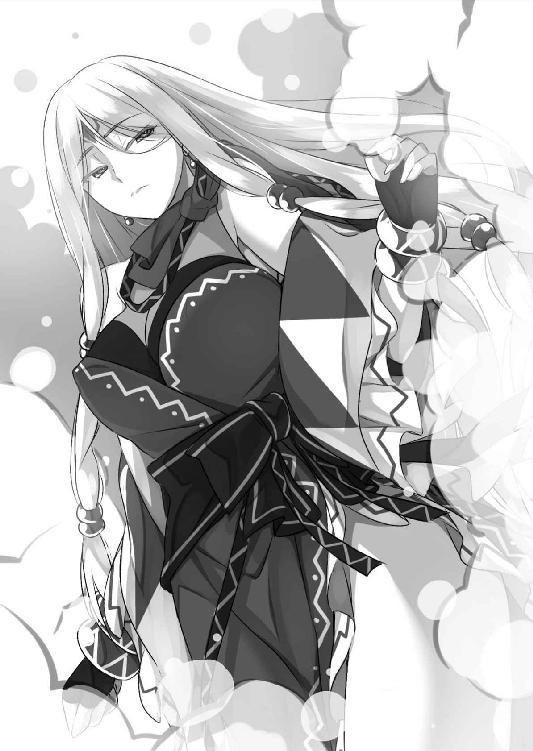

| ランプの魔神が美女だったので、恋人にして同棲性活を始めてみた (二次元ドリーム文庫) | |
| 百花乱太郎 | |
| (2015) | |
※本作品の全部あるいは一部を無断で複製・転載・配信・送信したり、ホームページ上に転載することを禁止します。本作品の内容を無断で改変、改ざん等行うことも禁止します。また、有償・無償にかかわらず本作品を第三者に譲渡することはできません。
※本作品は電子書籍配信用に再編集しております。
目次

第一章 きっかけは願い事
夜の帳が下りると都会の街はきらびやかなネオンに彩られ、一度は落ち着きかけた人の活気が再び勢いを取り戻す。
仕事を終えて帰宅途中の鈴木康太は、駅から出ると街の景色に、少し煩わしそうな顔をした。サークル活動の大学生が賑やかな人だかりを作り、スーツ姿の社会人は重圧から解放されて陽気に浮かれている。渋滞の原因を作っている彼らの間を、康太は縫うようにすり抜けていった。
「はぁー......」
雑踏を通り抜けたところで康太は深いため息をついた。上京して間もないころは華やかな都会の夜に心を躍らせていたが、数年も経つとそれは自分とは関係のないものだということがわかってくる。そして彼らとは違う人種だと気づいた今では、それは自分の惨めさを思い起こさせる景色でしかなかった。
「憧れて都会へ出てきたけど......、結局なんにもなかったな」
そんな独り言ですら、康太にとっては久しぶりに発した言葉だった。こんなにたくさんの人がいる都会なのに、たった一人の話し相手もいない。仕事仲間はいるが、誰も必要以上には関わろうとしない。日給八千円でもくもくと穴を掘って、家と仕事場を往復する毎日。康太は孤独だった。
「僕は人間じゃないな。たぶんモグラだ」
なんのためかも知らずに、ただひたすらに穴を掘っている。朝が訪れると地下に潜り、日が沈むと地上に戻る。ここしばらく満足に太陽の光を浴びた気がしない。
（希望の光なんて見えやしない。いったいなにを目的に生きていったらいいんだ）
「ちょいとお兄さん。見ていっておくれよ」
通りすがりに露天商から声をかけられた。当然余計なものを買う余裕はない。普段ならにべもなく通り去るところだが、この日は気まぐれで足を止めた。明確に意識したわけではないが、人との繋がりを欲していたようだった。
「なにを売ってるんですか？」
路上にマットが敷かれ、その上に商品が陳列されている。
「そりゃあめずらしいものばかりじゃ。余所じゃあ、なかなかお目にかかれない」
露天商は頭にターバンを巻き、髭をたっぷりと蓄えている。見るからに外国人の老人だが、外見とは裏腹に日本語は上手く、意思疎通に問題はなかった。
「ほら、これなんてお兄さんに似合いそうじゃ」
露天商が手に取ったものは、先に綺麗な石が括り付けられた首飾りだった。確かに悪くはないと思った。そんな風に感じたのも、久しぶりの会話が気分を高揚させているからなのかもしれない。
「へぇ～、いいですね。これおいくらなんですか？」
「ん。これは～、一万五千円じゃのう」
「一万っ！ ............」
「ちょっとちょっと。これでも格安なんだがのう」
なにも言ってないのに、露天商は慌てて言葉を付け足す。
「お兄さんはなんにもわかっちゃいない。この先についている石は、とある秘境でしか採れないとても希少な石じゃ。特別な力が宿っていて、身につけているだけで持ち主に幸せを運んできてくれる。それを高いなんて言ったら、うちも商売上がったりじゃぞい」
（おいおい、雑誌の裏なんかでよく見る謳い文句だな。完全に逆効果だぞ）
すでに興味を失っている康太だったが、傍らに置いてある古ぼけたランプになぜか目が引き付けられた。手を伸ばし直に持ってみると、実際にどこか魅かれるものがある。
「あっ！ そ、それはのう～......」
康太がランプに興味を持ったことに気がついて、露天商は動揺を見せた。
「これ......、なんかイイ感じですね。おいくらですか？」
「え～～とね、それは～、......五百円」
「えっ！ ほんとですか!? めっちゃお手ごろな値段じゃないですか」
興味がない人にとってはそれでも高いと感じるかもしれない。しかし首飾りを一万円越えで売りつけられようとしていたため、康太には格安に思えた。
「僕、ちょっとだけアンティークには興味があったんですよ。このランプは雰囲気もあるし、置いておくだけでも趣があるかも」
「へ、へぇ～～～。そ、そうかい。興味がのう～」
露天商は明らかに落ち着かない様子で相槌を打つ。
「う～ん......、よし。決めた！ これ買いますよ」
「ほ、本当かい。え～～と、ありがとう」
「五百円でしたよね。おっ、ちょうどあります。よっ、と......はい」
康太が五百円硬貨を差し出すと、露天商は決まり悪そうに手を広げる。しかし硬貨を受け取る寸前に、露天商は手を閉じてしまった。
「すまないお客さん。やっぱりそれは売れない」
「......え！ どうしてですか？」
数秒間沈黙した後、露天商は重い口を開いた。
「実はそのランプはいわくつきなんじゃ。その......、厄介払いしようとここに並べていた......。すまないのう」
「いわくつき？」
「ああ、そうじゃ。なんでも願いを叶える魔法のランプ、これはそう呼ばれていてのう。確か......この辺を三回擦って、『我の願いを叶えたまえ』とかなんとか言うと、中から魔人が現れるらしいのじゃ」
「へ、へぇ～～～」
（このおじいさん、ま～た変なこと言い始めちゃったよ）
「魔人は三つだけなんでも願い事を叶えてくれる。だが問題はその後じゃ。願いを叶えたであろう者たちはみな命を落としている。おそらくそれが願いを叶える代償ということなんじゃろう。だからこのランプは巡り巡っているうちに、呪いのランプとも呼ばれだしたんじゃ」
（こんな売り文句つけなくても買うって言ってるのに......って、あれっ？ おかしいな。なんで買わせないためにこんなことを言ってるんだ？）
「というわけじゃ。だからお兄さんにこれを売ることはできん」
「ああ、そうですか。それは仕方ないですね」
康太はそう言って呆気なくランプを戻そうとする。すると露天商はその手を掴んだ。
「しかしすべてをわかった上でこれを欲しいと言ってくれるのなら、お兄さんにただで譲り渡してもいい」
「え？ ......まあ、ただで貰えるというのなら、嬉しいですけど。......で、結局これを譲りたいのか、譲りたくないのか、どっちなんです？」
「見ての通り、わしは老いぼれじゃ。どんな形であれ、いずれ誰かにこれを託さないといけないとは思っていた。しかし呪われて死なれでもしたら寝覚めが悪いからのう。つまるところ、まあ、良心の呵責の問題じゃ」
「はあ。おじいさん、結構真面目なんですね。世の中、他人のことなんかどうでもいいって人ばかりだと思ってましたよ」
「歳を取ると死後の世界のことを考えるのじゃ」
康太はマットに陳列された高額な商品を眺める。そして心の中で毒づいた。
（こういうぼったくり商品を販売しても、良心は痛まないのか。都合がいい......）
「じゃあ、いいですよ。僕が貰い受けても」
「え、あ......、しかし......」
「大丈夫ですよ。全部知った上で引き受けますから。これもなにかの縁だったんじゃないですかね」
縁という普段使わない言葉が、康太の口から自然に出ていた。康太自身、なぜこんなに自分から貰い受けようとしているのか、少し不思議な気分がしていた。
「う～ん......そうか。まあ、使い方に気を付ければ問題ないじゃろうしな。よし」
康太が魔法のランプを引き受けることになると、露天商は気が晴れたようだった。「これで肩の荷が下りたわい」などと言って、テキパキとランプを包み始め、手提げ袋まで用意して持たせてくれた。
帰り道、右手の確かな重みが露天商との会話を何度も思い起こさせる。
「なんでも三つの願い事を叶えてくれるか......」
まるで夢のような話である。もちろんそんな話を鵜呑みにするほどお人よしではない。ただ、このランプを持っていることによる呪いのようなものは、心の中で少しだけ不気味に感じていた。
「呪いのアイテムか......。たとえどんな願い事を叶えてくれるとしても、死ぬとわかっていれば普通の人なら誰も欲しがらないわな、そりゃあ」
まるで他人事のようなつぶやきだった。実際このランプを不気味と思えど、康太はそれほど恐れてはいない。荒唐無稽な話はあまり信じる性質ではないし、何より呪われてもかまわないという自暴自棄のような気持ちがあった。
（僕が生きている意味なんてないもんな。たとえ呪われ、殺されたところで誰も......。やめようやめよう、こんな風に考えるのは。せっかくただで貰ったんだから楽しいことを考えよう。なんでも願い事が叶うのか。ハハハ♪ そうだな、まずはなにを頼もうか）
いつしか康太は、子供のような妄想を始めた。
（やっぱり金なのかな......。金があれば世の中たいていのことは上手くいくからな～。でも命と引き換えだと思うとちょっともったいなく感じるかも。それにお金って信用が乗ったただの紙切れだって言うし......。う～～～ん、でもマネーゲームをしかけて世の中を混乱させるのはおもしろいかも）
ふと通りかかりの高級そうなレストランが目に入った。ぐぅ～、と康太のお腹が鳴る。
（キャビア、フォアグラ、うに、あわび、フカヒレ、ツバメの巣、一度は食べたい満漢全席。なんでも食べ放題だ。でも高級料理は本当に美味いのかな。想像つかないや。今のこの空腹を満たすのにはやっぱり、肉汁滴るハンバーグ。緻密な歯ごたえのエビフライ。スパイシーなカレースープ。この辺のガッツリしたものを思う存分いきたいな）
哀しいかな、庶民的な御馳走を想像した方が唾液がとめどなく湧き上がる。口の中はすぐに唾液で溢れかえり、口の端からだらしなく涎を垂らしてしまう。慌ててそれを袖で拭っていると、レストランから現れた女性と目が合った。バリバリ働くキャリアＯＬ風の出で立ちで、こちらを少しも気に留めることなくタクシーに乗り込んでいった。
「うわっ。完全に眼中にない。......でも」
（ヤリてぇ～。タクシーに乗り込むときのあの尻！ スカートが肉圧で張り詰めて桃の形にくっきり！ たまんねぇ～♪ 本当に願い事が叶うのなら、あの人ともエッチできるんだよな。完全に見下されてたけど、下克上を起こして組み敷けるんだ。あのくびれた腰を掴んで、思いきり突き込んで、あんあんよがり泣かせて。や、やばい。勃ってきた）
そんな妄想を繰り返していると、いつの間にか自分が住むアパートへと辿り着いていた。結論として、もしも願い事がなんでも叶うのなら、やはり酒池肉林は欠かせないということだった。
テレビをつけ、夕食の準備をする。電気釜に残っているご飯をお茶碗によそって、帰宅途中で買ったコロッケをパックのままコタツテーブルに広げる。さびしい食卓を見て、現実はこんなものだと改めて思い直す。残り物のサラダがあったことを思い出し、それも冷蔵庫から取り出すと、食卓は少しだけ彩りが増した。
お腹はもうあまり猶予がなかった。スカスカの胃袋の底から、まるで自分とは別の生き物のような唸り声が聞こえてきた。消化するものが足りないと飢餓感を訴えてくる。康太はドカッと腰を下ろし、箸を持ちつつ両手を合わせる。
「いただきます」
空腹を一気に満たすように、惣菜を一口、そしてゴハンをかき込んだ。
夕食を食べ終え洗い物を済ませると、テレビ画面ではニュース番組が流れていた。身だしなみがきちっと整った理知的な女性が、流暢かつ明朗に原稿を読んでいる。
「おっ♪ 北条アナはやっぱり綺麗だねぇ～♥ こういう女性を大和撫子っていうんだよ」
政策動向を伝え終えると、北条貴子アナウンサーはそこに鋭い指摘をした。
『しかしまた庶民に負担を押し付けるという形になるのではないでしょうか』
ここしばらくそんな政策しか聞いたことがない。自分たちが払った血税に対し、福祉の恩恵は感じたことがないのだ。税金の使い道も、負担を押し付ける役人の高給に消え、役に立たない箱物を作って省庁の権益拡大に使われている。康太は胸の内に憤慨を覚えた。
『一方で公務員の給料はひっそりと上がっています。財政健全化の建前はいいのですが、やることをやっていませんよね』
「そうだよ、ムカつく！」
康太は吐き捨てるように口にした。心の内から破壊衝動が込み上げてくる。
「こんな世界なんか終わってしまえばいい」
なんでも願い事が叶うのなら、そのうち一つは決まっているような気がした。どうせ自分の命が尽きるのなら、この世界も道連れにすべてを壊してしまいたい。
「............」
康太は露天商から貰った紙袋をじっと見つめた。
「......一回、......試してみるか」
そう口にすると康太は、紙袋に手を伸ばした。中から布に包まれたランプを取り出し、テーブルの上で広げてみる。
「アンティークとか詳しくないけど、素人目にもやっぱり安物には見えないな」
表面には蔦の葉のような文様が見事に描かれていて、形においても機能美というか、調和の取れた美しさのようなものを感じさせた。
しばらく見惚れていた康太が、おもむろにランプを手にする。
「えっと、確か......こうだったかな」
左手で持ち、右手をランプに添える。形をなぞるように、ゆっくり確実に三回擦った。
「我の願いを叶えたまえ。......だったかな」
少し恥ずかしげだった。それはそうだ。いい大人が魔法の呪文を唱えているのだから。
「............ほら、やっぱり。なんにも起こるわけっ！」
プシュ─────。
突然ランプの口から空気が吐き出され、ややあってからもくもくと煙が上がり始めた。
「わわわっ！」
煙が大量に溢れ出し、あまりの勢いに思わず康太はランプを落としそうになる。
煙は霧散することなく空中に浮遊し、そこへ続々とランプから溢れる煙が合流していく。濃度が上がり、やがて大きな一つの塊となっていくのを、康太はただ見ているだけしかできない。妄想のような話が現実味を帯びてきて、その目はまさに皿のように丸くなっていた。
「あ......、あっ。......ああぁ。う、嘘だろ......。あ、......ああ」
康太は今さら恐怖を感じ始めていた。明らかな超常現象が目の前に迫ってきて、手に負えるものではないと身をもって実感し始めている。しかし軽はずみな行動を後悔してももう遅い。ランプからの煙が途切れ、空中に浮遊する塊がモヤモヤと動きだした。粘土のようになった煙の塊は、明らかになにかを象り始めた。
「ま、魔人が......。まさか、本当に......」
煙は四方へ伸び、腕と脚のような形となる。どんな容姿なのだろうかと、恐ろしい想像が膨らんでしまう。なにせ自分をいずれ死に誘う存在なのだ。人間の体に羊の頭だったり、こうもりみたいな翼を生やした人外の姿を思い浮かべ、その手は情けないほどに震えだした。カタカタとランプを鳴らし、その顔も恐怖を隠しきれず引きつっている。
煙はついに人のような形を取り、そして次の瞬間、その中からぶわっと衝撃波のような風を吹き上げた。風は煙を吹き飛ばすと共に、康太の顔を背けさせる。
突風が収まり、康太は恐る恐る目を開く。するとその目に、スリットから覗く脚線美が映り込んだ。混じり気のない乳白色の肌は、張り詰めて陶器のようななめらかな肌質を想像させる。太もものきわどい部分はスカートによって隠れてしまうが、きゅっと絞り込まれたウエストから、高く張り出したバストへのラインは、服の上からでも思わず目を奪われてしまう。

「私を呼び出したのはお前かい？」
その声に康太は顔を上げる。すると長い睫毛に縁取られた切れ長の目が、鋭い眼差しでこちらを見据えていた。
「え、あ、あっ......、ああ......は、はい......。そう......です」
なかなか言葉にならず、やっとの思いで返事をする。魔人は形のよい小鼻をフンと鳴らし、小さめの口を勝気に吊り上げる。
「私を呼び出したってことは、もうわかっているんだろう。さっさと願い事を言いな」
「え。あ、あ、あ、あの......、えっと。あ、あ、あー......」
康太が反応を取れずに口ごもると、魔人は気だるそうに髪をかき上げる。するとブロンドのロングヘアーがなびいてキラキラと輝き、怜悧そうな顔立ちが美しく冴え渡った。ぶっきらぼうな物言いでとっつきづらそうだが、康太がこれまで会った中では間違いなく一番の美女だった。
「わからないのかい？ 私は魔人レイアだ。お前の願い事を、なんでも三つだけ叶えてやることができる。お前はそのために私を呼び出したんじゃないのかい」
そのことは知っていた。ただ殊更に叶えたい願い事があったわけではない。康太は喉がカラカラに渇いていることに気がついて、ごくりと生唾を飲み込む。
「まあ、私のことを知らなかったとしても、願い事の一つや二つはあるんだろう？ なんだって叶えられるよ。例えば、〝金〟〝女〟〝権力〟。どうなんだい」
レイアの提示した願い事は、人間の欲望を剥き出しにしたひどく卑しいものに思えた。しかし魔人は妖しい笑みを浮かべ、それを恥ずべきことではないとばかりにすすめてくる。
「あ、あの......」
「なんだい？ なんでも叶えてあげられるよ。言ってみな」
「............」
数秒間沈黙した後、康太は宙を見上げた。そして意を決するように空気を飲み込む。
「ほら、遠慮する必要はない。人間は誰だって業が深いんだ。欲望を肯定するんだよ」
康太が真剣な眼差しを向けると、魔人はニヤリと口を歪めた。そして躊躇いを振り切るように勢いをつけて口を開くと、いよいよ康太の願い事が言葉になる。
「ぼ、僕と付き合ってください」
康太が口にした願い事に、レイアはキョトンとした表情を浮かべる。
「............はっ？」
レイアがまるで聞き取れなかったかのように聞き返すと、康太は再び告白をした。
「僕の彼女になってください」
康太の一目惚れだった。
週末の休日、康太はめずらしく早起きをした。いつもなら昼過ぎまで寝ているのだが、この日は午前中のうちに部屋の掃除と洗濯まで済ませていた。昼食もバランスの取れた料理を手作りし、食後その洗い物を済ませると、部屋着から余所行きの服に着替えた。
「よし！ 悪くない♪」
鏡に自分の姿を映し、襟を直しながら自分に言い聞かせるようにつぶやく。オーソドックスなコーディネイトだが、康太にとって精一杯のオシャレだった。
時計にチラリと目をやり、康太はランプを軽くノックした。
「レイアさん。そろそろどうでしょう？」
ややあってから煙が上がり、そしてその煙は美しい女に姿を変えた。
「なんだい？ 残りの願い事をする気になったのかい」
「いえ、そうではなくて。えっと......ほら、今日は以前から約束していたデートに......」
康太は自信なげに女の様子を窺う。五日前、康太に初めて彼女ができた。その彼女はちょっと変わっていて、職業というか身分というか属性というか、彼女はランプの魔人だった。そして名前をレイアと語った。
「ああ、そうだったね。............チッ」
レイアは忌々しそうに舌打ちをした。先日、ランプから呼び出して初めて二人は出会った。なんでも願い事を叶えてやると言われ、康太は自分の恋人になって欲しいと願い事をしたのである。レイアは最初、なにを言われたかわからないという感じだったが、やがてその意味を理解して、今と同じような苦々しい表情をした。しかし大言壮語を言った手前引くに引けなかったのか、レイアはその願い事をしぶしぶ了承したのである。ただし、願い事を三つ叶えるまでという期限付きではあるのだが。
「フン！ 今度はデートかい。お前みたいな人間風情がこの私と釣り合うとでも思っているのかい？ 片腹いたいわ」
なにかレイアの弱みをついた形で付き合うようになり、申し訳ないという気持ちから、康太はなにも言い返せない。ただ一方で、どんなに卑怯と言われようがこの境遇を手放す気にはなれなかった。
「もっとお前に相応しい願い事があるはずだよ。例えばここだ。お前、よくもこんな狭い部屋で暮らしていられるな。私に願い事をすればもっと広い部屋に住むこともできるんだよ。なんなら王族のような暮らしだってできる」
「いえ。そういうのはもう......。レイアさんはやっぱり広い家がいいですか？」
レイアと出会う前は確かに豪華な暮らしに憧れが強かった。暑い日には庭のプールで涼み、寒い日には暖炉を灯し、チェアでうたた寝をする。シアタールームには好きな映画を取りそろえ、オーディオルームは好きな音楽を最高の環境で聴ける。そんな悠々自適な生活を想像しないでもないが、今はなぜかあまり魅力を感じなくなっていた。
「ふん。私にそんなものは関係ない。あまり私を見くびるな」
「そう。よかった、おんなじ感性の持ち主で。あっ、ごめん。僕と比べちゃいけないね」
真意が伝わっていないようで、レイアは再び口を開きかけた。
「なんか......、レイアさんと一緒にいられるだけで満たされるんだよな」
康太のぼそっと言ったつぶやきを聞いて、レイアは少し複雑そうな顔をする。そしてこれ以上願い事を無理強いするのは無駄だと感じたようで、康太を当初の目的に促した。
「ほら、外へ行くんだろ。いつまでここにいるつもりだい」
「デ、デートしてくれるの？」
「しょうがないだろ。付き合うってのはそういうものなんだろ。いくよ」
そう言って出ていってしまうレイアを、康太は慌てて追いかけていった。
二人がまず訪れたのは動物園だった。デートコースとしては無難なはずだが、園内を見て回るとどうも動物たちの様子がおかしくて、盛り上がりに欠けた。二人が檻の前に来ると動物たちは隠れてしまうのだ。これではなんのためにここへ訪れたのかわからなかった。
「なんか、ぜんぜん動物が見れないね。どうしたんだろう？」
「............」
「おっ。あっちには人が集まってるね。行ってみようよ」
あまり乗り気ではないレイアを誘い、次の檻へと向かう。『グアアアォォォ!!』という獰猛な咆哮が、人だかりの向こうから響いてきた。
「うわぁっ。ここはトラの檻だったんだ。レイアさん、見てみなよ。すごく凶暴そうだ」
大きな体躯をしたトラが悠然と観客の前を闊歩していた。時折視線を観客に向け、威嚇するように吠える。二人が檻の前まで来たときも、トラはこちらに視線を向けてきた。しかしレイアと目が合った瞬間、トラは怯んだように視線を外し、そして逃げるように檻の奥へ姿を消した。
「フン。人間よりよっぽど危険察知能力が高いということだね」
「え、なんか言った？」
「なんでもないよ。それより次はどこへ行くんだい」
「じゃ、じゃあ、あっちへ。なんか女の人がたくさん集まっているね」
次に向かった先にはカピバラの檻があった。若い女性に大人気のようで、黄色い声がこだまする。ここの一角だけが妙に華やかだった。その様子を見てレイアがニヤリと笑う。
「まるでハーレムじゃないかい。どうだい康太。お前もあんな風に女をはべらせてみたくはないかい？」
「え、どういうこと？」
「私の力を使えばどんな女だってお前の思い通りにできるってことだ。しかも同時に何人も。有名人だろうが、どっかの女王だろうが、お前の思いのままさ」
「やめてよレイアさん。そんなことを言うのは」
「なにを遠慮している。男の欲求などそういうものではないか。ここにいる動物たちを見てみろ。牡はたいていその力を誇示してハーレムを作っている。さあ、お前も欲望を解放しろ」
「やめてってば！」
「ム............気にくわないねえ」
強い口調で拒絶した康太に、レイアは明らかに不機嫌になった。眉間に皴がより、その体全体に禍々しいオーラが漂いだす。不吉なものを感じ取ったのか、動物たちが園内のあちこちで騒ぎ始め、飼育員たちは慌てて応対を始めた。
「あっ。ごめん、僕なんかが。......でも、そんな悲しいことは言わないでほしいんだ」
康太は声のトーンを落とし、めずらしく自分の意見を主張する。
「願い事だから、僕とのお付き合いが本意じゃないってのはわかってる。けど、少なくとも僕は本気で......。まだ出会ったばかりでおかしいかもしれないけど、レイアさんのこと、僕は好きだよ。レイアさんが彼女だって思うだけで世界が輝いて感じられるんだ。今まで生きてきて、こんなに幸せを感じたことはなかった。だから......」
康太は搾り出すように言葉を続ける。それ故、その響きには重みがあった。
「だから、僕のことを好きになってくれとは言わないけど、この気持ちを茶化すことだけはやめて欲しい」
「............」
レイアは不機嫌な顔をしたまま無言になる。しかし体全体に漂っていた黒いオーラは消えていた。
「レイアさん、怒ってる？」
「生意気な人間だね、この私に意見しようだなんて。本当なら八つ裂きにでもしたいところだけど......、でもまあいい。今回は許してやるよ」
そう言ったレイアの表情は、どこか晴れやかに感じられた。
「うん！ じゃあ、そろそろここを出ようか。どこかでご飯食べて帰ろう」
二人が動物園を後にすると、この日異常行動を起こした動物たちは、ようやく落ち着きを取り戻した。
二人が食事を取り終え、店を出ると、辺りはすっかり夜の景色となっていた。
「遅くなっちゃったから、じゃあ、帰ろっか」
家に向かい歩きだすと、二人の間には微妙な距離感が生まれる。康太はそわそわと落ち着かない様子で、レイアの様子を盗み見する。この距離感を縮めたい。できれば手を繋ぎたい。そんな思いで機会を窺っている。レイアはそっぽを向いて、いつも通りとっつきづらそうだった。
「ねーねー、お兄ーさん。ちょっとうちの店によってかない」
ネオンが灯る裏通りに差し掛かると、二人の女が話しかけてきた。夜の店への客引きである。どちらも化粧が濃く、どこか荒んだ印象を感じさせる。レイアとの間に距離感があるため、一人者だと思われたようだ。もちろん康太はデート中にそんな誘いには乗らない。
「ごめん。帰るところだから」
「そんなこと言わないで、ちょっとだけでいいから遊んでってよ」
何度断ってもこの日の客引きは、しつこいくらいについてきた。やがて女たちは強引な手段に出る。両側から腕を組んできたのだ。
「ちょっ！ ちょっと、やめてよ！」
慌てて康太は腕を振り払った。レイアがいる手前、勘違いされるわけにはいかず、力強く反応してしまった。
「痛ったーい。何すんのよー」
女たちは必要以上に痛がって騒ぎ始めた。するとどこからともなく男の集団が現れ、康太を取り囲む。どいつもこいつも強面で、早速けんか腰に睨みを利かせる。すぐに康太は気がついた。この男たちと女はグルで、自分ははめられたのだと。
「ちょっとお兄さん。うちの娘たちになにしてくれてんの」
「なにって、お誘いを断っただけですけど」
「嘘ついてんじゃねえ！ 手を上げてたじゃねえか。見てたぞ」
「違います。それは、そちらが腕を組んで連れていこうとするから。だから僕はそれを断ろうとして」
「断るためだったら手を上げていいってのか！ ああっ！」
はなから因縁をつける気満々なため、康太の言葉など聞く耳を持つ相手ではなかった。
「だから振り払っただけですって」
「関係ねえ。とりあえず謝れよ」
「謝りませんよ。こっちは悪くないんだから」
弱気の虫が出てきて思わず謝ってしまいそうになる。しかしその言葉を飲み込んで、精一杯強がってみせる。
「まあ、ここじゃなんだから店に行って話しようや」
群れの中から恰幅のいいボス格の男が言うと、他の男たちは示し合わせたように康太の体を押さえにきた。そのときだった。
「大変そうだな、康太」
薄く笑みを浮かべたレイアが声をかけてきた。男たちの視線が彼女に集中する。
「レイアさん、ダメっ！ こっちに来ちゃいけない」
「フフフ。理不尽な圧力に憤慨しているのだろう。そしてこんな男どもを蹴散らす力が欲しいのだろう。私に願えば簡単に力が手に入るぞ。どうする？」
ボス格の男が目配せをする。すると三人の男が康太を押さえつけ、残りが彼女のもとへと近づいた。
「なんだこの女。こいつの彼女か？ だったらこのまま返すわけにはいかないねえ」
「やめろ！ 彼女に近づくな！」
「おっ！ よく見るとめちゃくちゃ美人じゃんか♪ どう、俺たちと楽しまない？」
康太は必死になって男たちの腕を振りほどこうとする。しかし相手が三人ではどうにかなるものでもない。そんな様子を見て、レイアは冷静に言い放つ。
「無駄だよ。お前の力じゃこの男たちに敵いっこないんだから」
「そうそう、彼女のほうはわかってるねえ。こんな彼氏なんか放っておいて俺たちと仲良くしようか。ちなみに俺たち、アッチのほうも強いんだぜ」
男たちは卑猥に笑いながら、馴れ馴れしくレイアの肩に手を回そうとする。
「ほら、私に願い事をするんだよ。そしたらお前は誰に怯むことなく生きていける」
レイアはにべもなく男の腕を振り払い、康太に語りかける。
「なーに無視してくれちゃってるの。泣かせちゃうよ」
「ベッドの上でもか？ ギャハハハハ」
「............。うるさいハエどもだねえ。今いいところなんだ。ちょっと黙ってなよ」
柄の悪い男たちは、それが自分たちに向けられた言葉だとは思わなかったようだ。しかしやがてそれに気がつき、にわかに男たちの様子が変わり始める。
「姉ちゃん、あんまり調子に乗ってると痛い目見るぞ」
恰幅のいい男が声のトーンを落とし、レイアに対してすごんでみせる。
「ハァ......。やれやれ、少し思い知らせる必要があるみたいだね」
煩わしそうにため息をつくと、レイアは男たちのほうに向き直った。そしてその体に禍々しい黒いオーラを纏い、男たちを見据える瞳に黒炎を宿す。それらは普通の人間には見えないはずだが、不吉ななにかを感じ取った男たちは思わず後退する。
「ほう。私の力を測れるとは、さすがケンカ慣れしてるってことかい」
どの男も表情に焦れったさを浮かべている。対峙するのは女で、体格の差は歴然としているにもかかわらず、しかしなにか本能的なものが邪魔をして二の足を踏んでしまう。それがなんなのかわからないため、気持ちと体の乖離が受け入れられないのだった。
そのときレイアの目に康太の姿が映った。康太は思いきり体をねじってのた打ち回り、羽交い締めにする男たちは、先ほどまでとは打って変わって、必死になって押さえつけていた。
「僕の彼女にィィィ......、手を出すなぁぁぁ......。うぁぁぁあああっ！」
康太は思いきり仰け反って、後ろから押さえつける男に後頭部を打ち付けた。
「あっ！ て、テメェ、この野郎ぉぉぉおおおお」
顔を押さえてうずくまる仲間を目撃し、他の男二人は、康太に殴りかかる。一発は左頬に、もう一発はお腹に入るが康太は倒れない。それどころか向かっていき、一人の男の懐に潜り込むと、両手でわき腹の辺りを力いっぱい押し出した。男は吹き飛ばされ、背後の壁へと打ち付けられる。驚いたことに、格闘経験のない康太が、もう一人の男も同様の方法でノックアウトしてしまった。
「うおおぉぉぉぉぉぉぉぉ！！！」
すでに満身創痍の康太だが、雄叫びを放ちながら残りの男たちの群れに突っ込んでいく。するとレイアに気を取られていたためか、康太の気迫のすさまじさに彼らは道を空けた。
「レイアさん。逃げよう！」
偶然にも男たちの隙をつくことに成功すると、康太はこの機を逃さず、レイアの手を取って走りだす。油断していた男たちも逃げられたことに気づき、慌てて二人の後を追いだした。
※
「バッ、バカ。私に手助けは必要ないんだよ。おい、聞こえているのか」
慌ててレイアが説明するが、必死で逃げる康太には聞こえていない。手を引かれているため仕方なく走らされることになり、レイアは忌々しそうに表情を曇らせる。
「レイアさん。こっち」
康太は追っ手を撒こうとレイアの手を引いて路地を曲がる。康太の態度には普段見ることのできない強引さがあった。
「チッ。なんで私が逃げなくちゃいけないんだい。それになんだいこの手は」
逃げるのは不本意だし、康太に主導権を握られるのも気にくわない。そんな不満が言葉になっていた。しかし康太は振り返ると、活き活きとした表情でレイアに向って告げる。
「ごめん。僕のせいで変なことに巻き込んで。でも心配しなくていいから。この身に代えても絶対にレイアを守るから。絶対に手を出させないから」
悪態をつきかけていたレイアだが、あまりに想定外の言葉に気が削がれたのか、なんとも複雑そうな顔をした。その表情はどう反応したらいいかわからないといった感じで、結局レイアは、康太と一緒に逃げることを選んでいた。
夜のガラスに映る二人の姿。手を繋ぎ逃げる男女は、まるで本当の恋人のようだった。
「いたぞー。こっちだ！」
悪者に追われる二人の逃亡は終わりを迎えようとしていた。男たちが二人を視界に捉え、すごい勢いで追ってくる。横道に飛び込んで身を隠すが、康太はすでに肩で息をしている。そしてついに康太の足が止まってしまう。
「はあ、はあ、はあ......んっ。レイアさん......先に行って。はあ、はあ、ここで僕が押しとどめるから。......んっ、はあ、はあ、逃げて！」
「ふう......。大口を叩いてこのざまかい。............チッ、仕方ないねえ」
レイアがあきれた様子でそう言うと、今度は自分から康太の手を引いた。ぐいっと康太を抱え上げると、次の瞬間二人の体は宙に浮き上がり、そして一気に空高く飛び上がった。
「えっ、あ！ ああああぁぁぁぁぁ!! 空に、う、浮いてる」
空中から見下ろした地上では、追ってきた男たち数人が二人のいた辺りを、息を切らせて走り抜けていった。レイアはゆっくりとビルの屋上に近づき、康太を縁へと座らせる。
「あ、ありがとうレイアさん。それと、ごめん......。僕のほうが助けられちゃったね」
レイアも縁へと降りてくると、なにも答えず、腕組みをしてそっぽを向いた。その後二人は黙り込んで、しばらく夜の街を眺めていた。
「痛てて！ ......ああ、そうか殴られたんだっけ。今ごろになって思い出しちゃったよ」
康太は先ほど殴られた左頬を擦る。そこは早くも痛々しく腫れていた。康太と距離を取っていたレイアもそれを見て話しかける。
「フン。慣れないことをするからだ。お前の力じゃあ、本当ならあの中の一人にだって勝てやしなかったんだよ」
「えっ！ そうなの？」
「そうだよ、まったく......。動物だって相手の力量ぐらい測れるっていうのにあきれるね。......しかしそれを考えると、お前、よく三人を倒せたもんだね」
「あのときは、レイアさんを守らないとって必死だったから。火事場の馬鹿力が出たのかな」
「なっ......。し、知らないよ」
レイアは再びそっぽを向く。しかし先ほどとは違い、その表情はどこか優しい。そんな雰囲気を知ってか知らずか、康太は独り言のように語りだした。
「前はさあ、都会が嫌いになりかけてたんだ。田舎からわざわざ出てきたのにいいことないし、それにほら、星が見えないでしょ。汚れた街だなぁって」
「............」
「でもレイアさんと出会ってからは、いつも見ていたものがキラキラ輝きだした。今は街の明かりがなんだか温かくて、星空に負けないとても素敵なものに見えるんだ。一緒にいる人によって、こんなに景色が変わるなんて思わなかった」
ロマンチックな雰囲気になりかけたところで、レイアは話の方向性を変えた。
「そう言えばお前。さっき私のことを、レイアって呼び捨てにしたね」
「あ、......ああ。あのときは切羽詰ってたから。えっと、怒ってる？」
「調子に乗りすぎだよ、お前。目を瞑りな」
レイアは険しい表情で康太に近づいた。
「え？ なに、殴られるの？」
「いいから黙って目を瞑れ」
「わかった、わかったから。手加減してね」
※
康太は目をきつく閉じて衝撃に備えた。レイアが動く気配を感じて肩をすくませる。しかしその身に残ったものは、ふわっとした優しい感触だった。これまで味わったことのない柔らかさが唇に記憶された。漂う甘い香りを鼻腔に吸い込み、ゆっくり瞼を開くと、レイアの顔が離れていくところだった。
「い・ち・お・う、助けてもらった礼だよ。私は借りを作るのが嫌いでね」
レイアはぶっきらぼうにそう告げると、背を向けて康太から離れていった。康太はなにが起こったかを頭の中で何度も確認する。そしてようやく整理がつくと目をキラキラさせてお礼を言った。これが鈴木康太のファーストキスだった。
第二章 同棲生活は誘惑の嵐
夕刻、鈴木康太の部屋にオレンジの陽光が差し込んだ。陽光はテーブルの上にある骨董ランプを照らし、キラキラと輝かせる。そのランプは魔法のランプと呼ばれ、呪文を唱えて中から魔人を召喚すると、呼び出された魔人はなんでも三つだけ願い事を叶えてくれるという代物だった。
ランプの中は魔人の住処となっている。生活をするのに必要最低限の家具だけを備えた殺風景な空間だ。そこのベッドの上に、魔人レイアは寝そべり、天井を見上げていた。
「チッ。この私がよりによって人間の男の彼女だなんて。屈辱以外の何物でもないよ」
レイアは急に舌打ちをすると、イライラした顔で独り言をつぶやいた。
「しかしそれもどうせ、契約が終わるまでのことだ。要は早くあの男に願い事をさせりゃあいいんだ。しかし問題は、あの男はいったいなにが欲しいかだ。それがわからない」
レイアは起き上がると、ベッドの端に腰掛ける。腕組みをして思考を巡らせると、レイアはおもむろに立ち上がった。
「ちょっと探るか」
そう言うとレイアは、足の先から徐々に身体を煙に変えていった。
外界に姿を現すと、レイアはまず部屋を見回す。すると今まで気づかなかったことが不思議なくらい目に留まるものがあった。部屋のあらゆるところに同じ人物の肖像が飾られていたのだ。
「誰だい、この女は」
レイアは壁に貼られたカレンダーに近づくと、小さめに書かれた文字に目を通す。
「北条貴子アナウンサー。アナウンサーっていうのは職業のことだね。あの男、私のことを好きだとか言っていたが、こんな女がいいのかい」
その写真の彼女は、漆黒の黒髪をアップにまとめて、見るからに理知的な雰囲気を漂わせている。服装も清楚で性的ないやらしさをまったく感じさせない。社会人として、非の打ちどころのない容姿だった。
「真面目ぶって、なんだかいけ好かないね。嫌な女を思い出したよ。チッ」
鼻につくのか、レイアは写真に向かって舌打ちをする。そして苛立ちの矛先は康太へと向かった。
「それにしても随分私とはタイプが違うじゃないかい。まさかあの男、私のことを担いじゃいないだろうね」
レイアは独り言を口にしているうちに、みるみる機嫌を悪くしていった。
「好きとか調子のよいことを言っといて、機嫌がいいときにさりげなく私になにかをさせる気だったんじゃないのか......」
そしてなにか気づいたのか、レイアはさらに苛立ちを募らせる。
「ハッ！ それどころじゃないよ。私を思い通りに利用して、三つの願い事どころか、何度でも私に力を使わせる気じゃないのか？ グヌヌヌヌ......。腹が立ってきたよ。あの男が帰ってきたら、きっちり問い詰めてやるよ」
鼻息を荒くし憤慨を撒き散らすレイアだが、それを直接ぶつける相手がおらず、じきに落ち着きを取り戻す。
「探せばまだなにかありそうだね。あの男の本性を暴いてやるよ」
レイアは部屋を荒らすように探索し始める。しかしこれといったものはなかなか見つからなかった。そこでレイアは目を瞑ると、部屋中に思念を巡らせ始めた。
「んっ？ ベッドの下になにかあるね......」
屈んでベッドの下を覗き込むと、数冊の雑誌を見つけた。レイアは手を伸ばし、それを引っ張り出す。そして早速それを開くと、いきなり裸の男女がまぐわう写真が現れた。
「んんっ！」
レイアは柄にもない素っ頓狂な声を上げると、慌てて雑誌を閉じた。
「あ、あの男も......なんだかんだ言って、こういうことに興味があるんじゃないか。ま、まあ、男なんてそんなもんだろうがな......。ふん」
雑誌の端を摘まみ、ペラペラと覗き込んで中身を確認していると、ふいに、ガチャンとドアの鍵を開く音が聞こえた。
「わわわわわっ！」
慌ててレイアはいかがわしい雑誌をベッド下に押し戻す。
「ただいまー。って、レイアさん出てきていたんだ」
「あ、ああ。別に用事はなかったんだけどな。なんとなくだ」
「あれ、レイアさん、顔が真っ赤だよ。どうしたの？」
「な、なんでもないよ!!」
明らかにレイアは動揺していた。それを誤魔化すよう康太に対しては声を荒らげ、自分自身に対しては言い訳がましく小声でつぶやく。
「なんで私が慌てなくちゃいけないんだい。あれはこの男のものじゃないかい。私は別にあんなものに興味はないよ」
「え？ レイアさん、なにか言った？」
「なにも言ってないよ！ ......くっ。お前！ そこに写っている女が好きなのかい」
レイアは話をすり替えるように壁に飾られた写真を指差す。そしてまるでけんか腰で康太に迫った。
「あっ！ こ、こ、こ、これは......。えっ......と、ご、ごめんね。レイアさんのことを好きだって言ってたくせに、こういうのを飾ったままにして」
康太は決まり悪そうに言い訳をする。
「その......前は......好きだったかな。で、でも勘違いしないでね。それはレイアさんと会う前だよ。だ、だから今はもうなんとも......。うん、今はレイアさん一筋。間違いなく」
康太は落ち着かない様子で部屋の中を歩き回り、そこら中に飾られた北条アナウンサーの肖像を回収していった。
康太の動揺する様を目にし、レイアは対照的に冷静さを取り戻す。
「ふん。なんならその女とお前をくっつけることもできるんだよ」
回収し終わった北条アナウンサーのグッズを、どこに片付けようか焦る康太に対し、レイアは不敵な笑みを浮かべ、機転を利かせて願い事まですすめてみせる。そのときだった。床に落ちている一冊の雑誌を、偶然にも二人が同時に目撃した。
「「あっ！」」
それはいやらしい男女の交わりが載ったアダルトな雑誌だった。レイアがベッド下から引っ張り出したもののうち一冊を、どうやら戻し損ねたようだった。レイアは慌てふためき、その顔からは汗が流れ落ちる。
「わ、私はそんな女じゃないよ。こ、こんなものには微塵も興味ない。その雑誌はただ偶然...」
「い、いや、違うんだ。こ、これは僕のものではなくてっ！ いや、ごめん。嘘ついた。僕のものではあるんだけど、そのー......」
レイアが言い訳をしようと口を開くのだが、その言葉に康太の言い訳が被ってきた。そしてそれにいち早く気づいたレイアはすぐに口を噤む。
「こ、これもレイアさんと出会う前のもので。だから決していやらしい気持ちがあるわけでは......あるんだけど......。そ、それは！ レイアさんに対してだけって、ごめん。そんないやらしい目で見てるわけではなくて、この恋は本当に真面目に考えていて」
慌てふためく康太の言い訳は、もはやなにを言っているのかわからない状態だった。ただ脂汗を大量に浮かべ、必死で取り繕う姿が滑稽で、レイアは思わず吹き出してしまう。
「え？」
そしてそのレイアの反応にキョトンとする康太がまたおかしくて、レイアは柄にもなく声を上げて笑った。
「アッハッハッハー...♪ もういい......。もういいよ。おかしいったらありゃしない」
「エヘへ。あ、あの......、とにかく、えっと......ごめんなさい」
康太は笑われていることに照れ笑いを浮かべると、最後に自分の気持ちにけじめをつけるように一言だけ謝った。
「ハッハッハー......。ああ、わかったよ、お前の考えてることは。私はもう帰るよ」
そう言い残すと、レイアはランプの中へと戻っていった。
ランプの中で一人きりになると、レイアは思い出し笑いを浮かべる。
「ふふん♪ あの男、なにをおいても『レイアさん、レイアさん』だったな」
その顔にはもう先ほど見せた苛立ちは微塵もなかった。
「そんなに私が魅力的かい。まあ、人間のような下等生物から見たら当然の話なんだがな。それに奴もご多分に漏れず男だってことがわかったよ。ああいういやらしいことで頭がいっぱいなのさ。今日は収穫があったよ。作戦も決まった。人間よ、私の色香の前に跪くがいい。ハァーッハッハッ♪」
ランプの中にレイアの高笑いが響いた。
次の日の夜、仕事を終えた康太はまっすぐに帰宅した。
「ただいまー。............って今日は出てきてないのか」
元気よく伝えるが返事はなく、その代わり微かに水音が聞こえてきた。その音の出所を探ると、浴室の明かりが目につく。普段は開けっぱなしの折りたたみドアが閉まっていて、すりガラス越しに人肌の色が揺れている。水音は確実にシャワーの音だった。
「お、お風呂に入ってるのかー。............んっく」
腰からお尻にかけてのラインがぼんやりと透けて見えて、康太は思わず生唾を飲み込んだ。頭の中が急激に熱を帯び、下腹がむずむずと疼いてくる。ズボンの下で胎動が始まり、康太はその反応が本格化する前に理性を取り戻そうと努めた。
「お腹が空いたからご飯を食べなきゃ」
まるで自分に言い聞かせるように独り言をつぶやく。浴室の景色を名残惜しみながら後にし、部屋着に着替えて食事の準備をする。しかしいくら冷静を取り繕おうと、頭の中は一つのことしか考えられなかった。
（今このときに、こんなに近くで、なにも着ていない、裸のレイアさんが、すぐそこにいる！）
神経が研ぎ澄まされたままご飯を食べ始めると、やがてシャワーの音がやむ。ドアの開く音が聞こえて、ややあってからこちらに近づいてくる気配を感じた。康太は視線のやり場に悩み始め、ぱっちりと冴えている目をあちこちに泳がせる。
「なんだ、帰っていたのか」
「は、はい。レイアさんはお風呂だったんですね」
自然な振る舞いを心がけて、チラリと横目で見上げる。その瞬間、康太は息を呑んだ。バスタオルだけを身に巻いたレイアがそこにいた。必要最低限しか隠さない格好は、頭がクラクラするほど刺激的だった。風呂上がりのしっとりとした肌がきわどく露出され、康太は箸でつまんだおかずをポロリと落としてしまう。
「フン♪ 落としたぞ」
レイアは挑発的に笑い、康太の目の前を横切る。普段は目にすることができない部分まで、目の覚めるような白さの太ももが晒される。張り詰め、量感を感じさせるが、決して太くはない。健康的で自然な美しさだ。それが二本もあるものだから、太ももが交差するたび、どちらを追えばいいのか瞬間的に魅惑されてしまう。
「............」
康太があんぐりと口を開けて言葉を失っていると、彼女は背後を見せる。すると、ついツンと高い位置に吊り上がったお尻に目がいってしまう。バスタオルはぴったりと張り付いて、浮かび上がった見事な桃尻が、キュッ、キュッ、と左右に揺れる。意外なほどの量感に、思いきり抱き締め、そこへ頬擦りしたい欲求に駆られる。
「！ ......お、お腹が空いちゃったよ」
彼女がこちらを振り向くと、いやらしい気持ちを隠すように視線を外し、から揚げを口の中に放り込む。しかし今は、味を感じないほど神経は散漫だった。
ギシーッ、と音がした。レイアがベッドに腰掛けたようだ。彼女のことが気になるが、じろじろ見るわけにもいかない。その欲求を理性で押さえつけようとするものの、やがて我慢できなくなって盗み見ることに。
上目遣いで覗いた視界に、すらりと伸びた膝下が映り込む。全体のバランスからは、かなり長い二つの優美なラインが、斜めに傾いて重なっている。ご飯を食べて誤魔化しながら脚線美に惚れ惚れしていると、次の瞬間、康太の心臓は鷲掴みにされる。レイアが脚を組み替えたのだ。
（ハッ！ ............い、今。見えたような......気が......）
上に乗せた脚が浮き上がり、そして床に下ろされた瞬間、両太ももとバスタオルの間に空白のデルタ地帯が現れた。反対の脚が持ち上げられ、再び重ねられるまでのほんの一、二秒間、闇の向こう側になにかが見えた気がした。
康太は盗み見るという感覚を忘れ、自分が前屈みになって見ていることに気がついた。しまった！ と思い、恐る恐るレイアの表情を窺う。
「どうした？ なんか言いたいことでもあるのかい？」
レイアはこちらを見下ろしている。しかし高圧的という感じでもなかった。それどころか、目を細め、薄く笑みを浮かべた表情は、むしろ誘っているかのようにも見えてしまう。
（......もしかして。......まさかな。でも......。ダ、ダメだダメだ！ 調子に乗って変なこと言ったら嫌われちゃう）
都合のよい想像を打ち消し、康太はすぐに視線を伏せる。するとその際に、自分の股間がズボンを突き上げていることに気がついた。血流が激しくなり、ムクムクと起き上がる感覚は自覚していたが、ここまで目立ってしまうとは思っていなかった。
（ヤバイ！ これじゃあなにを考えているのかわかっちゃう。隠さないと）
必死で取り繕おうと考えていると、ふいに自分を覆う影に気がつく。テーブルを挟んだところから、レイアがこちらを見下ろしていた。そしてなにを思ったのか、レイアは直線的にこちらへ近寄ってくる。
「えっ!?」
康太は驚きの声と共に思わず仰け反る。レイアはテーブルの上に膝をつくと、上半身も屈ませて、目の前で四つん這いになる。そして手足を女豹のようにしなやかに運んで、康太に迫ってきた。あまりのセクシーな動作に思わず鼻の下が伸びてしまう。
レイアの手が康太の顔に近づく。
（ハッ！ しまった。バレちゃったんだ。怒られるっ！）
康太はビンタされると思って、目を瞑り身構えた。しかし想像していたような衝撃はなく、口元に優しい感触を残す。
「こんなところにご飯がついているぞ」
目を開けると、人差し指に乗せた米粒を見せられた。レイアは妖しく微笑むと、見せ付けるようにゆっくりと口元に持っていく。赤い舌を覗かせるように唇を開き、口の中へと指先を運ぶ。ただ米粒を食べるだけの動作なのに、康太の股間には熱い脈動が漲り、どうしようもなく興奮させられてしまった。
（これってやっぱり......誘ってる？ でもどうしたら......）
潤った唇から目が離せず、ごくりと生唾を飲み込む。魅惑的な肢体を前に鼓動は高まり続け、怒張は突き破らんばかりに股間の布地を張っていた。しかし童貞の哀しいさがなのか、康太は思わず逃げだしてしまう。
「食べ終わったから、か、片付けないと」
空になった食器を重ね、いそいそと台所へ向かう。康太の背中を見送ると、レイアは表情を険しく一変させ、「チッ」と舌打ちをした。
台所で食器に水を溜めながら、康太は自分の不甲斐なさを思い起こし後悔する。
「ハァ............」
重々しいため息を吐き、食器を洗い始める。もしかして千載一遇のチャンスだったかもしれない。それを自分の意気地のなさで台なしにしてしまった。
（レイアさん、どう思ってるんだろう。せめてご飯を取ってくれたことに感謝していれば、また違う展開に発展していたかもしれないのに。なんでこのタイミングで洗い物なんだ。なにが『片付けないと』だ。僕はバカだ。バカバカ、僕のバカ！）
「康太」
「ハ、ハイっ！」
思いがけず声をかけられ、再び体に緊張感が走った。
「そんなに固まってないで、こっちを見たらどうだい」
康太はまるでロボットのようにぎこちなく振り返る。するとレイアはすぐ目の前まで来て、纏わりつくような視線を送りながら康太の顔に手を伸ばす。
「お前、さっきから私の体を覗き込むように見ていただろう」
レイアの手が頬を撫でた瞬間に頭の中が沸騰し、康太は慌てて距離を取ってしまう。しかし今回は、幸か不幸か、逃げ道がなかった。台所の隅に追い詰められて、妖艶なレイアに迫られる。
「私の体に興味があるのかい？」
レイアは胸の下に腕を持っていくと、少し屈んで上目遣いを送ってくる。すると胸元が強調されるポーズになり、康太は思わずそこに見入ってしまう。
持ち上げられた胸が、バスタオルの締め付けと相まって、今にもはちきれそうに膨らむ。二つの盛り上がりによって間には深い谷間が生じ、予想以上のグラマーな体つきに康太は驚きと興奮が隠せない。
「あ、あ......、あの......、えっと......」
下心はないという意味で首を横に振りかけるが、すんでの所で思い直す。
「どうなんだい？」
レイアは「ノー」とは言わせないとばかりに、くねくねと上半身を揺すって科を作る。くにゅ、くにゅ、と白い乳房がいびつに変形し、康太の股間をより一層漲らせる。
康太は唾を飲み込み、男になる決意を固めると、縦に深く頷いた。
レイアは妖しく微笑むと、声のトーンを落として、たたみかけるように囁く。
「フフフ。見たいかい？」
「は、はい」
康太から決定的な言葉を引き出すと、レイアは意味深に告げる。
「フフフ。本当ならこんなことはしないんだよ。お前は特別だ」
夢のような状況。いよいよ自分にもその瞬間が訪れると思い、興奮に鼻の穴を膨らませる。しかし、レイアが口にする次の言葉が、康太を一気に現実へと引き戻す。
「願い事がまだ二つ残っているだろう。お前がその一つを使ってでも私に頼むのなら、特別に見せてやってもかまわない。フフフ。どうする、見たくはないかい？」
高まっていた興奮のボルテージは、その言葉を聞いて一気に下がっていった。まるで酔いが醒めたかのように、自分でも驚くほど冷静になっていく。
（ああ......、やっぱり。......やっぱりそういうことか）
だんだんと浮かれていた自分自身に嫌悪を感じ始め、康太の表情が苦々しく変わる。
「レイアさん。とりあえず服を着てください」
「？ なにを言ってるんだい、見たいのだろう。さあ、頼めばいいんだよ」
康太の変化には気がつかず、レイアはあからさまな誘惑を続ける。首筋まで手を伸ばすと、指先をセクシーに動かして、顎の下をくすぐる様に撫でる。
「やめてください、レイアさん。そのままだと風邪引いちゃいますから」
「ムッ......」
康太が冷静な口調で告げると、それがカチンときたようで、レイアの表情が一瞬変わる。
「どうした、康太？ 私とお前の仲じゃないか。遠慮する必要はないよ」
レイアは気分を取り直して続けるのだが、康太は腕を取って強制的に止めさせた。レイアはそこでようやく康太の変化に気がつき、みるみる表情を険しくしていった。
「あっ......、ご、ごめんなさい」
レイアの腕を離して、すぐに謝る。康太にはレイアを責める気など微塵もなかった。純情な想いを取引の材料にされたとしても、もともとは願い事という形で恋人に縛り付けてしまっていたのは自分だからだ。康太はなんとかお茶を濁そうと努める。
「じゃ、じゃあ、僕もお風呂にしようかな～。あはははは」
しかしその気遣いは、思ったようにはレイアに届かない。
「お前、私を担ぎやがったね。人間の分際で小賢しい男め」
レイアはまるで射殺すような目で康太を睨みつけた。
「か、担ぐだなんて！ そんな疑って掛かるような見方しないでくださいよ」
「大方、私のことを上手く利用する気でいたんだろう。私も舐められたもんだよ」
「ちょっ、ちょっと待ってください。まるで僕が悪巧みでもしたかのように言ってますけど、そこだけは明確に否定しておきますから」
「ああ、うざったいね。この期に及んで、まだ私をコントロールできるとでも思っているのかい！」
「コントロールだなんて......。そんなこと思ってもないですよ」
自分に対する不信感が大きくなっていることが伝わった。どうやらレイアは自分が弄ばれたように感じているようである。その怒りはすでに沸騰寸前で、そう簡単には収まりそうもない。康太は意を決したように顔を上げ、仕切り直そうと努めた。
「あの......、僕はレイアさんのことが好きです」
「フン。そんなことを言えば、女が喜ぶとでも思っているのかい。腹立たしいね。いい加減にしなッ！」
制止しようとするレイアの言葉に負けず、康太は話を続ける。
「だから、レイアさんのセクシーな姿を見られて嬉しかったし、すごく興奮しました。その気持ちだけは、嘘偽りありません！」
康太は自分が恥をかこうと、腹を決めていた。
「これがッ！ これがその証拠です！」
冷めた雰囲気で聞いているレイアに向かって、康太は勢い良くズボンを下ろし、裸の下半身を露出した。
「んんッ!!」
反り上がったペニスが飛び出す。突然の行動にレイアは身を仰け反らせて驚いた。
「バッ、バカ野郎！ そんなもん出すんじゃないよ、この変態がッ！」
「そうですよ。僕は変態です。レイアさんのマニアです。レイアさんのストーカーです」
「気持ち悪いよ、お前」
予想はしていたが、その言葉にはやはり落ち込んでしまう。しかし苦々しい表情のまま、康太は自虐的に話を続けた。
「それにエロくて、スケベで、変質者で、発情期のどうしようもない牡です」
「そっ、それだけじゃないよ。えっと...」
「いやらしい露出狂で、気持ちの悪い童貞で......、はぁぁぁ......」
「うっ............」
言いたいことを先回りされるため、レイアはなにも言えなくなる。
「だけど......。しょうがないでしょ、レイアさんが大好きなんですから。レイアさんだからこんなにドキドキして、レイアさんだからこんなに興奮しているんです」
「............」
いつしかレイアにも耳をかすような雰囲気が表れ始めていた。
「だから本当はレイアさんの裸が見たいです。できることならレイアさんとエッチしたいです。でも......。だけどそれを願い事ですることはできません」
「なっ！ 誰がヤらせるって言ったよ。......み、見せるだけだ。いくら願い事をしたってそれだけはさせないよ」
「あ、ああ。そうですよね......。それはそれで残念のような......。と、とにかく、そういうことをするのは、両者の真正なる合意のもとでないと僕には意味がないんです。僕はレイアさんの心が欲しいんです」
「くっ......。両者の合意って、そんなことあり得ないね。それに心ってなんだい」
口ではぶっきらぼうに言うが、レイアの態度には、先ほどの刺々しさはなくなっていた。
「わかってもらえましたか？」
康太は砲身の先を近づけて訪ねると、レイアは顔を背けた。
「汚いものを近づけるんじゃないよ。ほら、とっととズボンを穿いて隠しな」
「いーえ。わかってもらえるまで穿きません」
「なっ！ ............チッ。わかったよ」
レイアは一度康太を睨みつけるが、ぷいっと再び顔を背け、ぶっきらぼうに答えた。
「わかってもらえましたか。よかった」
心底安堵したような表情を見せ、ようやく康太はズボンを穿いた。
風呂から上がり、パジャマに着替えても康太の股間の昂りは収まっていなかった。康太は隠しているつもりでも、レイアはそれを厳しく見咎める。
「お前、いつまでそうさせとくつもりだい」
「あはははは......。す、すみません。こればっかりは自分の意思ではどうにもできなくて」
康太は恥ずかしそうに笑いながら、なるべく股間を隠そうとする。その様子を気にしてか、レイアは何度かチラ見して、なにか言いたげに口を開きかける。が、躊躇った末に結局口を噤む。
「ごめんなさい」
唐突に康太が謝った。レイアは一瞬動揺した様子を見せて、その意味を聞く。
「な、なにがだい？」
「さっきはあんなに格好つけたこと言ったけど、本当はレイアさんの意思を無視しているのは僕のほうです。僕がレイアさんに彼女になってほしいって願い事をしたから......」
康太は言い難そうに、何度も言葉を止めながら話を続ける。
「でも、矛盾してるかもしれないけど、この願い事は撤回したくないんです。僕は、僕の人生は、レイアさんが隣にいてくれてすごく変わりました。キラキラと輝いて、毎日が楽しくて、初めて自分の人生を謳歌しているんです。だから、だから......」
康太は言葉を詰まらせる。それを見てレイアが落ち着いた口調で話し始める。
「いいんじゃないか。なんでも願い事を叶えると言ったのは私のほうだし」
「で、でもレイアさんは願い事を叶えさせて、早く終わらせたいんじゃ......」
「多少は大目に見るさ。私には永遠のように時間があるからな」
「............」
「それに、人間の願い事なんてこれまでさんざん叶えてきたけど、どれもこれもみんな身勝手なもんだったよ。浅ましくて、卑しくて、そんなもんだろ」
レイアは苦々しい顔でそう語る。しかし康太と向き合うと、ふっと表情を緩ませ、言葉を続ける。
「それに比べたら、お前の願い事なんてまだ可愛いもんだよ」
そこまで言うと、レイアは再び康太の股間をチラ見する。
「あ～～もう。まどろっこしいのは苦手だよ。康太、ズボンを脱ぎな」
「......へっ？」
「私の勘違いだったみたいだし、責任は取るよ。すっきりさせないと直らないんだろ」
いつも怜悧そうな表情のレイアが、ほんのりと頬を赤く染めて言う。
「えっ？ あ、あの......？ えっと......それって......」
「あーもう、つべこべ言ってんじゃないよ。いいから脱げっ！ ............ったく」
レイアの怒るような声に押されて、康太は急いでズボンを脱ぎ下ろした。真面目な話をしていても収まらない興奮の証が、再びレイアの目の前に晒される。
「安心しな。これは願い事にカウントしやしないよ」
そう言うとレイアは、勢い良く反り上がる康太のシンボルに手を伸ばした。
「ああっ、もう！ まったく、なにをやっているんだろうね、私は」
レイアの手が茎胴に触れた瞬間、康太の体に電流が走った。
「はぁうぅぅ!! ............ぅうぅ」
茎胴に触れられた瞬間に全身の毛が逆立つような痺れが走り、康太は思わぬ呻き声を上げていた。股間に生じた電流はあっという間に全身に広がり、制御しきれない感覚に体温が急上昇を始める。頭の中までがいつもと違って、世界が揺れているように感じる。初めて他人に性器を触れられたが、こんなに鋭い感覚は予想外だった。
「ちょ、ちょっと待って......」
なんとかそれだけを言う。気持ちいいとか、そういう問題を通り越して、全身の皮膚が神経を剥き出しにされたようで恐かった。
「なんだい？ ......どうした、やめようか？」
「い、いや。そうじゃなくて。人に触られたのが初めてだったから、痺れちゃって。こんな感覚、初めてだよ。こ、今度はちゃんとするから。だから......、また......」
「そうかい。じゃあ、続けるよ」
再びレイアが茎胴を握ると、またも康太は呻き声を上げ、ビクンと仰け反った。しかし今度はレイアを制止しなかった。
最初は発病したかのように全身の毛穴が開き、頭の中まで浸透する熱に思考を持っていかれそうになった。そのことを思うと、今はだいぶ身体を制御できている。
「痺れるっ......。う......ぅぅ......、だけど」
痺れの中に甘美な感覚を判別できるほどに、康太は快感を享受し始めていた。
「気持ちいいのかい？」
その問いに康太はカクカクと頷く。刺激には徐々に慣れはしてきたものの、それ以外のことをする余裕など微塵もない。急所を握られたかのように力が抜けて、為す術なく無防備な姿を晒してしまう。
薄く目を開けると、霞がかった視界に自分の股間の景色が映り込む。黒々と生い茂る陰毛の中から、茶色に紫がかった不気味な色合いの性器がそそり立つ。それを穢れとは無縁の細く長い指が優しくあやしている。五本の指はまるで白魚のように綺麗で、血管を浮き立たせる男根とのコントラストが、なにか妖しい興奮を引き起こす。血流が活発になり、砲身はビクン、ビクンと自分の意思によらず波を打ち始めていた。
「そんなにいいのかい？」
その問いに視線を向けると、レイアはいつもと変わらぬクールな表情だった。自分は欲望に身を任せ、快感に息を荒くしている。無様な醜態ばかり晒して自分が情けなく思えるのだが、どういうわけか、もっと自分自身をさらけ出したいという矛盾した衝動にも駆られる。
「いい......。気持ちいいよぉ......、レイアさん」
普段ならとても出せない甘えた声で応えてしまう。どんな風に思われてしまったのか不安になり、複雑な気持ちを宿した瞳でレイアを見る。
「............」
レイアはなにも言わない代わりに、じっとこちらを見つめ返してきた。瞳の中を覗かれて、すべてを見透かされている気分になって、涙が溢れそうなくらい切なくなる。
「あぁぁぁ......」
突如上昇を始めた快楽に、康太は目を瞑って喘ぐ。すると次のタイミングに、口に柔らかな感触が覆いかぶさる。驚き、目を開けると、超至近距離にきめ細かな肌が。
「んんっ。あぅんん......。はぅ......ん」
口内に侵入する軟体に言葉を遮られるものの、心地よい拘束に、康太はすぐに身を任せる。そして股間は昂りすぎていて、もはや自分のものではないようだった。
ビュゥゥウウウッ！ ビュッ！ ビュゥウウウウッ！
我慢するという感覚もわからず射精してしまった。
レイアが顔を離すと、二人の口の間で透明な粘液が糸を引いて切れた。
「ハァ、ハァ......、んっ、ハァ、ハァ」
康太の荒い息遣いが届く距離に、レイアの上気した顔が留まっている。康太のペニスは未だ痙攣を続け、彼女はそれを決して放さず、あやし続けていた。
「はぁ、はぁ......。レイアさん。どうして......？」
康太の問いを遮るように、レイアが再び顔を近づけ口をふさいだ。少なからず嫌われていないということが伝わり、安心して心の中がほっこりと温かくなる。
口を開き差し込まれる舌を受け入れると、敏感な口内の粘膜は、異物に軽い痺れを感じる。しかし粘液でコーティングされたレイアの舌は、康太の口内と絶妙な摩擦を生んで、やがてそれが病み付きになりそうな刺激となる。さらにレイアの香しい匂いが鼻腔を通り抜け、まるで蜜のような唾液が注ぎ込まれると、麻薬のように脳髄にまで甘い波紋が及んだ。
「はむ......。ん......うう......む。んちゅ......ち......う」
康太からも舌を押し付けると、二人の熱気は一気に加速した。顔の角度を変えて、貪るように舌を絡ませ合う。二人とも本能で快楽に没頭しているようだった。
「ハァ......む。ん、ん、......んはぁ......あはん」
口の端から唾液がこぼれ、いつもはクールなレイアからも甘い吐息が洩れる。それを耳にしているだけでも、康太はたまらない気持ちになる。さっき放出したばかりだというのに、股間ではムクムクとペニスが起き上がり始めた。
その図々しさに、レイアは顔を離して、上目遣いで睨みつけてくる。しかしその瞳にはいつもの力がなく、なんとなくじゃれ合うような甘い態度に見えた。
「しょうがないでしょ。こんなことされたら我慢できませんよ」
「生意気だね。言うようになったじゃないか。フン」
レイアはそう言って、機嫌を害したかのようにそっぽを向いた。しかし肉茎に添えられた手は放されることはなく、ずっと優しくさすり続けている。
「レイアさんのせいですからね。責任取ってくださいよ」
今度は康太から攻める。横を向いたレイアから強引に唇を奪う。眉間に一瞬皴がよるものの、レイアはさしたる抵抗を示さなかった。
康太は舌先で唇の合わせ目をなぞる。するとややあってから、レイアの唇が開かれる。康太の舌がレイアの舌と接触し絡みつくと、最初は遠慮がちだったレイアの舌も絡み返してくる。股間ではいきり立った男根が元気よくはね回り、康太が内心有頂天になっているのが、ありありと表れていた。
調子づいた康太はレイアの身体を抱きしめる。わずかに見せる抵抗を拘束を強め封じる。なにか言いたげに開かれる口も、覆うように口付けをし、舌をねじ込んでしゃべれないようにした。
（思っていたよりも華奢なんだな、レイアさんって。なんかすっごく可愛いな）
抱きしめてみると、それほど大きくない康太でも簡単に腕が回ってしまうほど細かった。
レイアの体温が接着面から伝わってくる。同時に適度に弾き返す肌が、肉質の柔らかさも感じさせる。ふいに一際柔らかい感触に気づく。服の上からとはいえ、ムニョン、ムニョンと、まるで康太の胸板に吸い付くようだった。
（こ、これは！ お......お、お、お、お、おっぱい!!）
マグマのような熱い血流が腹の底から沸き上がる。その熱は頭にまで伝播し、興奮を一気に呼び起こす。理性を上回った欲望により、さらなる図々しさを身につけ、レイアの背中に回されていた手を下方に下ろしていく。腰から急カーブを描き、格好よく持ち上がった臀部へと手の平を這わせていった。
（お、お、お、お尻ぃ───。レイアさんのお尻だぁぁぁ───）
「んんんっ！」
レイアが抵抗を見せる。しかしそれも構わずに五指をいっぱいに広げる。おっぱいとは違う、弾力に溢れる感触がたまらない。康太は指に力を込めて鷲掴み、沈み込ませては弾き返す触り心地を堪能する。さらにお尻の割れ目へと指を忍び込ませようとすると、一際激しくレイアが抵抗した。
「こ、このぉぉおおー」
レイアがキスを振りほどき、康太を睨みつける。
「ハァ、ハァ、ハァ......んっ。ハァ......調子に、乗るな！」
レイアは怒声と共に肉茎をギュッ、と力強く握り締める。次の瞬間、白濁液が宙に飛び散った。
「ああっ！ ああぁぁぁぁ......」
康太は射精しながら理性を取り戻し、調子に乗りすぎたと反省した。
第三章 彼女の性活事情
朝、目が覚めると、コタツテーブルの上を見ることが康太の新しい習慣になっていた。この日もそこにランプがあることを確認し、昨日までの思い出が夢ではない幸せを噛み締める。それから朝ご飯を食べ、仕事へ行くための準備をする。康太が仕事着に着替え終わったちょうどそのとき、ランプから煙が上がり始めた。
「朝から調子が良さそうじゃないかい」
煙は美しい女に姿を変え、康太に声をかけた。
「おはよう、レイアさん。めずらしいね。この時間に出てくるなんて。どうしたの？」
康太は敢えて、この時間帯にレイアを呼び出さないようにしていた。レイアはいつも朝の機嫌が悪いのだ。曲がりなりにも一緒に生活していると、いろいろなことがわかってくる。
「べ、別にどうもしやしないさ。私が出てきて迷惑だっていうのかい」
「いやいや、そんなわけないでしょ。レイアさんこそ、僕の気持ちわかってるくせに」
「くっ......。し、知らないねっ！」
レイアは顔をほんのり赤く染め、まるで照れを隠すようにそっぽを向いた。康太の態度には、以前ほどの遠慮はなくなっていた。それとは対照的に、今のレイアには明らかにぎこちなさがあった。
「あっ！ そろそろ行かなきゃ」
家を出る時刻が近づき、康太の様子が慌ただしく一変する。それをレイアは腕を組んだまま横目でチラチラ見て気にかけている。いよいよ康太が家を出る気配になると、レイアはどこか名残惜しそうに声をかけた。
「わ、忘れ物はないかい」
「え～と......、うん。大丈夫かな」
康太が玄関まで移動すると、レイアはそこまで甲斐甲斐しく付き添った。なんだか嬉しくて、康太はレイアにのろけ話を持ちかける。
「こうしてると、なんか僕たち、夫婦みたいだね」
その言葉にレイアは明らかに動揺する。そしてそれを隠すように康太の背中を乱暴に押して、今度は早く家を出るように急かした。
「バッ、バカなことを言ってるんじゃないよ。ほら。さっさと行きな！」
「おわっ！ ったた。じゃ、じゃあ、行ってきます」
押された勢いそのままに、康太は玄関を飛び出していった。
※
ドアが閉じられるのを確認すると、レイアは大きく息を吸い込み、「ハァ～～～」と、震わせながら吐き出す。それから数回、動揺を解きほぐすように、レイアは深呼吸を繰り返した。
「苦しかった～～～。こんなにも息をするのがままならないなんて」
ようやく落ち着いた様子を見せると、レイアはそんな独り言をつぶやく。やはり以前の彼女とはなにかが違っていた。
「最近康太の奴と面と向かうと、胸が詰まって仕方ないよ。なんだい、このモヤモヤした感覚は......。呼吸さえ上手くできないなんて、いったいどうしたっていうんだい」
ため息混じりの言葉だが、その響きにはなぜか悲愴感はない。むしろ浮かれている印象すらあった。
「ああ～......でも、康太の奴がいないと、それはそれでつまらないもんだね。せっかく顔を見に出てきてやったんだから、アイツももっとのんびりしてけばいいのに」
そのときだった。突然玄関のドアが開かれ、康太がひょっこり顔を出した。レイアは慌てふためくが、すぐに何事もなかったように取り繕う。直前の言葉などなかったかのような素っ気ない態度である。
「レイアさん、忘れ物しちゃったよ」
「な、なんだ。だからさっき確認したろうが。まったく......。......ん？ どうした」
忘れ物をしたと言いながら、康太はそこから動こうとしない。
「忘れ物はね、〝行ってきますのチュー〟」
そう言うと、康太は口を尖らせ、レイアに向かって顔を突き出した。
「な、な、なな、なにを言ってんだい！ お前、この間からちょっと調子に乗りすぎだよ」
「え～～～。でも恋人ならこれぐらい当然でしょ。あー、もう時間ないよ。早く早く」
康太もだいぶ図々しくなった。身勝手なことを言いながらレイアを急かす。
「お前、その言い分はずるいぞ」
レイアの反論を康太はものともしない。「ん～～～」と言いながら、唇を突き出す。
「あーっ、もう！」
レイアは苛立ってみせるが、やがて根負けしたように正面を向いた。康太はそれを了承と受け取って、目をキラキラと輝かせる。
「しょうがないね。......ん」
レイアはぶっきらぼうな態度で目を閉じ、唇を差し出すように顎を上げる。照れているのか、その顔は赤かった。
「わあ♪ レイアさんのキス顔、可愛いな」
「く......。ふ、ふざけるな！ チューはなしにするぞ！」
「します、します。すぐにしますから。じゃあ」
レイアの肩を掴み、康太が顔を近づける。レイアも目を閉じて受け入れる。
小鳥がついばむ様に二人の唇が重なり、チュッ♪ と音を立てて離れた。
「じゃあ、行ってきます」
「あ、ああ......」
可愛らしいキスを終えると、康太は凛々しく敬礼をして玄関を出ていった。一方レイアは、ほんのりと顔を上気させ、恥ずかしげに視線を外して応えた。
玄関で見送ってから部屋へと戻り、レイアはベランダへと近づく。そして窓を開けて小さくなっていく康太の後ろ姿を見送った。
「康太の奴、今度こそ本当に出ていったね。まったく人騒がせな」
そう独り言をこぼすと、レイアは先ほどまで康太が寝ていたベッドに腰掛ける。まだ温もりの残る布団に手を置くと、なにを思ったのかそれを引き寄せ、ぎゅっと抱きしめた。
「............キス。......キスしたな。......康太とキス」
レイアはベッドに倒れこみ、一際強く布団を抱きしめる。それでも溢れる想いには見合わないようで、ごろごろと転がり体を揺らし、声にならない甘ったるい吐息を洩らす。
「はぁぁぁぁ......ん......。んん～～～～♪」
普段人前では絶対に晒さない姿だった。
「なんなんだい......この気持ちは？」
キス自体は初めてではないが、義理に駆られてしたときとはまったく感じが違う。どうしようもないほど気分が高揚し、湧き上がる衝動に自分自身でも戸惑っていた。
これまでレイアは何人もの人間に出会い、いくつもの願い事を叶えてきた。どんな人間も、なんでも願い事が叶うという特殊な状況下に置かれると、みな利己的で浅ましい本性を晒け出した。レイアは自分勝手な欲望を叶えてやりつつも、人間などこんなものと見下し、失望し、侮った。だが康太だけは勝手が違った。自分に対して無垢な好意を寄せてきたのだ。これまで会った人間の中にも、レイアの美貌に目をつけた者がいたようだが、なんでも願いが叶うという状況を前に、貴重な機会をみすみすそこに使うものなどはいなかった。
「煩わしいったら、この上ないよ」
康太の願いを最初はそんな風に苛立ち、吐き捨てていた。そして、残り二つの願い事をさせるため、どうやって欲望を誘発し、ピリオドを打たせようか、毎日のように康太のことを考え始める。しかし、それでも浅ましい欲求には振り返りもしない康太に対して、逆説的に人間の持ち得る純粋さを感じ始めることになった。
「匂いがするね......。これは間違いなく康太の匂いだよ」
レイアは布団の中に顔を埋め、鼻を鳴らす。
「ハッ！ な、なにをやっているんだろうね、私は......」
ふいに我に返ったのか、自分でもおかしな行動を取っていることに気がつき、自虐的に表情を歪める。
「なんであんな男のことを......。じょ、冗談じゃないよ。だいたい最近アイツは生意気なんだよ。だからこんな変なことになる」
苛立ちの矛先を康太に向けて、わけのわからない気持ちの整合性を図る。
「バカで、ヘンタイで、くずで、スケベで、さかりのついた発情期で」
康太への悪口を並べ立てていく。いくらでも出てきそうな勢いだ。
「うだつは上がらないし、弱っちいし、そのくせ出しゃばって痛い目を見て、あ......。だ、だがまあ、それだけ強い意志があるということか」
いつかチンピラたちと揉めたとき、体を張って助けに来たことを思い出し、そこの部分にはフォローを入れる。
「なよなよしてて、へらへらしていて、男らしくなくて......。ま、まあ、よく見れば顔はそんなに悪くないか」
時折見せる康太の真剣な表情を思い出す。それは決まってレイアに想いを告げるときだった。その熱情まで思い起こされ、レイアはほんのりと顔を赤く染め、無意識にのろけてみせる。完全に盲目状態だ。
「か、顔の作りはむしろカッコイイかもしれんな。こう、なんというか、愛嬌もあるし。一応アイツはこの私の彼氏ということだからな。そのくらいでなければ、この私とキスなんてさせやしないよ。......キスなんか」
やるせない想いに駆られ、レイアは胸元で手を握り締め、身体を縮み込ませる。
「あぁ......、なんだっていうんだい。胸が......、胸が締め付けられるよ」
レイアはこんなことになった転機を思い起こす。それは康太の性欲処理を手伝ったときだった。
「あんな破廉恥なことはしたくなかったんだよ。でもあのときは成り行き上仕方がなかったんだ。好きでやったんじゃないよ。嫌々やってやったんだ」
レイアの喉がごくりと鳴った。
「ハァ、ハァ、この私が人間の......、あんな醜いものを......触るなんて。............?!」
そのとき、頭に浮かんだ言葉にレイア自身が驚愕した。
「い......嫌......、じゃ......、なかっ......た......」
誰もいない空間で、なにも取り繕う必要などない。しかし自分の発した言葉によって、体の中から羞恥の炎が燃え上がり、その熱に炙られたレイアは顔を真っ赤に染めた。
「くっ、確かに嫌じゃなかった。......いざアイツのものを目の当たりにしたら、な、なにかドキドキしていた。はぁ、はぁ......。あのときは嫌悪感など微塵もなかった」
レイアは唾を飲み込んだ。自分はとんでもないことを口にしているのではないかと緊張している。しかし何故だかここで止めることはできない。
「ふ、触れると、生命の脈動を感じて......。熱くて......、それにすごく硬くて......。頼もしい？ な！ なにを言ってるんだろうね、私は」
ふいに理性を取り戻し、堕落した言葉を発する自分を恥じる。しかし頭の中は、すぐにあの日の光景を映し出す。淫靡な誘惑は強烈な引力でレイアの思考を引き寄せる。
「ア、アレはじきにビクビク痙攣を始めたんだ。それから精子を撒き散らして。フフフフ。あのとき康太の奴、随分と情けない顔をしてたね。ぁ...うぅ......んん」
身体の芯から熱いざわめきが起こり、レイアは甘い吐息を洩らす。
「そうだ。あのときも、ふ......ぅん。どうしようもないくらいに康太のことが愛おしく思えて......。それであんなことを」
あの日、恥ずかしげに顔を歪める康太へ、レイアは自分から唇を重ねたのだ。敏感に感じて反応する康太に、心をくすぐられる思いがして、気がついたら体が動きだしていた。そのときのことを思い出して手の平を胸にあてがう。すると触れたところから甘いさざ波が広がった。
「ふうぅ......んん。あぁ、なんで......。胸がすごく張ってる。あっ......ン」
レイアは息遣いを乱すと、布団を強く抱きしめた。品がないとわかりつつも、脚でも行儀悪く掻き抱く。
「ハハハ。我ながらに大胆なことをしたもんだよ」
気丈に振る舞うものの、顔は上気し、声が震えていた。
指先でそっと唇に触れてみる。先日の口付けがより強く思い出され、布団に巻きついた脚がさらにぎゅっと絞られる。次第にそれだけでは満足できなくなったのか、腰は所在なげにもぞもぞと蠢き始める。
「はぁあぁぁぁ。胸だけじゃないよ。身体の芯が......ぁ、熱い......」
レイアの手が躊躇いながら動きだす。胸に当てられた指先が稜線に沿ってゆっくりと円を描く。柔らかな山をわずかに沈み込ませながら、螺旋状に上っていく。
「はぁぁ......ぁあああぁぁ。ぅ......んん......、こうたぁ......」
まるで熱にうなされているかのように呻き、無意識のうちにその名前を呼んでいた。
指先は胸の頂まで上り詰める。最後に中指が、頂上をはじく様になぞり上げる。
「あっ！ はぁああぁ......。はぁ、はぁ。うっ、ぅんんん......」
脳髄を襲う甘美な痺れに、レイアは頤を仰け反らせて喘いだ。
「はぁ、はぁ。こんな......こと......」
ままならない自分の身体を、無理矢理押さえつけるように小さくなって掻き抱く。この感覚を恐れるが、心の片隅でどうしようもなく惹かれている。いや、どうしようもなく惹かれているから恐れているのだ。
「ああっ！ もうダメだよ」
やがて我慢できなくなって、レイアの手が豊かな胸の膨らみを鷲掴む。先ほどよりも力を込めて、五本の指を柔らかな山に沈み込ませた。
「アアアアッ！」
眉間に皴を寄せて声を上げるが、その直後には、レイアの表情は愉悦に変わっていた。そしてこれをきっかけに、レイアの秘め事は加速していく。
乳房を揉む手が忙しく動きだし、また別の手は太ももの狭間へと差し入れられる。脚はきつく閉じられ、快感と理性の間で板挟みにあっているのか、ビクビクと痙攣していた。
やがて絹が擦れるような声が、レイアの口から継続的に洩れ始める。
「はっ......。ぁん......。あぁ......ん、はぁう......んんっ」
消え入りそうなほどか細い声である。普段の強気な声音からはかけ離れていて、なんとも情感に溢れていた。
身体からはだんだんと強張りが抜けていく。それに伴いレイアは自分にとって具合のよい動きを模索し、貪欲に行動へ移していく。
「ダメだ、あっ...うん。我慢できないよ。......ぃ、ぃぃ。気持ちイイッ」
淫猥なことをしているという自覚はあっても、官能の炎に煽られてその手を止めることができない。歯止めを失ったその手はまるで別の生き物のようだった。膨らみをいじる指先は頂上部分を忙しなく転がし、時折、芯をほぐす様に房全体を獰猛に掴み上げる。底なしの欲望に突き動かされているようにその動きが執拗に繰り返され、レイアに潜む卑猥な部分を赤裸々に現していた。
「あっ、あ......あん。はぁ......、ああ......、こ、こうた......あ、はぁ、......ん」
甘い喘ぎ声の間に、康太の名前が呼ばれた。レイアは意識していなかったが、想像の中にはずっと康太が潜んでいた。そしてそのことに、もう強い抵抗を示さなかった。
「はぁ、はぁ......。フフフ。康太の奴、私のお尻に触ってたね。うっ......んん」
想像に重ね合わせてレイアの手もお尻を這う。
「こんな風にして......。そんなに触りたかったのかい？ フフフ♪」
その瞳に挑発するような鈍い光が宿る。妖艶さが増して、まるで夜魔のようだ。
「アアッ！ う、......嬉しい。ふぅ......ん......」
康太に触れられることを思い浮かべると心臓は早鐘を打ち、レイアは心から湧き上がる声を素直に上げていた。
ドキドキと高まる胸の鼓動を抑えるように、胸の柔肉をぎゅっと握り締める。しっとりと肌に馴染み始めた生地が、胸の量感と柔らかさを確かに主張する。
「はっ......あぅ。はぁ、......この先も、ふぅっ......アイツは触りたかったんだな。はぁっ......う......んっ、はぁん♥」
下半身ではお尻の谷間へと指先を侵入させる。深く潜るほどに感覚は鋭敏になり、甘美な電気信号が脳内にまで拡散される。それはまるで天然の麻薬のようで、病み付きにされた身体は愛撫を止められない。後ろからではその先へは届かなくなり、自分の手を躊躇いなく前へと持っていく。指先を股の恥丘に押し沈めると、それまでにない鋭い電流がレイアの全身を駆け巡った。
「はぁああぁぁー......。い、いいぃぃ......」
レイアは恍惚の表情を浮かべ、一際大きな嬌声を放った。それから肩を喘がせ、ゆっくりと目蓋を開く。その瞳には力がなく、レイアの全身から甘ったるい気配が漂っていた。
「ああぁ......、気持ちいいよ。はぁ......。ハハハッ。この私が我を忘れてよがり泣くなんてね。魔神であるこの私が。ハッハッハッ」
レイアは吹っ切れたかのように笑い、ぺろりと唇を舐めた。そして黄金色の悦楽をもう一度味わおうと、指先は再び恥丘を押し沈める。
「はうんっ♥ こ、これじゃあ、現実で今度アイツに触れられても、はぁ～～...ん」
吐く息が震える。それほど心臓の鼓動が速まっている。恥丘を擦る指遣いは激しい上下動を繰り返し、慎ましく閉じられていた脚も徐々に開かれていく。
「き、きっと拒めない......。く......、うぅぅ、はっぁん。......こ、こうたぁぁー......」
レイアは仰向けになると、目を閉じて貪欲に快楽を求め始めた。動悸は、まるで熱に侵されたときのように頭の中まで響き渡る。思考はなんだか鈍くて、ただ本能に誘われるまま自慰に没頭する。
「あん、ああん。はあ......ん。あぁ......、んぁああ。はぁっ......、ふぅっ......んん」
両胸の頂はぽつんと陰影が浮かび上がり、服の上からでも乳首の位置がわかるほどに興奮を宿している。それを転がすだけでは飽き足らず、指の腹で摘んではクリクリと揉み転がす。股間にも生地にじんわりと染みが浮かび始めていた。
「ああ、こうたっ。......いい。そこがイイ♪ ......気持ちいい。ああっ！」
筋状にできた染みに沿って中指が当てられ、その動きはどんどん卑猥になる。手首からスナップを利かせるように変化をつけ、時々震わせては自分で振動を送る。股はだらしなく開かれ、染みはさらに広がっていった。
「康太、ダメぇ。アアッ、あん。はぁ、んっ......うぁああ。も、もっと」
加速する妄想に合わせ、喘ぎ声も切羽詰ったものになっていく。
「ああっ、ダメ。どうなってしまうんだ、......んはぁ。わ、私の身体は......。うぅ......ンっ。おかしい......。おかしいぞ」
レイアの身体は意思によらない痙攣を見せ始めた。
「でも！ はぁ......。気持ちイイッ！ う、ん......。はっ......あぁ。と、止められない！ ぁあっ。来る。なにかが来そうだ」
身体が固まり、息が止まる。次の瞬間、静止していた反動で跳ね上がるように、レイアの身体は弓なりに仰け反った。
「んぁあっ！ あっ、ああぁっ!! ああぁぁ...、んんんんん!!」
脳内では閃光が走り、頭の中が真っ白に染め上げられる。レイアはアクメを迎えていた。
その後も絶頂の余韻はしばらく収まることなく、レイアは感電したかのように身体を痙攣させる。声にもならず、ただ悦楽の中をさまよう。身体は重く、まるで泥の中に沈み込んでいくような心地だった。
「康太......。はぁ......、こうたぁ......」
朦朧とする意識の中、レイアは繰り返しその名前を呼んでいた。
※
「ただいまー。あ～～、疲れたぁー」
この日も仕事を終えた康太は、どこにもよらずまっすぐに帰宅した。ドアを開けると室内には明かりが灯っており、その光景に、康太の心も暖炉の火が灯ったように温かくなっていく。
「お、おかえり......」
康太が挨拶をしてから数秒後にレイアが姿を現し、たどたどしい口調でそう返した。それを受けて康太は思わず顔を綻ばせる。
「な、なにニヤニヤしてんだい！」
レイアは照れ隠しでもするように、不機嫌な態度を取った。
「ニヤニヤじゃないよ。そこはニコニコでしょ」
「チッ。うるさいね。私はそう思ったんだよ」
「純粋にレイアさんが出迎えてくれたのが嬉しかったんだよぉー。ニヤニヤって言うと、なんだかエッチなこと考えてたみたいでちょっと不本意だ。ちぇっ」
「ふ、ふん。そのほうがお前らしいじゃないか」
康太の言葉に少し動揺したような態度を見せるが、そこはレイアがふてぶてしく返す。
「あっ、言ったな、チクショー。じゃあ本当にそういう目で見る」
今度は康太が応戦する。両手で双眼鏡を模して、レイアの身体をまじまじと観察するポーズを取った。
「獲物発見！ 極上の女だぜ。ウヘへへへ。なんて旨そうなおっぱいをしているんだ。それにケツもたまんねぇーぜ」
「なっ！ ............」
レイアは顔をほんのり赤く染めて、両腕を身体の前で交差させる。しかしどういうわけか、いつもは狼藉を許さないレイアがそれ以上の抵抗を示さない。
「よしよし、周りには誰もいないな。ゲヘヘのヘ。襲っちゃうぞぉー。覚悟しろ。がおぉぉぉ！ ......な～んて。さっ、ご飯ご飯」
康太はそうやっておどけてみせたが、レイアの反応は鈍かった。康太の顔をまともに見ることもせず、もじもじとまごつくだけ。傍目には康太の冗談でなければ、そのまま押し倒されてしまいそうだった。康太は一瞬、おやっ？ と違和感を覚えたが、さして気にせず家の中へと入っていった。
康太が晩御飯を食べ始めると、レイアは気だるそうに頬杖をつく。しかしつまらなそうな態度とは裏腹に、ランプの中には戻らずに、当然のように康太の隣に陣取っていた。
食器に残りがほとんどなくなってくると、レイアの様子がそわそわと落ち着かなくなる。チラチラと康太のほうを盗み見て、タイミングを窺うのである。
「あ、あのさ......」
レイアから話しかけるのはめずらしく、その声も少し緊張しているように聞こえた。
「ん？ どうしたの」
「こ、今度の休みはどうする？ また、どこかへ遊びに行くのか？ べ、別に付き合ってやってもかまわないが、行くなら私もそれなりに準備があるからな。聞いてみた」
その声はわずかに上ずって、やはりいつもとは調子が違った。
「あ......、ごめん。今度の休みはちょっと用事があるんだ。本当にごめん」
「そ、そうかい。......ってお前、なにを勘違いしてんだい。私は別に残念でもなんでもないんだよ。むしろ安心しているところさ。なにを謝ってるんだい」
レイアは威勢のいいことを言うが、声のトーンは明らかに低くなっていた。
「次。次の休みはさ、二人で出かけようよ。一日中かけて行ってみたいところに全部行くんだ。どう？」
「だ、だから！ 私は別にっ！」
「違う違う。僕が一緒に出かけたいんだ。どうしても。だから今度は僕とデートしてください。お願いします」
「う......。お、お前がそこまで言うのなら仕方がないね。あ、ああ......いいよ。デ、デート......してやる」
「よしっ！」
デートの約束を取り付けると、康太はガッツポーズをする。腕組みをしてそっぽを向いていたレイアも、その姿を横目で見て柔和な微笑みを浮かる。なにか二人の心の距離がぐっと近づいたような光景だった。
「よかったぁ～。へへへへ♪ なんか安心したら眠くなってきた」
康太は大きく伸びをしながら後ろに倒れた。
「食べてからすぐに横になると体に良くないぞ」
「......うん。............」
返事はするものの康太は動かない。下から見上げる形でレイアを見つめる。
「おい」
「......」
「............」
二人の間に言葉がなくなった。その代わり、視線はこれまでにないくらい熱心に交わされている。
やがて康太が起き上がると、まるで犬や猫のように四つん這いでレイアににじり寄る。そしてちょうどよいところまで来ると、頭をレイアの膝に乗せて再び体を横たえた。いわゆるひざ枕の状態である。
「「............」」
未だ二人の間に会話はないが、レイアもそれを当然のように受け入れている。
康太はひざ枕に慣れていないのか、頭の位置を何度も変える。最初は仰向けから、右向きになり、左向きになり、落ち着かない様子を見せる。
「ふぅ......ぅぅぅ......ぅん」
時折猫撫で声を出して、レイアの太ももに頬擦りをする。そこにはもちろん下心もあったようで、許されているのをいいことに、康太の行動はエスカレートしていった。くるっと回転してうつ伏せになり、太ももの隙間へと顔を埋める。するとレイアは、「こら」と言ってたしなめる。しかしその声にはいつもの迫力はなく、むしろどこかじゃれ合うような響きがあった。
「エヘヘヘへ」
仰向けにされて、頭を太ももの間に固定されると、康太はいたずらが見つかった子供のような顔をして笑った。
レイアはそれ以上咎めることなく、康太の額に手を置く。それから髪をかき上げ、まるで駄々っ子をあやすように優しく頭を撫でる。康太はなんとも心地よさそうに目を細めておとなしくなった。
完全にリラックス状態の康太は、目を閉じ無防備な姿を晒す。そこに付け込んで、今度はレイアが反撃する。ほっぺたを引っ張ったり、鼻を押しつぶしたりと、いたずらを仕掛け、変形する顔を見て楽しげに笑った。
「フフフフ♪」
「ひどいや、レイアさん」
されるがままの康太は、トロンとした表情でレイアを見上げた。
下からも腕が伸ばされる。無骨な男の手がレイアの陶器のような頬に触れる。
「綺麗だ......。本当に」
感嘆のつぶやきを、レイアは素直に受け入れているようだった。その表情はほんのり上気し、瞳には陶酔の色が浮かぶ。下から伸ばされている腕を、安定を欠くという事情もあってか、レイアは大事に抱え込むように両手で支える。
康太の手はレイアの輪郭を手の平でなぞっていく。切り返して手の甲で触れるようになると、その動きは途端に不器用になる。するとレイアは、その手に自ら顔を寄せていく。
「ん......、ふぅ......ん。チュッ」
口元に近づけば、さりげなく口付けをしてじゃれついてみせる。康太の手からは徐々に力が抜けていき、レイアがその主導権を握るようになる。
康太の手は細い顎を下りて首筋に差し掛かる。しかし指先はそこに触れることなく、華奢な肩口に降りた。
「はぁぁぁ......」
レイアの口からため息のような吐息が洩れた。眉毛が八の字に折れて、煮え切らない感覚にやるせない表情を見せる。
レイアはじりじりと康太の手を下ろしていく。ふと戸惑いの素振りを見せるが葛藤しつつもその手を自分の胸元へ運んでいく。康太の指先はレイアの緊張が伝わって震えていた。まろやかに突き上げられている胸に男の指が近づいていく。そして胸の頂までほんの数ミリという瞬間、康太の腕が急に重くなったみたいに、どさっと床に下ろされた。まるで物が落とされたかのような意思のない落下だった。
※
「......なんだい。寝ちまったのかい」
康太からは微かに寝息が聞こえていた。
一人取り残されたレイアだが、それでも恨み言はなく、無邪気に眠る康太を優しく見守っている。
「手......痛くなかったのかな......」
無防備に落とされた腕を心配し、康太の右手に視線を向ける。するとそのすぐ傍のポケットから出ている紙片に目がいった。おそらく今の衝撃で出てきてしまったのだろう。
「なんだこれは？」
レイアは悪気なくそれを引っ張り出してみる。それはおよそ康太の持ち物だとは思えないくらいにポップで可愛らしい封筒だった。穏やかだったレイアの顔がわずかに曇り、封筒を裏返すと、さらに表情が厳しくなった。そこには〝鈴木康太さんへ〟という文字が、女の子特有の丸みを帯びたクセで書かれていた。
苛立ちを隠せないレイアはなんの躊躇いもなく封筒を開く。そして中から封筒と同様の可愛らしい便箋を取り出すと、まるで当然のことのように目を通していく。読み終えたレイアは眉をひくつかせ、明らかに不機嫌になっていた。
レイアが立ち上がると、ゴン、という鈍い音がした。
「う......。いたたた......」
康太が寝惚け眼で後頭部を擦りながら起き上がった。枕が突然なくなったのだから当然頭を打ち付けることになる。
「ちょ、ちょっと。レイアさん............って、あっ！ それっ」
レイアの手元にある手紙に気づき、康太はおろおろと落ち着かない様子を見せる。
「え～、なになに〝突然の手紙で驚かせてしまって申しわけありません。私は康太さんと毎朝同じ電車で通学する女子学生です。名前は、今は伏せさせてもらいますが、どうかお気を悪くなさらないでください。今の私には、あなたに心惹かれていることを告げるだけで精一杯なんです。〟............ほう」
「ち、違うんだ。それは......、あ......、えっと......」
レイアが手紙を読み上げると、康太は慌てて取り繕おうとする。しかし言うべき言葉が見つからないのか、余計におかしなことになるものだから、さらに動揺が増していく。
「〝駅のホームで初めてあなたを見かけ、だんだんと気になり始め、いつのころからか電車の中であなたの姿を探すようになっていました。〟ふん！ なかなかモテるみたいじゃないかい、康太。え？」
「そんなことないってば。ほんとに偶然なんだ。たまたまだよ」
「どうだか......。〝しかしあなたとの接点はなく、日々、想いは募るばかり。せめて少しだけでもお話できればと思い、この手紙を書きました。〟」
レイアは早口でそこまで読み上げ、次の文を強調して読み上げた。
「〝今度の日曜日ですが、なにかご予定は入っていますでしょうか？ もし時間がありましたら、私と会っていただけないでしょうか。〟......さっきお前、この日は用事が入っていると言っていたね」
「ちが！ いやっ、違わないけど。その、ちゃんと断りに行こうと思っていたんだ。ぼ、僕には大好きな人がいるって。だから決して邪まな気持ちがあるとかじゃなくて」
「ほー......。〝なんだか一方的にお願いすることになって申しわけありません。メールや電話だと本当の気持ちが伝わらない気がして。やはり直接お会いしたいです。〟」
その後に待ち合わせ場所と時間が続いて、文章は締められていた。
「暇だったらとかなんとか丁寧には言ってるけど、お前に来させる気満々じゃないかい。図々しい女だよ。いけ好かないねぇ。それに自分の名前も名乗れないなんて怪しいもんじゃないかい。どう思うんだい？ 結局お前は行くのかい？ どうすんだい」
レイアはまだ見も知らぬ女子学生への不満を並べ立て、強めの口調で康太に迫った。
「う、うん。行かないといけないよね。そこはわかってよ、レイアさん」
その答えにレイアはショックを受けたようだった。口を開くが言葉は出ず、ようやく出てきた言葉は見当外れなものだった。
「くっ......。私と別れてその女と一緒になりたいというなら別にかまやしないよ。お前の自由だ。しかし言っておくが、私と別れるというのも、願い事の一つにカウントされるからな。そうなったらお前の願い事は残り一つというわけさ。ハハハハ。もったいないね」
「ちょ、ちょっと、なに話を飛躍させているの。僕がレイアさんと別れたいわけないじゃない。そういうとこレイアさんの悪いところだよ」
「なんだと！ 私を愚弄しようなんて生意気だよ！ フヌヌヌ......」
レイアは今、わけのわからない感情に支配されていた。心の中を掻き乱され、焦燥感や切なさがぐちゃぐちゃになって込み上げてくる。それを上手く処理しきれず、やりきれなさが苛立ちに変換される。そしてその苛立ちはやり場がなく、力を持て余したレイアの手は、女の子の手紙を握りつぶしてしまう。
「あっ！ ダメだって、そんなことしたら。その娘だって一生懸命書いたんだよ」
「やはりお前は、その女の肩を持つわけだな。フンンン......」
レイアの周囲に禍々しい黒いオーラが発生し、おんぼろなアパートは小刻みに震えだした。しかし康太はそのことにはまったく気がつかない。
「私を誰だと思っている！ 人間の分際で調子に乗るんじゃないよ」
レイアの右手に禍々しい魔力が凝縮される。アパートはいよいよ軋み始め、異変を感じ取った他の住民が、慌てて部屋を飛び出している。
レイアは右手を振り上げ、今にも溜め込んだエネルギーを解き放ちそうな姿勢を取る。
「「............」」
無言で向かい合う二人。
「はいはい。まったくもう......。レイアさんはめちゃくちゃだよ」
やがて康太がぼそりとつぶやくと、レイアはその手を振り下ろした。
「こ、この......バカ野郎ぉぉぉぉぉ」
振り下ろされた右手から解き放たれたのは、くしゃくしゃになった手紙だけだった。その手紙は空気抵抗で勢いを失い、康太の胸にようやく届いて床に落ちた。
「......寝る」
レイアはそう言い残し、ふてくされたようにランプへと戻っていった。
第四章 初めての協同性活
晴天に恵まれた日曜日、康太はいつも利用する駅近くの公園を訪れていた。
雑多なビルが聳え立つ街並みの中では、公園の緑は数少ない自然を感じられる場所である。そのため待ち合わせには最適な場所になっていて、康太の他にもそれらしき人の姿を何人か見かけた。
「まったくレイアさんときたら、あれ以来口も利いてくれないんだから。断るだけだって言ってるのに。今日だって朝からいなかったし」
康太はぶつくさとレイアに対する不満を口にする。この日の待ち合わせ相手はレイアではなかった。
先日、康太は生まれて初めてラブレターを受け取った。嬉しい出来事ではあったが、この相手とどうにかなろうという考えは康太にはなかった。しかしそのラブレターを見てレイアは明らかに不機嫌になり、それから二人の間にちょっとした確執が生まれているのだ。
「でもこれって......、やきもちってやつじゃないか？ ついに僕の想いが伝わって、『他の女のことなんて見ないでよ』な～んて。エヘへ♪ そうだと嬉しいんだけど......。でもまさかレイアさんがなぁ～。う～ん......、じゃあなんでなんだろう」
都合のいい解釈をしてニヤけてみるものの、結局本当のところはわからず、女心の難しさなんて噂を初めて実感している康太だった。
「もうそろそろ来てもいいころだけど......」
腕時計を一瞥した後、康太はぐるりと公園を見渡す。しかし待ち人らしき姿を発見することはできない。平気な顔を取り繕うものの、指定時間を五分ほど過ぎると、康太はそわそわと落ち着かない様子を見せ始める。
「や、やっぱりレイアさんの言う通りだったのかな......。僕に好意があるとか書いてあったけど、どこの誰かもわからないし。か、からかわれているだけなのかも......」
人生で初めての恋人ができて浮かれていたが、それは康太の人生の中では、つい最近のごく短い期間のことなのである。だから基本的には、それまでの自分に自信を持てない康太と、本質は何ら変わりないのだった。
「謝ろう。レイアさんに謝って仲直りしよう」
卑屈な気持ちに苛まれ、康太は情けないつぶやきを発する。
「あの、鈴木康太さんですね」
無防備な背後から呼びかけられた。一瞬間を置いてから女性の声だと気づき、慌てて振り返る。三つ編み状の髪できっちりと丁寧にまとめられた頭が目に入り、そこから少し視線を下げると、意志の強そうな瞳が確かにこちらを見据えていた。
（少年？）
康太は一瞬そのように思った。この年ごろの女の子にしてはまったく化粧っけがないのだ。キリッとしたやや太目の眉毛が凛々しくて、口紅すら引かず、男に媚びない姿勢が、中性的な魅力となってこの少女を輝かせていた。
「手紙、読んでくださったのですね。来ていただいてどうもありがとうございます。私は瀬里奈と申します。よろしくお願いします」
丁寧な言葉遣いが凛と響き、ただお辞儀をしているだけの所作が妙に美しい。漆黒の髪と透き通るような肌の白さがコントラストとなって、少女の上品さを際立たせている。
「............」
康太は言葉を失っていた。その容貌は整っていて確かに美しいのだが、それ以上に視覚だけでは認識できない内側から溢れ出る輝きに圧倒されている。まるで崇高な使命でも背負っているようで、穢れなきその身には、近づくことすら許されないように感じられるのだ。ただ康太には、そのような感覚の経験が以前にもあったような気がした。
「あの......、康太さん？」
なんの返事もない康太を、瀬里奈という少女は首を傾げて覗き込む。
（そうだ。レイアさんだ。レイアさんと出会ったときもこんな感じだった）
ふいに康太は疑問の答えに思い至った。しかしなぜそんな風に感じたのかはわからなかった。なにせ二人のタイプはぜんぜん違うのだ。例えるならば、この少女は模範的な優等生で、レイアはとっつきにくい不良といったところだろうか。接点は何一つなさそうなのである。
レイアのことを頭に浮かべていると、今回ここに来た目的を思い出した。
「ああ、そうだ。......あ、あの瀬里奈さん。実はですね。僕には彼女がいて、今回ここに来たのは、君の申出をお断りするためなんだ」
「えっ！ ............」
まさか断られるとは思っていなかったのか、瀬里奈はすごい驚き様で言葉を失っている。
「あ、あの......なんというか、......ごめんね。でも君には僕みたいななんの取り柄もない男よりも相応しい人がいると思うよ」
最初はもったいないことをしてるな、と後ろ髪引かれる想いで断りを入れていた。しかし、話しているうちにだんだんと、敢えて純粋な愛を貫く自分に酔っていく。
「君みたいな可愛い娘に好意を寄せてもらえるなんて、ほんとすごく嬉しかったよ。人生がもし二度あるなら君と恋人になりたいところだ。でもそうじゃない。本当の愛...」
「ちょっ、ちょっと待ってください。康太さん、本当に彼女がいるんですか？」
康太のセリフを遮って〝本当に〟という言葉が強調される。はなから彼女がいるはずないという口ぶりである。これには悦に入っていた康太も現実に引き戻されて苦笑いを浮かべる。
「え、ええ。そうですよ」
「う......。......ま、まあ、彼女がいるということは仕方ないですね。......では、その方は私よりも魅力的なんでしょうか？ つまり私とは今日初めて出会ったわけで、その......心変わりとかは......どうなんでしょう」
完全に想定外だったのか、それまで落ち着き払った様子を見せていた瀬里奈は、まごついた口調で食い下がった。
「......まあ、人それぞれ好みがあるからね。......それにしても君、すごい自信だね」
「え？ いえ。そういうわけではないんです。ただ、あなたを選ぶ彼女だというから」
レイアのことも見くびられているようで、この言葉にはさすがに康太もムッとした。しかし、確かにレイアも望んで恋人関係になったわけではないので強く反論できない。これ以上話していても不愉快になりそうなので、康太は早くこの場所を去ろうとした。
「そういうことだから。じゃあ、僕は帰ります」
「ちょっと待ってください。それなら、友達からというのはどうでしょう」
このまま逃がすわけにはいかないとばかりに、瀬里奈は一気に距離を詰めて訴える。いくら美人とはいえど胡散臭く感じ始めた康太は、苦笑いで距離を取る。
「あー、ごめん。たぶんそれも彼女は嫌な顔するから」
「クッ！ か、彼女に内緒にしていれば！」
瀬里奈はさらに身を乗り出し、康太と重なり合うほど近づいた。そのときだった。
ブァアァ───ン!!
十メートルほどしか離れていないゴミ箱が、突然大きな音を上げて爆発した。康太にはなにが起こったのかわからず、動きも思考も完全に停止する。しかし、瀬里奈と名乗った少女は驚いた様子も見せず、ただ苦虫を噛み潰したような顔をしていた。
「まさか気づかれたのか......。いや、そんなはずはない」
どうやら瀬里奈には心当たりがあるようだった。その表情が勇ましく変わる。
「本当ならもう少し時間を持ちたかったところですけど......クッ。仕方がない。完全に警戒される前にすべてを伝えなければ。康太さんこっちです。とりあえず逃げましょう」
瀬里奈は康太の手を引くと、ビル街に向かって走りだす。すると、再び後方で二度目の爆発が起こった。
「なんだこれは!? 爆破テロか。ちょっとちょっと、いったいどうなっているの？」
「いいから黙って！ 私についてきてください！」
爆発はそれから頻発し、しかもまるで自分たちを追ってくるように近づいてきた。
「とりあえず二人きりになれる場所へ」
「いったいどうなっているんだ！ っていうかどこ行くの？ 二人きりって、こ、こ、こ、こっちはホテル街じゃないか！」
爆発はさらに激しくなり、もはやピンポイントで自分たちに向けられていた。
爆風をすり抜けてラブホテル街に入ると、二人は複雑に入り組んだ路地をジグザグに走りだす。命の危険を感じ始めた康太も、自らの意思で必死に逃げていた。
「康太さん！ こっちです」
瀬里奈に促され、細い路地を曲がる。しかしその先はすぐに行き止まりとなり、康太は青ざめた顔で振り返る。すると瀬里奈が、落ち着くよう康太に話しかけた。
「もう大丈夫です。結界を張りましたから、奴からはこちらを認識できないはずです」
なにを言っているのかわからないのだが、今はその疑問を口にできないほど息が上がっていた。康太は肩を喘がせ、恐怖を感じながら状況を見守る。するとそのとき、
「クソッ！ どこへ行きやがった」
イライラした様子のレイアが、突如路地の入り口に現れた。
「あっ、レイアさん！ 今、ここは危険だから」
康太がレイアのもとへ近づこうとする。しかしその前に瀬里奈が立ちふさがった。
「お待ちください、康太さん」
「そんな悠長なことを！ レイアさんが、あの女性が危険じゃないか」
「落ち着いてください。爆発はもう起こりません。今、その種明かしをしますから」
瀬里奈がそう告げると、次の瞬間、康太は不可解な出来事を目の当たりにする。
瀬里奈の身体が無数の小さな閃光に包まれた。すると漆黒だった髪が銀色に変色し、身に着けていた上品なシャツとスカート、そしてアンダーウエアが光の粒子となって消滅した。後光によって凹凸のある体のシルエットが浮かび上がり、そこに再び光の粒子が巻きつくと、今度は白銀の甲冑が少女の身体を覆った。
「改めてご挨拶を申し上げます。私の名は戦乙女セリナ。地上の秩序を守るため天界よりやってまいりました」
只者ではないと感じていた康太の直感は、やはり間違っていなかった。その美しさは、さらに神々しい輝きを放っている。不思議な現象に目を奪われていたが、ふと思い出してセリナの背後に視線を向ける。するとレイアの姿はすでに消えていた。また瀬里奈の言葉通り、あれほど頻発した爆発も、この間に完全に治まっていた。
話す態勢が整うと、白銀の戦乙女はまず詫びの言葉を口にした。
「あなたを欺いてしまったのは申し訳なく思っております。しかしこれには理由がありましたので了承していただきたいのです。それと、どこまで欺いていたかということですが、私の正体はもちろん、あなたに好意を寄せていたというところも含まれます。どうか決して勘違いなさらぬようにお願いします」
最後のところが強調され、康太は苦笑いを浮かべた。
「......ああ。そうですか......」
「他言は無用です。決して言いふらさぬように」
鋭い視線が向けられた。丁寧で落ち着いた言葉遣いだが、それは脅しにも感じられた。
「さて話を本題に移します。この地上を滅亡させるほどの災いが、今近づきつつあります。そしてその引き金となりうるのがあなたなのです」
「ハッ。なにを言ってるんですか」
突拍子もない話を康太は鼻で笑った。しかし次にセリナから出てきた言葉は、康太にとって無視できないものだった。
「信じられませんか。しかしあなたは持っているのでしょう。魔法のランプを。なんでも願い事が叶うだなんておかしなことだとは思いませんか」
「な、なんでそのことを知ってるんですか」
「その昔、奴はとても強大な力を持っていました。戯れにその力の一端を使えば、容易に街一つが吹き飛ぶほどです。それほどの力を持ちながら世界を慈しむ心がなく、あるとき、奴は世界を滅ぼしかけたのです。私たちは奴を危険視し、長年をかけて立てた計画を実行しました。多大な犠牲を払いましたが、私たちは奴を封じ込めることに成功したのです」
「なんでそんな話を？ 関係ないじゃないですか」
「しかしあるとき、天界の宝物庫に邪な心を持つ者が忍び込みました。そしてその者によって奴を封じ込めた器が持ち出されてしまったのです。その後その者は捕まりましたが、器だけは行方知れずとなりました。あとからわかったのですが、器は魔法のランプと呼ばれ、人間界で伝わり始めていたのです」
「えっ？ じゃ、じゃあ、僕の持っている魔法のランプは......」
「そう。あなたが持っているのは奴を封印した器です。盗まれたとき、おそらくランプのふたが開かれてしまいました。それによって一部封印が解かれ、奴は外界に姿を現せるようになったはずです」
「さっきから言っている、〝奴〟っていうのは、まさか......」
「しかし封印を解くにはそれだけでは不完全。奴に以前の力はありません。私たちは封印を解く鍵を握っていたため、長い間その状態を楽観視していました。ところが奴は、私たちの想像していなかった方法で復活しようと動き出していました。人間の欲望をエネルギーに変換して、少しずつ復活のための力を蓄えていたのです」
「人間の欲望......、ハッ！ それじゃあ〝奴〟っていうのはやっぱり......。地上を滅亡させる災いというのは、ま、まさか......」
「そうです。それが魔神レイアです。奴は、人の願いを叶える〝魔人〟ではなく、世界を滅ぼしかねない〝魔神〟です。もう封印が解かれるのは間近です。もしランプの封印が解かれたらこの世界は再び闇に包み込まれるでしょう」
康太は驚愕して瞬きすることも忘れていた。信じられない思いも強いが、思い直せばランプから現れるレイア自身が不可思議な存在だ。それに康太自身も、レイアに抱えられ空を飛ぶという超常現象を体験した。それらを思い起こすと、セリナの言葉をすべて否定することはできなかった。
「じゃあ、もしかして、さっきの爆発は......」
康太の疑問に、戦乙女は「ええ」と短く答える。
「最近になって魔神レイアの力が度々発露することがありました。皮肉にも強大になった魔力を辿ることで、ようやく器の在処を知ることができました。これで私があなたに近づいた理由がおわかりになったでしょう。本当ならあなたの人となりをもう少し見定めてからと思ったのですが......。私の言いたいことがわかりますね？」
「これ以上願い事するな、ということですか？」
「そうです。物分りがよくて助かります。封印が解かれるのにもう危険な域に入っています。あなたが分水嶺なのかもしれません。その覚悟をお持ちください」
「それは別にかまいません。もともとその予定はなかったし......。ただ、急にそんなことを言われても......」
「混乱するのは無理ありません。ただあなたはなにもする必要はありません。こちらの準備が整い次第決着をつけます。くれぐれも言っておきたいことは、なにかしようなどと考えないこと。魔神を唆して、その力を悪用しようなんてもってのほかです。人間の手に負えるものではありませんので。いいですね」
信じられないというよりも、信じたくなかった。自分が彼女になにかを求めるのはおこがましいとわかっている。それでもレイアには清廉潔白でいてほしいと、願わずにはいられなかった。
家へと帰る道中、康太はずっと考え事をしていた。なにもしないようにと言われ、近々決着をつけるとも言われた。自分の意思によらないところで物事が進み始め、二人の間が引き裂かれようとしている。それを思うと、たまらない気持ちになった。
短い期間だが最愛の恋人である。世界を滅亡させる魔神といわれても、言葉の意味としてはわかるが、気持ちとしてはなかなか納得できない。
家のドアの前まで来ると、康太は心に決めた言葉を口にした。
「本当に世界を滅亡させる魔神なのか、自分の目で、自分の耳で確かめる」
そうでなければ、とても納得できそうになかった。
ドアを開けると腕組みをしたレイアが立っていた。
「お、遅かったじゃないかい」
「う、うん......」
すぐには切り出せない。二人は居間まで進むと、無言で腰を下ろした。
「今日はレイアさんどこにいたの？」
「ど、どこだっていいだろ」
間接的に聞いてみるが核心には迫れない。
「それよりお前の話だろ。今日はどうだったんだ」
今日はどうだったと聞かれても、なんと言っていいのかわからない。そのため当然無言になる。
「............」
その様子を見たレイアの表情が不安げに曇る。しかし待てども返事がされないと、やがてイライラし始めた。
「くっ......、そんなにお前のタイプだったのかい」
一瞬、なにを聞かれているのかわからなかった。質問の意味を理解した康太は、昼間にセリナが見せた自分に対する必要以上の拒絶感を思い出し、苦笑いを浮かべる。
「......あ、ああ、そのことね。ぜんぜん。それはぜんぜん違ったよ」
「そ、そうか。それならいいんだ。......さ、参考までに一応聞いといてやるが、お前のタイプはどんなもんなんだい」
「え、タイプ？ そうだなぁ～......。外見的には可愛い感じより綺麗な感じかな。ただあんまりお固い感じはダメかも。なんかいろいろ一緒に楽しめなそうだし。それから、さらにセクシーなら申し分なし。ってこれ、まんまレイアさんだけど」
「ふ、ふん」
レイアはぎこちない態度で顔を背けた。その顔はほんのり赤くなっていて、よく見れば少し綻んでいた。
「あともう一つ、僕のことを好きでいてくれること。これが大事だなぁって思ったよ」
「そっ、それはまあ、問題な............ハッ!!」
レイアは目を丸くして、自分自身の言おうとしていた言葉に衝撃を受けていた。
康太はなんだかとても穏やかな心地だった。自分がどれだけレイアに惚れているのか再認識し、その人が隣にいる幸福を改めて感じている。とそのとき、テレビから流れるニュースが康太の耳に入ってきた。
『......で爆破騒ぎが起きました』
しっとりと落ち着いた理知的な声の主は、康太の好きな北条貴子アナウンサー。しかしこのときは、ニュースの内容が気になってその美貌に目を奪われることはなかった。
『ちょうどそこに居合わせた人の話によりますと、最初の爆発は公園内で起こり、その後街中に及んだもようです。爆発は合計二十発近く起こり、警察は爆破テロではないかと調べを進めています』
そのニュースを聞いて、康太の頭の中は再び深刻な考えに戻った。
（今回は大した被害はなかったけど、本来の力ならこの世界を破壊し尽くしてしまうのか）
「「............」」
二人の間には沈黙が流れる。
（どうやって確かめたらいいんだ。普通に聞いても答えてくれるわけがないし）
とそのとき、康太の中で一つの考えが浮かんだ。それはとても効果的とはいえないのだが、一刻も早くレイアを信じるための確証が欲しい康太には、他の考えを吟味する余裕がなかった。そして康太は覚悟を決める。
「レイア！」
わざと呼び捨てにして高圧的に迫る。
「な、なんだい」
突然康太は抱きつくと、そのまま床へレイアを押し倒す。
「なにするんだい。おい！」
康太は女の子らしい細い手首を掴み、レイアを身動きできないように拘束する。康太にしてはかなり強めの力で、普通の女の子ならばとても逃げられない。しかし本当に世界を滅亡させるほどの魔神ならば、こんな拘束を解くことなどは容易いはずだ。
「はぁ......、はぁ......、はぁ......、はぁ......」
自分の行動の大胆さに心臓がはね回り、緊張からか息が荒くなる。尋常な様子でないのは自分でもわかる。しかしそれでよかった。信憑性が出てくるからだ。今はゲスに思われるほうが都合がよい。
「お、おい。いい度胸じゃないかい。覚悟はあるんだろうね」
レイアはいつもと変わらず不敵に語りかける。まだ緊迫感が足りない。そう思った康太は、その手でレイアの胸を鷲掴んだ。
「お、お前！ ............くっ。............」
レイアが語気を荒らげ、二人の間の緊張感が高まった。しかしそれ以上の抵抗は示さないため、康太はその手を着衣の隙間にかけ、強引にはだけさせる。薄手の下着とともに、くびれた腹部が晒される。しかし見とれてばかりはいられない。康太はたたみかけるように下着にも手を伸ばすと、その手をレイアが押しとどめた。
「康太......。お前、いったい。......す、少し落ち着いたらどうだい」
諭すように語り掛けるが、レイアにもいつにない焦りが見て取れる。もう少しだと感じた康太は、レイアの手を振り払い、そして乱暴に下着をずり下ろす。すると締め付けから解放された乳房が、ぷるんとまろび出た。
それはまるで極上のスイーツのようだった。ミルクを溶かし込んだかのような優しい白さが、今にも崩れそうなほどにぷるぷると揺れる。そしてその頂上辺りを、薄いピンク色がまるでフルーツソースのように彩りを添え、先端の突起は控えめな大きさで、ツンとアクセントになっていた。
「くっ......。お、お前、本気なのかい。それならこっちにも、考えがあるよ」
その言葉にも耳をかさず、康太は乳房を掴んだ。柔肉に猛禽類のような指先が喰い込み、小豆大の突起は節くれだった指の間に挟まれる。
「本気だよ。もう止まらないから」
康太は乱暴に胸をもみ上げながら、レイアの太ももの間に膝を差し込んだ。そして体を覆いかぶせて密着し、その首筋に唇を押し付ける。
「そ、そんなに私を......。ん......、あっ。......それなら」
「？」
どこか違和感を覚えながら、乱暴にレイアの身体をまさぐる。触れるところすべてで感じる柔肌。鼻腔を通り抜ける甘い香り。細胞レベルから色欲に染められる。
ふと、知らず知らずのうちにいきり立っていた股間がレイアの太ももに触れる。すると甘い痺れが身体を駆け巡った。その気持ちよさにもっと浅ましく、貪婪に押し付けたい欲求に駆られる。
（ダメだ、欲望に流されちゃ。冷静に、だけど本気だと思われるように）
しかし未だ抵抗を見せないレイアに、康太はだんだんと不安になっていく。
（なんで抵抗しないんだ？ いや、抵抗できないのか。それなら普通の女の子ってことで、いいんだよな。でも、ぜんぜん力が入ってないし......。いったいどっちなんだ？）
康太は体を起こし、レイアの表情を窺おうと覗き込む。するとレイアは上目遣いで康太を見つめ返した。濡れた瞳は情感を含み、少し開いた口からは熱い吐息が洩れている。それはレイアが初めて見せる女の顔で、康太は心臓を鷲掴みにされたように苦しくなった。
「綺麗だ......」
思わず洩れた康太の言葉に、レイアはどこか甘えるような響きで返事をする。
「......バカ」
いつもはなじるために使う言葉が、別の意味で康太のハートに突き刺さる。
（チョー可愛いんだけど。クラクラする。...っていうか、どこで止めればいいんだ？）
そろそろブレーキをかけたいのだが、ほんのり上気したレイアを目の前に、康太は暴走を始めてしまう。
乱れた着衣を奪い取っていき、最後に残されたアンダーウェアにも手をかける。するとレイアの腰がわずかに浮かんだ。
康太はその隙間から鼻息荒く脱がしにかかる。女らしい豊かな腰つきから下着を滑り降ろすと、太ももとお腹の稜線が集まる一所に視線を集中させた。黄金の茂みを瞳に映し、その隙間からうっすら覗く肉の割れ目を目撃する。
（見てしまった。ついに僕は女の人の秘密の花園を！ ............って、そうじゃない。なんで抵抗しないんだ。ハニートラップか？ これはレイアさんの作戦なのか？）
初めて見る女性器に喜びつつも、康太の中では戸惑いが膨らんでいた。それは騙し討ちのような真似をしてエッチなことをする申し訳なさや、レイアを大切にしたいという想い、また、初めてそういうことをする不安、自信のなさから来るものだった。そして康太は、中断するための口実を探し始める。
「あ......う......、えっ......と。あの......」
「？」
なにもできずまごついていると、レイアが首を傾げて不思議がる。
「......お前も初めてなのか？」
「あの......、やっぱり......えっと......その、こういうのは......」
止めよう、そう言いかけたときだった。レイアが恥ずかしそうに顔を背け言った。
「......実は私も......初めてなんだ。だから、その......優しく......してくれ」
「............」
一瞬、レイアがなにを口にしたかわからず康太の頭は思考停止した。しかしその言葉の意味を理解した途端、康太の体は全身の血が沸騰したかのように熱くなる。
（この女を自分のものにしたい。この女のすべてを独占したい。他の誰にも渡したくない）
頭の中もカッカしてそれ以外のことに思考が向かなくなる。やがて当初の目的が頭から消え去って、欲情に血走った目をレイアの身体の隅々へ向ける。
「ハァ、ハァ、ハァ、ハァ、ハァ」
なよやかな肩、柔らかな胸の膨らみ、引き締まったお腹、そしてそこから急カーブを描く蜂腰。女体らしい見事な曲線に、息遣いが荒くなるのを抑えられない。康太のペニスはぐんっと持ち上がり、窮屈になった股間を解放しようと衣服を脱ぎ捨てていった。
現れた男根は雄々しく反り返って、その先端は痛いほど張り詰めている。そんな状態で我慢できるはずもなく、康太は襲うようにレイアへ伸し掛かった。
「お、おい。優しくと言っているのに」
太ももを割って、自分の腰をレイアの腰に擦り寄せる。凶器のような肉槍をレイアの中心に向かって突き立てる。しかし無知なこともあって上手くいかず、興奮状態の康太はさらに空回りを繰り返す。
「んっ......痛......。違っ......そこじゃない......」
レイアは身体を起こし、焦りで我を失っている康太のペニスに手を伸ばす。
「ほら、落ち着け。......ここ......だろ」
優しく茎胴を握ると、レイアはペニスの先端を自分の入り口まで導いた。康太は冷や水を浴びせかけられたかのように冷静さを取り戻す。
「あ......ご、ごめん。したことないから......上手くいかなくて......。ごめん」
「フフ。いつものお前らしくなったな。さっきまでは生意気だったが......まあ、許してやる。お前の気持ちは、その......ちょっと嬉しかったぞ。だが調子に乗るなよ。私も初めてなんだから......優しく、な」
まるで励ますような口ぶりだった。ピンとこない部分もあったが、康太は勇気づけられた。レイアが再び身体を横たえたので再び結合しようと試みる。
康太は「いくよ」と声をかけ、少しずつ腰を進めていった。怒張の先端が秘裂に埋まると、そこからズブズブと確かな手応えを感じながら掻き分けて進んだ。
「つ!! ん......」
膨らんだ亀頭部分が収まると、レイアは眉間に皴を寄せた。痛みを我慢するレイアとは対照的に、ようやく糸口を見つけた康太は顔を綻ばせる。
「うぁああ......。あったかいよ、レイアさんの中......。すごい」
中ほどまで砲身の挿入を果たすと、康太は思わず感激の言葉を洩らした。弾き返すほどきつく閉じられていた膣道は、一旦侵入を許すと今度はその力で茎胴を圧迫する。するとレイアの体温が熱いくらいに伝わって、同時に茎胴にぴったりと張り付く吸着感は、これまで人生で味わったことのない快感をもたらした。
「き、気持ちいい。......たまらないよ。嗚呼ぁ......最高だ」
幾重にも連なる襞が茎胴へと巻きつく。それぞれが別の生き物のように蠢いて、まるでミクロのレベルでも、行き届いたサービスを受けている気分だ。
一センチ進めるごとに巻きつかれ、締め付けられる期待感。腰を突き出すという動作が、こんなにも幸福に満ちているとは。腰から背筋にかけて走る甘い快感が徐々に鋭くなり、すぐに昇り詰めてしまいそうな危うさを我慢する。快感を味わいたいけれど、まだ昇天したくない。贅沢な板挟みにあいながら、ついに康太は根元まで挿入を果たした。
「ああぁ、入った。レイアさん、全部入ったよ」
「ぅ......ああ。そうだな」
目の端に滴を溜めたレイアが平気な素振りで返事をする。組み敷いたレイアを見下ろし、康太は気遣って尋ねる。
「大丈夫？ 痛くない？」
「このぐらい......なんともないさ。んっ......」
強がるレイアが健気に見えて、より一層愛しさが増す。甘美な快楽と相まって、康太はこれ以上ない幸福感に包まれた。
（なんていい女なんだ！）
感慨深くそう思った康太は、無意識に口を開いていた。
「好きだよ、レイアさん。大好きだ」
言葉にした後で、今それを口にするのはどうなんだろうと考えた。歯の浮くようなセリフだと思われなかっただろうか、軽く調子のいい男だとは思われなかっただろうかと心配する。しかしそれは杞憂だった。
「......あ、ありがとう......。わ、私も......好き......だぞ。......お前のことが」
躊躇いを見せながらも、レイアはそう返事をした。衝撃だった。ずっと片思いだと思っていた。まさか好きになってもらえるとは。このところスキンシップが増えて、もしかしたらという気持ちもないわけではなかった。しかしそれは願い事で仕方なくという側面もあっただろうし、これまで女の子と付き合った経験のない康太にはそんな関係は幻想のように思えていた。それが今現実のものとなり、体の内側から至高の喜びが湧き上がる。あっという間に幸せが体を埋め尽くし、黄金色に輝く感情が溢れ出してきた。
（好きだ！ この人がどんな人だったとしても僕の気持ちは変わらない！ 世界を滅亡させるとかどうでもいい。ただこの女が好き。もっとこの人を深く知りたい。愛したい！）
それが嘘偽りのない康太の心からの気持ちだった。康太は思い余って唇を重ね合わせる。レイアは目を瞑り、それを当然のように受け入れる。
「ふっ......ぅん。んん......はぁっ......チュ......。ふぅ......む......チュッ♥」
レイアの口からどこか可愛らしい響きの吐息が洩れる。
「はぁ......む、チゥ♥ ん......チャッ......。れろ......クチャ。ふぅ......ん♥ チューッ」
徐々に水気をはじくような音が加わり、粘膜を擦り合うような濃密なキスに変わっていく。やがて貪り合うように二人の唇が重なり、鼻息はぶつかり合うほどに荒くなった。
息継ぎをするように顔を離すと、透明な粘液が二人の口の間で糸を引いてから切れる。熱い視線が交差し、そして呼吸も整わないうちに、再び康太は唇を重ねる。これまで受身だったレイアだが、その腕が掻き抱くように康太の頭に回された。
（ああ！ 本当にいい女だ。たとえ世界を敵に回したとしても、僕はレイアの味方につく！ この身に換えても守ってみせる！）
それだけ大それたことを思っても足りないくらい、今の康太には活力が漲っていた。
康太の腰が蠢きだす。まだぎこちない動きだが、レイアからは嬌声が洩れるように聞こえ始めた。鼻から抜けるような、吐息に混ざった甘い響き。しかし表情を見るに、まだ痛みはあるようだった。
「ふぅ......ああぁ......ん......。はぁ......ぁああ......。はっ......ああん」
「痛くない？」
「ん、ああ......。もう......だいぶ......慣れたよ。......ずっと......入っていたからね」
康太は少しだけ心の荷が下りて、ゆっくりと腰を揺すり始める。一方、頭の中ではレイアの言葉がこだました。
（うはっ。ずっと入ってたから慣れたって、なんかエロっ！ ヤ、ヤベェ）
康太の男根がぐんっと持ち上がった。
「あっ......あん。きゅ、急に......大きくなった......。はっ......あ♥ す、すごい......」
無自覚だろうがレイアの口にする言葉が、いちいち康太の官能を刺激する。股間では砲身がビクン、ビクンと反応し、意思によらずはね回る。
「ああ。気持ちいいよ、レイアさん。もう......たまらない」
亀頭部分が目いっぱいに膨らんでいる。粘液でなめらかな接地面だが、レイアの襞にカリ首が引っかかり、熱いものが康太の下半身へと溜まっていく。レイアの嬌声もにわかに高まって膣の収縮が強まる。康太はいよいよ絶頂へ導かれようとしていた。
「うああぁぁぁ。......ダメだ。もう......イキそう」
股間で熱いものが限界近くまでせり上がると、砲身が一際反り返って硬直した。
「出るっ！ あああああ。あっ！ ああっ！」
雄叫びと共に、熱い白濁液が噴射する。
「ああんっ！ あ、熱い......」
腰をビクビクと痙攣させ、康太は連続で射精する。
「身体の中が、ん♥ ......いっぱいに、はぁ♥」
まるで自分色に染め上げるように、レイアの中を大量の精液で満たしていった。
「はぁ、はぁ、はぁ、はぁ」
折り重なった二人の身体が、荒い息遣いで揺れている。呼吸の波長が徐々に合いだして、やがて完全に一致すると、康太が身体を起こし、二人は向き合う形になった。
「はぁ、はぁ。レイアさん。はぁ、はぁ、はぁ」
「はぁ、はぁ、はぁ、ん？」
額に汗を浮かべ、苦しそうに喘いでいたレイアは目を開ける。
「僕はあなたが好きです。心底惚れています。もうメロメロです」
康太は決意を固めたような表情で話しかけた。
「な、なんだい。改めて言われると照れるじゃないか」
日中の出来事をどこまで伝えるかずっと迷っていた。セリナのこと。魔法のランプのこと。レイアの過去を知ったこと。しかし康太が伝えたいことははっきりとしていた。この身を焦がしてもレイアの傍にいる。単純にそれだけだった。
「だから僕は......。あなたのためなら僕は、鬼にでも悪魔にでもなります」
「......ハ♪ 真剣な表情をしてなにを言い出すのかと思ったら、ハッハッハ」
真剣な決意を真面目に伝えたつもりが、一笑に付されてしまった。喜んでくれるとまでは期待していなかったが、笑い話をしたつもりはなかった。
「ぼ、僕は真面目だよ、レイアさん」
康太は真っ赤になって訴えた。
「じゃあお前は、鬼や悪魔を見たことがあるのかい。言っておくが、あれはお前のようなあまちゃんがなれるもんじゃないぞ」
「それは......そうかもしれないけど......」
そう言われては言葉が出ない。伝え方が間違っていたのだろうかと、康太はがっくり肩を落とす。
「だけどそんなに笑わなくても......」
「ハッハッハ。悪い悪い。口説き方はいまいちだが......つまりお前は、それぐらい私に惚れているということを伝えたかったんだろ。フフン」
勝ち誇ったように話すレイアに、康太は少しムッとした。
「............言わない」
「なっ」
意地を張る康太に、今度はレイアが動揺する。
「ず、ずるいぞ。あっ！ こら、逃げるな」
自分の懐から離れようとする康太の腰に、レイアは脚を巻きつけて逃げられないようにする。
「お、おぅうう......♥」
直前までブスッとしていたのに、一変して康太は情けない声を上げた。
「ちゃんとこっちを見ろ。もう一度言え。私のことをどう思って、あっ......」
康太の顔を両手で引き寄せ、レイアは愛の言葉を強要しようとする。しかし、自分の中でムクムクと肥大化する異物感に気づき、レイアは思わず顔を赤くした。
「こ、これでわかったでしょ。言わなくても」
怒ったような口調でいきなり乳房を鷲掴み、康太は屹立した肉棒を動かし始めた。
「そういうことじゃ......ないよ。ちゃんと言......あっ」
胎内を突き上げられ、レイアは言葉を途切れさせる。
「もうこうなったら、レイアさんを僕色に染めてやる」
「このバカぁ......ぁうん。お前が......私色に......染まるんだろ......うぅふぁああ」
初めの性交に比べ、康太には幾分か余裕があった。慣れもあるだろうし、それに加え一度射精を済ませたことで、快感をコントロールしやすくなっていた。一方では、レイアの表情にも痛みを恐れるような雰囲気は感じられない。やがて強気な態度とは裏腹に、甘い嬌声が我慢しきれないといった風情で洩れ始めた。
「あっ。や、やめ......はぁっ。お前、いったい私を......どう......、んぁ......ぁはん」
激しめな腰遣いに合わせて、白い乳房がゆっさゆっさと揺れる。康太はレイアの問い掛けには答えないで、その手をプリンのように揺れ弾むおっぱいへと伸ばす。
やわやわと手の平を沈み込ませると、吸い付きそうな柔軟さに感激する。それを視覚でも確認したくて寄せ集めた乳房をふるふると震わせたり、乳首を摘まんで揺らしたりする。
「うっ......、このっ。私は......お前のおもちゃじゃ......あぅ......。はぁああっ」
「大好きだよ。僕はもうにレイアさんにメロメロだ」
「こ、んなときに言っても、あっ、私の身体が......目当てなのかい......。く......ああ」
「そんなわけないじゃない。心底レイアさんに惚れてるよ。じゃあ、わからないのならさ。ねえ、レイアさん。僕に掴まってくれる」
「なんだい。あぅ......ん。なにをさせる気だい」
「いいからいいから。ほら、しっかり掴まっていてよ」
レイアの腕がおずおずと康太の首に回される。しっかりと固定されると、康太はレイアの背中に手を回し、体ごとぐいっと持ち上げた。レイアを膝上に乗せて、いわゆる対面座位のスタイルになった。
「一度やってみたかったんだ。この格好で。エヘへへへ」
「やっぱりそうじゃないか。私は......くっ、お前のものじゃないぞ！」
憤慨を見せるレイアに、康太は「まあまあ」と言ってなだめる。そしてレイアの身体をぎゅっと抱きしめた。
「ほら。こうやって抱きしめると......まるで一つになったみたいでしょ。愛しくて、愛しくて、少しでも近づきたい。身体の境界線がなければいいのに、なんて思う」
「こんな格好、冗談じゃ、ん............、う......ん......」
康太の行動にレイアは憤慨の矛先を失い、思わず言葉を詰まらせた。互い違いになり、康太からは見えない頭の横で、レイアは困惑の表情を浮かべている。しかし体の温もりが伝わるのに比例して徐々に綻んでいき、柔和な表情へと変わっていった。
「心臓の鼓動がわかるでしょ。僕の気持ち伝わった？」
康太の言葉に答える替わりに、レイアはおずおずと康太の背中に腕を回した。二人の身体がぴたりと密着し、柔らかな胸肉が康太の胸板でひしゃげる。
「レイアさんはどうなの？ 僕のこと、どう思っている？」
「私は......」
少し考えた後、レイアの顔がいたずらっぽく変わる。
「私はお前の体が目当てだからな。お前の体を使って、どうやって楽しんでやろうかって考えてるだけさ」
「ちょ、ひどいじゃないか。僕は言ったんだから、レイアさんもちゃんと言ってよ」
「ひどいのかい？ ここはそうは言ってないみたいじゃないかい」
レイアはそう言って下半身を蠢かす。砲身がキュッ、キュッ、と絞り上げられて、康太は恍惚の表情を浮かべる。
「ふぉおおおお。す、すごい......。だ、だめだめ。色仕掛けで誤魔化そうなんて」
「そうなのかい？ ほら、こっちも。ふふ♪」
レイアは一旦身体を離すと、康太の顔を胸元に抱きこんだ。
「はっ、ふぬぬぬぬ......」
二つの乳房に顔が埋もれて、康太の言葉が掻き消える。
（ずるい。............けど、これはこれでいいかも♪）
柔肉はしっとりと吸い付いて、まるで粘度の濃い液体の中にいるような感触だった。
「はあ、お前の......身体......んっ、なかなかいいじゃないかい。はあ......、こんなに固くして......あっ、私を貫いているよ......はぅん」
レイアが主導権を握っているという体のため、身体を揺すりつつ、レイアの口から今まで聞いたこともない淫語が発せられる。
「ふぅ......んっ。私の中を引っかいて......めくり返して......はっ......あん♥ いい......感じだよ」
（め、めちゃくちゃエロいんですけどー。嗚呼......最高♥）
これまで処女を守り通してきて性的なことに対しては、レイアは常に恥じらいを見せていた。そのため、この変わりように康太は異様な興奮を覚える。
またレイア自身も、痴態を取ることに対し動揺を抑えきれていなかった。少なくとも康太にはそれがはっきりとわかった。色っぽい仕草を取るたびに膣が収縮し、時折身体をビクンと震わせる。そのことが康太には、たまらなく可愛らしく、そして愛しく思えた。
「う......ふぅん。あ、熱いよ......。頭がボォーっとして......ぁ......ん。考えるのが億劫だ」
まるでうわ言のように話しながら、レイアの上下動が忙しなくなっていく。嘘から出た真という言葉があるように、レイアもセックスのよさを感じ始めているようだった。
「あっ！ い、いい......。康太......そ、そこ♥」
レイアは一際華やいだ声を上げる。乳頭に康太が吸い付くと、レイアは頤を仰け反らせて喘いだ。
辛抱たまらず、康太からも動きだす。下から腰を突き上げ、レイアを膝の上でバウンドさせる。するとレイアの乳房が重たげに揺れて、ぺたん、ぺたんと康太の胸板に心地よい感触を残す。
「あぅ......ふん......はぁっ、あっ......い、いい......気持ちいい......あぁん」
いつしか意味のある言葉よりも、艶っぽい嬌声の比率が上回る。レイアは完全にセックスへ没頭し始めていた。
二人の動きや喘ぎ声がリズミカルになる。
「僕も気持ちいいよ。ああ......たまらない！」
康太が切羽詰った声を上げた。急上昇する快感に腰の動きが加速する。レイアから艶めかしい声が引っ切りなしに洩れ、もうこれ以上はたまらないといった風情で康太に抱きついた。
「あぁ、はっ、ああ、あんっ、あっ、ああぁぁぁ、んぁあ、はぅんん」
レイアの声に刺激され、康太の怒張はぐんっと肥大化する。硬化したそれで激しく突き上げられて、レイアはさらによがり泣く。そうやって二人は互いに高め合い、絶頂まで駆け上がっていく。
「うああぁぁぁ。イク。イクよ！ レイアさんも、イッて！」
砲身の先端が限界まで膨れ上がった。
「ああぁぁぁ。な、なにかが......ああ、私、私も......いく？ い、い、イクぅぅぅううう」
「出るっ！ アアッ！ ああああ！ ああああぁぁぁ！」
康太が絶頂を告げると、同時にマグマのように熱い精液が飛び散った。二度目だというのに、大量の射精が二発、三発と続く。レイアはそれをうっとりと受け止め、そしてようやく収まると、二人は抱き合ったままで幸せそうに笑みを浮かべた。
第五章 屈伏の奴隷性活
翌週の日曜日、康太とレイアは約束通りデートへと出かけた。
「レインボーランドへようこそー♪」
城壁のような入場ゲートへ進むと、にこやかに係員の女の子が出迎える。康太たちは二度電車を乗り継いで、家から一番近場の遊園地に訪れていた。もう少し時間をかければ、世界的に有名なテーマパークへ行くこともできたが、それは然るべきときに行こうと、康太はもったいぶった。しかしそれは間違いだったのではないかと早速思い始めている。
「随分活気がないところだねえ。こんなところがおもしろいのかい？」
レイアの言葉に康太は苦笑いを浮かべる。日曜日だというのに人がまばらなのだ。
「で、でもアトラクションはおもしろいかもしれないよ。さあ、行こうよ」
「あ、ああ」
康太が手を握り促すと、レイアはやぶさかではないといった感じでそれに従う。相変わらず外面はぶっきらぼうだが、内面はそうではないと、だんだん康太もわかってきていた。この一週間で、二人は一日も空けずに体を重ねている。もはやラブラブといっても過言ではなかった。
「あのー、すみません。おすすめのアトラクションを教えてほしいのですが」
康太は近くにいた清掃員に話しかけてみる。
「絶叫マシーンが苦手でなければ、スパイラルコースターはどうでしょう。全長が...」
清掃員といっても、この遊園地のテーマに沿ったオシャレな制服姿である。対応も懇切丁寧で、説明もわかりやすかった。
「じゃ、それにしよっか」
康太の提案にレイアは黙って頷く。二人は清掃員に見送られて、スパイラルコースターの乗り口に向かった。
康太たちは前後をカップルに挟まれて、並んでコースターに座る。周りから見れば二人も当然カップルに見えるはずだ。そう思うと嬉しさが込み上げてきた。
二人を乗せたコースターはゆっくりと動き始め、鉄骨で組み上げられたレールを昇っていく。その頂上まで来ると、見える景色はまるで空に浮かんでいるようだった。しかし次の瞬間、視界が急激に重力に引っ張られる。
キャ─────！
落下するようなスピードに、前後から悲鳴が上がった。連結されたコースターはまるで龍のようだ。上下左右に蛇行し、螺旋状に錐揉みをして地上から十数メートル上空を駆け巡る。好き勝手に体を揺さぶられ、乗客は必死でコースターへしがみついていた。
間もなく一周するところまで来ると、コースターのスピードは緩やかになり、康太にも落ち着いて景色を見る余裕が生まれる。
（悪くない。悪くはないんだよな、この遊園地。スタッフの接客は丁寧だし、ゴミも見当たらない。アトラクションはなかなかだし。......だけど、コレといったものがないんだよ。いわゆる全部平均点ってやつ。売りがないんだよ、売りが。だから人が集まらない。見渡したところ、どのアトラクションもどこかで見たことがある奴ばっかり。マスコットキャラクターもいまいちパッとしない。もったいないんだよなぁ～。......っていっても僕が考えることじゃないか）
それから康太は、さまざまなアトラクションにレイアを誘った。
「に、人間は、こういうものをおもしろがっているのかい」
「えっと、楽しくなかった？」
「い、いや、楽しくないわけじゃないんだよ」
レイアの表情から、気を遣って答えたのがよくわかった。
「あ！ そうか。レイアさんは空を飛べるんだったね。ごめん、気がつかなくて......」
レイアにとって空中を飛び回る体験など、めずらしくもなんともなかったのだ。そこにようやく気がついて、康太は申し訳ない想いに駆られた。
「いいんだよ、別に。......ただ私は、あっちに興味があるんだが」
レイアが少し躊躇いながら「あっち」と言ったほうに顔を向けると、康太の目にカラフルな景色が映り込む。そこはさまざまな花が色鮮やかに咲き誇るエリアとなっていた。建物も、レンガ造りの外装で華やかな雰囲気にマッチしている。アトラクションというよりもメルヘンチックな庭園のようで、実際にはお土産売り場だったり、休憩所、案内所としても機能しているようだった。
「へぇー。気づかなかったけど、すごくよさそう」
「............」
レイアがこういうところに興味を惹かれているのを、康太は嬉しく思った。
「いいよ。見に行こうよ。楽しそうだ」
（世界を滅亡させる恐ろしい魔神だなんて、そんなことあるはずないよ。レイアさんはレイアさんだ）
二人は和やかに並んで歩き始めた。しかしそのときだった。
「康太っ!!」
「おわっ」
叫ぶと同時に康太の体を抱え、レイアは後方へと飛ぶ。その直後、ザッ、ザッ、ザッ、とレイアがいた場所に光の矢が突き刺さった。
「なんだ！ なんだなんだ？」
「貴様か......」
レイアが見つめる方向に、鎧に身を包んだ、白銀の髪色をした女が立っていた。
「だいぶ力が戻ってきているようですね。早速ですが、今一度封印させていただきます」
凛々しい声でそう告げる戦乙女は、先日、康太の前に現れたセリナに間違いなかった。
セリナが弓を構え、矢は空のまま弦を引き絞る。と、そこに光の矢が現れる。
「フッ。久しぶりに会ったっていうのに、随分とせっかちじゃないかい。少しぐらい会話を楽しんだらどうだい」
「問答無用」
セリナが指を離すと、放たれた矢は無数に拡散してレイアに襲いかかる。
「ハァァアアアア！」
レイアが気合を込めると、周囲で黒炎が燃え上がる。すると矢にも炎が燃え移り、レイアへ届く前に燃え尽きた。
「お返しだよ！」
レイアが前方に手をかざすと、小さな炎の塊が飛んでいく。それがセリナのもとへ届く瞬間、炎の塊は一瞬消えて、その直後、周辺を巻き込んで爆発を起こした。その爆撃は康太にも覚えがあった。それは先日の公園で、身をもって体感したものと似ていた。
見通せないほどの爆煙が上がっているが、その中からキラリと光る銀色が見えてくる。風に吹かれて煙が流れると、盾を構えた姿のセリナがまったくの無傷で現れた。
あまりに迫力のある攻防に、康太は二人の間に入れないでいた。しかしこのままではいけないと腹を決める。康太はセリナの前に飛び出し、声を張って話しかける。
「ちょっと待ってください、セリナさん！ あなたのやり方は横暴ですよ」
「............」
なにも答えないセリナ。康太の考えを測りかねている様子もあるが、その目は決してレイアから離さなかった。
「康太。お前、この女のことを知っているのかい」
「......はい。先週、待ち合わせをした女の人がいたでしょう。それが彼女だったんです」
「なっ！ そういうことかい。......チッ。人の男にちょっかいを出しやがって」
レイアはイライラした様子で独り言を口にし、厳しい表情をセリナに向けた。
「私に近づくためかい。随分と回りくどいことをするじゃないかい」
セリナは鋭い眼光をものともせず、レイアに近づいていく。
「どうやらその様子だと、私だと気づいていなかったようですね。つまりそれはなんの罪もない人間を巻き込んだということ。やはりあなたは危険だ。康太さん、どいてください」
「ちょ、ちょっとやめてください！」
立ちふさがろうとする康太を押しのけ、セリナは腰に差された剣の柄を握る。
「康太、どいてな。私がけりをつけるよ」
レイアも戦闘体勢に入った。一気に空気が張り詰め、康太は慌てて止めに入ろうとする。しかしセリナが地面を蹴ると、その姿はあっという間に手の届かないところへ行ってしまった。追いかける康太を置き去りに、二人の異次元の戦闘が始まる。
「ハァアアアアアッ！」
セリナが疾風のごとく突進し剣を抜く。剣先が弧を描くが、レイアは飛び上がり攻撃をかわす。そしてレイアは、そのまま上空から攻撃をしかけた。
「くらえぇ！」
レイアは両手をかざし、黒いエネルギーの弾丸を放つ。ダダダダダダダ、とマシンガンのような連続攻撃だ。しかし腰を据えて、身を隠すように盾を構えたセリナにはかすり傷一つ負わせられない。するとレイアは黒いオーラで巨大な鎌を形作り、セリナに向かって滑空する。そして身の丈ほどもある鎌を振りかぶり、その勢いのままに振り下ろした。
ザシュッ!!
鎌の刃は地面に深く突き刺さり、その衝撃で地面に大きな穴が出来上がる。しかし手応えはない。今度はセリナが飛び上がり、レイアの攻撃をかわしていた。
セリナはそのまま宙に浮いている。光で描かれた魔法陣のようなものが足場となっている。見れば、手に持った剣の刀身も光の刃となっていた。
「お、おい！ アレ、空に浮かんでるぞ。どうなってるんだ」
遊園地の来場客も二人の闘いに気づき始めていた。
「おぉ！ あっちも。これはワイヤーアクションだな。なかなか凝ったショーじゃないか」
二人が空中で向かい合う姿を見て、分厚いメガネをかけた見物人の一人が、いかにも物知り顔で唸った。
「いいぞー。やれやれー」
無責任な茶々が飛んだ直後に、二人は同時に動いた。
ガキ───ン！
目にも止まらぬ速さでぶつかったようで、空中に閃光が走り、つんざくような衝撃音が地上にいる人々の耳にまで響いてきた。
キィン！ キンッ！ キ───ン！
ぶつかり合う音が連続して響き渡るが、二人の姿は未だはっきりとは確認できない。しかしオーラが尾を引いて、白光と黒炎が空中を華麗に走る。そしてぶつかり合うたびにほとばしる閃光は、傍目には花火のように綺麗だった。
「おい。これワイヤーアクションか？」
「う～～～ん......」
先ほどまでエラそうにのたまっていた男は押し黙る。
「どう考えてもＣＧだろ。壁をスクリーンにしてるのさ」
今度は小太りの来場客が割り込んできて、得意顔で解説を始めた。
つばぜり合いになってようやく二人の姿が確認された。どちらも引かず、美しい相貌がほんの数センチの距離まで近づく。そして互いが互いを突き放し、距離を取ったところで二人は、それぞれの得物を大きく振りかぶった。
ガキィ───ン!!
二人の持つ光の剣と漆黒の鎌がぶつかり合い、すさまじい衝突音と共に、地上にまで衝撃波が及んだ。
再度のつばぜり合いとなるが今度はそれに付き合わず、レイアが脚蹴りをくらわせてその反動でセリナから距離を取った。
「ハァァアアアアア......」
レイアは両手でオーラを集めだした。胸元にこれまでで最大級の波動弾が練り上がる。
「これでどうだい。ハァッ！」
両手を振り上げながら背筋をしならせ、レイアは全身を使って波動弾を解き放った。見るからに危険な砲弾がセリナに襲いかかる。セリナは腰を据えて盾を構え、そこにレイアの攻撃が直撃した。
ゴ、ゴ、ゴ、ゴゴゴブゥァアアアア───ン!!
セリナの体を地面まで押し出し、獰猛な唸り声を上げて爆発が起こる。爆炎は先ほどよりも範囲を広げ、完全にセリナの体を巻き込んでしまう。石畳の地面が崩れ、辺り一帯が爆風で吹き上げられて、誰もが顔を背け二人の成り行きを直視できない。
「おい。これがＣＧだって？ そりゃあ、ねぇだろ」
メガネの来場客が声を張り上げて伝えるが、突風に声をかき消されてしまう。
「はぁ......はぁ......はぁ......、さすがに無傷じゃいられないだろ」
レイアはニヤリと片頬を吊り上げる。しかし、
「この程度ですか。やはり力は全盛期の半分以下。しかし容赦はしません」
煙の中から現れたセリナは、汚れこそ付着しているものの、少しもダメージを負った風ではなかった。その姿を目の当たりにし、レイアは少し狼狽を見せた。
「くっ！ はぁ......、エラそうにするんじゃないよ。はぁ、はぁ。くらえ！ くらえっ！」
レイアは再びオーラの鎌を作り上げ、今度はセリナに向けそれを放った。鎌は鋭く回転し、凶悪な刃となって襲いかかる。さらにレイアは第二の刃、第三の刃を差し向けた。
ガキィ───ン！ ガキィ───ン！ ガキィ───ン！
はじかれた刃は地面へと突き刺さり、やがて小さな粒子となって黒いオーラが霧散した。
「無駄です。この盾は天界に伝わる聖なる防具。今のあなたでは傷一つつけられませんよ」
「はぁ、はぁ、はぁ、はぁ」
レイアは余裕を無くし肩で息をしている。今度はセリナが攻撃しようと、剣を頭上に掲げた。するとその刀身の周囲を風が渦巻く。
「そして天界に伝わる神器はもう一つ。この聖なる剣は器でもあります。持ち主の力が強ければ強いほど刀身はその力を反映し、期待に応えてくれます」
光り輝く刀身はセリナの力を受けて、天を貫くようにみるみる大きくなっていく。
「持ち主によってはこの世で切れぬものはなくなるでしょう。その切れ味から地上ではこう呼ばれています。聖剣エクスカリバーと。覚悟してください！ ハァァァアアアアアッ！」
「くっ、まずいね」
レイアは苦笑いを浮かべた。今まさに天災といえる暴風を伴って、巨大な刀身がレイアへと振り下ろされる。そしてその一撃がレイアへ直撃すると、辺り一帯に閃光が広がった。
「うぁぁぁああああああああ───っ!!」
レイアの体が地上に投げ出されると、曇り空が割れ、空から眩しい光が差し込んだ。
「レイアさん！ 大丈夫ですか」
皮肉にも致命傷を受けたことで、康太はようやくレイアに近づけた。
「もうこれで逃げることもできないでしょう。では封印させていただきます」
セリナはゆっくりと地上に降り立った。そして早速レイアを封印するための準備を始める。
「すごい......んっく。......すごいショーだ」
「どんなしかけかはわからないが感動した。ありがとう」
すっかり興奮状態の来場客たちはセリナのもとへと駆け寄った。
「ちょっと！ 邪魔をしないでください。私にはまだやらなければいけないことがあるんです」
セリナへの喝采を見て、康太が瀕死状態のレイアに話しかける。
「完全に悪役です。それに見事なやられ役ですね、レイアさん」
「フッ。そうかい」
康太の腕の中で、意外にもレイアは安らかな表情を見せていた。
「レイアさん。今のうちに二つ目の願い事です。いいですか」
「こんな状態だっていうのに、お前は容赦がないね」
「ええ。僕はまだまだ幸せになりたいですから」
「まったく人間ってのは欲深い。............だが惚れた男を、最後に幸せにできるのなら悪くないか。言ってみな」
体を喘がせて受け答えをするレイア。康太は深呼吸した後、意味深な願い事を口にする。
「僕にレイアさんの本当の姿を見せてください」
「？ ......なにを言ってるんだい、康太」
訝しげなレイアの視線を受け、康太は続ける。
「魔神レイアはこの世界を滅亡させるほど強大な力を持っていたと聞きました。その力を取り戻せば彼女から逃れられる......いや、彼女を打ち倒すことが可能でしょう」
「お前、いったいなにを......。それはお前にとってはなんにも......」
「僕はレイアさんが隣にいればそれだけで幸せなんです。だけど、もしレイアさんがいなくなれば、僕はこの世に生きている意味を見出せません」
レイアは康太の言葉に目を見開いた。それから不敵な表情をして康太に話しかける。
「フッ。私は自分が復活するために人間の願い事を聞いていたんだ。それが済めば人間なんて用済みだよ。私に抵抗しようなんて奴らがいたら、すぐにでも滅亡させるだろうね」
「前にも言ったでしょう。あなたのためなら僕は、鬼にでも悪魔にでもなると。あなたを受け入れられない世界なら、僕はそんな世界を裏切りますよ」
「お前だって例外じゃないよ。復活したら真っ先にお前を殺してやる」
「それこそ惚れた女に殺されるのなら、本望ですよ」
「............フフ♪ いい度胸だ。そういう願い事は私も初めてでどうなるかわからん。だが、お前の想いに私も乗っかるよ。願い事をイメージしな」
康太は目を閉じてレイアが復活する姿のイメージを始めた。
康太たちが話している間、セリナは封印の準備に取り掛かっていた。その周りを野次馬たちが取り囲み、何かと邪魔をされては困惑した様子の表情を見せている。そしてようやくレイアを封印する準備が整ったらしく、セリナは少し苛立った様子で動きだした。
「どいてください。どいてください。私はあの女を封印しないといけないんです」
生真面目なセリナは、守るべき人類を邪険にはできず、丁寧な対応をしながら進む。そして人垣を抜けると、セリナは様子が変わった空の景色を目の当たりにする。暗雲が渦巻き、空はすっかり闇に包まれていた。
やがてゴロゴロと不機嫌な唸り声のような音が響き、稲光までが走り始める。
「これは......？ はっ！ まさか！」
セリナは最悪のシナリオに思い至り、レイアの姿を探した。そのときだった。
ピシャーン！ ピシャーン！ けたたましく雷が落ちて、暗雲の渦の中心から、禍々しいオーラを放つ魔神レイアが降臨した。
「なっ、なんてこと......」
「レイアさん。それが本当の姿なんだね」
その声に振り向き、傍らに康太の姿を見つける。そこでなにが起こったのかを悟り、セリナは苦々しい表情を浮かべた。しかし康太に対しては非難を向けない。不器用なまでの信条だった。
「先手必勝！ 私のすべてをこの一撃にかけます！」
セリナは再び聖剣エクスカリバーを掲げ、己の持つ力を集め始めた。光り輝く刀身はみるみる天を貫くように伸び、先ほどの大きさを優に越えてきた。風が吹き荒れて、天災が二つぶつかり合い、空は見たこともないような荒れ模様となる。
そしてセリナは、どこまで伸びているかもわからない巨大な剣を、復活したばかりの魔神レイアに向かって振り下ろした。
頭上に振り下ろされた刀身を、レイアは腕を交差させて受け止める。いつ押しつぶされてもおかしくないほど圧倒的な攻撃だが、禍々しいオーラが聖剣エクスカリバーを押し返している。激しい衝突は上空だけではなく、地上でも風が吹き荒れて、園内はまるで台風が直撃しているような有様となった。
「ぬぁぁぁぁぁあああああああ！」
レイアが一際声を張り上げると、黒いオーラが地獄の業火のように燃え上がる。そしてその直後、聖剣エクスカリバーはガラスのように割れて飛び散った。
「今度はこっちの番だね。くらいなっ！」
レイアが右手をかざすと、そこから黒い波動が飛び出した。ほとんど練り上げた様子はないにもかかわらず、禍々しいオーラは途切れることなく放出されていく。それが尾を見せると、長いオーラが波を打ち、龍の姿となってセリナに襲いかかっていった。
憔悴した様子のセリナは、ハッとなって盾を構える。黒龍はまさに生きているがごとく荒ぶる。剥き出しにした牙で盾に噛み付くと首を振ってセリナを揺さぶった。盾にヒビが入り、戦乙女がたまらずそれを放すと、直後に噛み砕き、黒龍は彼方へと消えていった。
「まだだよ」
レイアが背後に現れて、セリナに向けて黒い鎌を振り下ろす。セリナは反応もできないまま、地面へと叩きつけられた。たったの一撃で鎧はボロボロになり、息も絶え絶えとなったセリナ。レイアはそれを冷酷な表情で見下ろしていた。
「レイアさーん。大丈夫ー？」
あまりに現実味のない光景に、来場客たちは完全に言葉を無くしている。そんな沈黙の中で、康太の声だけが響き渡った。レイアの視線はセリナから康太へと移る。
「い、いけない。その女はもう完全に復活している。もう以前のような生ぬるい女ではない。人間よ。逃げるんだ」
正義感から振り絞るように声を上げるセリナ。しかし、それでも動かない康太のもとに、魔神レイアはゆっくりと降り立つ。そして康太に対して口を開いた。
「さあ、帰るよ」
這いつくばるセリナは、ポカーンと口を半開きにして、二人の後ろ姿を見送った。
家に帰ると、二人はいつもと変わらぬ日常を過ごした。ご飯を食べて、お風呂へ入って、テレビを見て。そして当然この日の出来事は話題に上がる。
「やっぱりレイアさんって、すごい力を持っていたんだね。驚いちゃったよ」
「そうかい」
興奮気味に思い出す康太に比べ、レイアはその話題に少し醒めていた。興味がないといったほうが正しいかもしれない。素っ気無い返事をするだけで、話は康太からの一方通行だった。しかし康太の口からセリナの話題が出た途端、レイアの顔色が変わる。明らかに不機嫌になり、おもむろに立ち上がると、腰に手を当てて高圧的に見下ろし、康太の前で仁王立ちをした。
「私は魔神レイアだ。私の力をもってすれば、この世界など簡単に滅亡させることができる」
「う、うん。......そうだね」
今さらわかりきったことを言い出して、レイアがなにを伝えたいのか、康太は測りかねていた。するとレイアは足を上げて、康太の股間を踏みつけた。
「気に入らなければお前だってただじゃおかないよ」
「え、あっ。ちょっと......、う......」
レイアは足にぐっと力を入れて、康太の急所を的確に足裏で捉える。
「浮気なんてしようとしたら、ここを使い物にできなくしてやる」
「ああ、そういうこと。わかってるよ。絶対に浮気はしません」
「その言葉、本当だろうね」
「う、うん。だってレイアさんのことが好きだから。ただ......あの......願い事で僕たち付き合うことになったでしょ。それがずるいことをしたって、ずっと心に引っかかっていて。だから改めて言いたいんだけど......。レイアさん。僕の彼女になってください」
「こ、こんなときにそれを言うのかい。ま、まあ......ふん。いいだろう」
レイアはエラそうに答えるが、その顔を照れたように赤く染めた。
「すごく嬉しいよ。なんか安心した」
それから二人は無言で見つめ合い、まるで会話するように視線を交錯させた。
「..................」
沈黙の中、熱っぽい顔で康太が口を開く。
「あの......、レイアさん」
「なんだい」
こちらも顔をほんのり赤くし、熱っぽい様子で聞き返す。康太はそれを受けて、自分の股間を指差した。
「こ、これは、いつまで......」
「..................。やめていいのかい？ 随分と元気になり始めているんだが」
レイアの言葉通り、康太のペニスはムクムクと胎動を始めていた。
「そ、それは、ハハハ。僕、ちょっとＭの気があるんだよね。うっ......だ、だからこれ以上されるとちょっと......」
「これ以上されるとなんなんだい？ はっきりと言ってみな」
レイアは少しぎこちない態度で高圧的に迫る。康太の股間を支点にして脚を左右に振り、反発する茎胴を足裏でぐりぐりと踏み続ける。
「待って、待って！ 本当にこれ以上はまずい。出ちゃうよ」
「出るって、なにが」
レイアはとぼけた物言いをする。しかしその顔は上気し、明らかに興奮を宿していた。
「うわぁああ、イジワルだぁ。するのなら......」
するのなら普通にしようよ、そう言いかけて康太は口ごもる。それは胸の中に潜む期待感の表れだった。
「イジワル？ よ、悦んでいるじゃないかい。少なくとも......ここは」
レイアは足先を伸ばして、ズボンの上から器用に肉棒をなぞり上げる。ツーっと裏筋を上下し、手でするのと遜色ない触れ方で康太を挑発する。
「それはそうだけど......あぁ。だけど、パンツを汚しちゃうから」
その返答を聞いて、レイアは少し表情を落ち着かせる。
「..................。康太。私はお前のなんだい？」
「？ ......彼女、だよね」
「そう、彼女だ。恋人だ。彼女なんだから、汚れた下着ぐらい私が洗濯してやる。それが恋人関係ってもんだろう。それでも嫌なら脱げばいい。ここは二人だけなんだから。康太、もう一度聞くよ。本当にやめていいのかい」
康太はその言葉を聞いて、レイアが本当に恋人になったのだと実感した。きっとレイアはどんな自分も受け入れてくれる。自分をさらけ出すことに恥ずかしさはあるが、康太は心を預けるような気持ちで口を開いた。
「うっ......ああぁ。レイアさん、つ、続けて」
その返答を聞いて、レイアは柔和な笑みを浮かべた。康太はそれを見て心の底から安心した。それから二人は無言で見つめ合うと、アブノーマルなプレイに入ることを視線だけで確認し合う。
「続けてだと？ 生意気な口の利き方だな。続けてくださいじゃないのかい」
「つ、続けてください。レ......レイア様」
「様！ って」
予期しない反応に、レイアはギクッとして言葉を詰まらせる。こういう趣向には慣れていなくて、二人とも初々しく顔を赤らめる。しかしそれでも二人は、理性のブレーキを握らない。エッチなことに対する期待感のほうが完全に上回っていた。
「こんなに固くして。お前、発情期の犬だな。それで、どうしてほしいんだい」
「えっと......。足で......」
「ん、なんだい？ なに言ってるかわからないよ」
レイアはわざとらしくとぼけて、股間への刺激を弱める。足裏を股間の上に乗せるだけでほとんど動かさず、康太は悦楽への渇望から切ない顔をレイアへ向ける。
「うぅ......。あの、足で......もっと」
「なんだい、もの欲しそうな顔をして。これでいいんだろ？」
「あぁ......。もっと、もっと強く、......イジメテください」
巧みに焦らすレイアによって、康太はあられもないことを口走ってしまった。思わず出た言葉に自分自身でも恥ずかしくなる。顔を真っ赤にしてレイアを見上げ、康太は反応を窺った。今はレイアに嫌われないか、距離を置かれないか、それが一番気になった。
「まったく。こんなことをしてほしいだなんて、康太、お前はほんとに変態だね」
「うっ......、ううぅ......」
「女に足蹴にされて悦んでいるなんて、〝ド〟がつく変態だよ。恥ずかしくないのかい」
レイアは手の平を康太の顔にあてがった。康太はすがる様に頬をすり寄せる。
「あぁ......。レイアさん......」
「その顔......あぁ、康太。お前は可愛いな。......だけどお前の本性を知ったら、みんな驚くだろうよ。みんなお前のことを蔑むんだ」
手を差し伸べられ、許されたと思った。しかし再び突き放され、アブノーマルなプレイを中断したくなる。だが次のレイアの言葉に康太の心は満たされた。
「だから、お前みたいなド変態の相手は、この私ぐらいしか務まらないよ」
レイアは威厳を保とうと居丈高に振る舞うも、大胆な宣言に照れを隠しきれず赤面していた。不慣れなプレイの最中に見せた本心が微笑ましくて、レイアのことがたまらなく愛おしくなる。
（あぁ。やっぱり僕にはこの人しかいない）
「私以外にお前の変態趣味に付き合える女はいないよ。そうだろ？」
「う、うん」
「だったら、このカチカチにしているここは、いったい誰のものだい？」
「？ ............」
「ム......。間違えたらお仕置きだよ。こ・こ・は！ 誰のためだけに使うんだい！」
反応の悪さにレイアは少しイライラした口調で聞き直す。その際股間を強く踏みつけ、言葉通り間違いが許されない迫力を醸し出した。
「あぅ......。そ、そこは、レイア様のものです。ぼ、僕のモノはレイア様専用です」
「フフン♪ よく言えたね。ご褒美をあげるよ」
康太の返答にご機嫌になり、レイアは服を脱いで全裸になった。レイアは腰に手を当て、均整の取れた肢体を見せ付ける。すらりとして伸びやかでありながら、凹凸のあるボディーは女性らしい曲線に溢れている。乳房をふるふると揺らしながら白い生足を運んで、再び康太のペニスを踏みつけた。長い膝下が股間で垂直に立って、カモシカのようなラインが、康太の目前で圧倒的な存在感を放つ。康太はそれだけで一気に興奮を募らせた。
「ふ、服が邪魔だね。ちょっとやり難い......かもしれないのだが......。お、お前もその......、脱いだらどうだい」
圧倒的に優位なレイアだが、少し言いづらそうに催促した。恥じらいを捨てきれないレイアの気持ちを汲んで、康太は「はい。レイア様」と積極的に頷いた。
康太は裸になって、いきり立つ男根をさらけ出す。レイアはテーブルに腰掛け、そして器用に両足を使って股間の玩弄を再開させる。レイアの足裏が両サイドから肉棒を挟み込み、きゅっと力を入れて圧迫した。
「フゥ......お前のここは本当に元気だよ。ビクビクしているじゃないかい......はぁ」
レイアは器用に足を動かして、漲る砲身を包んで擦り上げる。すると長い脚が不格好に開かれ、秘唇までが破廉恥に晒け出されてしまう。普段はぶっきらぼうながら決して慎み深さを失わないレイアだから、脚を大胆に広げるがに股姿は、なんとも卑猥で背徳的だった。視覚的な興奮も加わり、康太の吐息にはより一層熱がこもり始める。
「ああっ。レイアさんの格好......すごくエッチだ。はぁ、はぁ......た、たまらないよ」
レイアは顔を恥じらいに染めて、少し怯えた瞳で康太の顔を覗き込む。
「エ、エッチな女は嫌いかい？ お前は、おしとやかな女のほうがタイプなのかい」
「ううん。嫌いじゃないよ。むしろ好きだ。それがレイアさんならなおさら魅力的だし、レイアさんが嫌々じゃなく、それをしてくれてるのなら、僕はすごく嬉しいよ」
「そ、そうかい。まあ私も、お前とするエ、エッチなことは......嫌いじゃないよ」
レイアも熱い吐息混じりに応える。二人の顔はどちらも切なそうに歪んで、互いが互いを想い合い、刺激し合っていた。そうしているうちに康太の喘ぎが大きくなっていく。
「いい......気持ちいいよ。はぁ、はぁ......もう、たまらないよ」
レイアは足の指先まで使って、器用に肉柱を揉み掻きする。茎胴を十本の指で挟んで擦り上げたかと思えば、先の部分だけを器用に包んで、そこを重点的に捏ね回したりもする。手と変わらない刺激を与えられ、マゾヒスティックな興奮も加わるものだから、康太は一気に快感の絶頂へと導かれていった。
「うああぁぁぁ。レイアさん、いく。いくよ！ あああぁぁぁぁっ」
先端部分の丸みが一際大きく膨れ上がると、康太は体を強張らせる。そして次の瞬間、
ビュウウウウッ!!
大量の白濁液が盛大に噴き上がった。体を痙攣させながら射精を繰り返し、康太がすべてを吐き出すまで、レイアの足による玩弄は続けられた。
「はぁ......随分とたくさん出したじゃないかい。はぁ......ぁぁ......」
康太の射精を見届けると、レイアはテーブルの上で脚組みをした。康太はうっすらと目を開けてレイアを見上げる。脚が長いからただ座っているだけでも様になる。誰よりも美しく、誰よりも強い女性だと感慨深く眺めると、同時にその女性に受け入れられたという嬉しさが込み上げてくる。
康太は気だるそうに姿勢を正し、レイアの足元へとにじり寄る。そして浮いているほうの足を、捧げ持つようにその手に乗せた。
「嗚呼！ レイア様......」
康太は感嘆の声を放ち、その顔をレイアの足へと近づける。
「お、おい！ そんなとこになにするんだい」
レイアは慌てて声を出す。しかしそれでも康太は止まらず、足の甲に口付けをする。
「気持ちよくしてもらったから、チュッ。だから今度はレイア様に。チュッ、チュッ」
「ひゃっ......ぁう。気持ち良くっ......て、そんなとこ、くすぐったいだけだ......ふぅ」
さらにエスカレートしていく康太は、口を開き舌先をレイアの足に這わせていく。股間はつい今しがたの射精で萎えているのに、それほどに気持ちのほうは盛り上がり続けていた。レイアのことが心底愛しくて、この女性に全身全霊で隷従し尽くしたいという想いに駆られる。その想いから指の間にも舌を差し入れ、レイアの足の指を一本一本まで丁寧に舐め回し、頬をすぼめてしゃぶった。
「......お、お前は本当に変態だねぇ。私の足はそんなに美味しいのかい」
戸惑いながらも康太をなじるレイア。康太は足先を口に含んだままで返事をする。
「っふぁい......。美味しい......です。レイアふぁま」
実際に美味しいかどうかはよくわからない。ただ隅々まで丹念に舌を動かしていると、頭がボォーと陶酔してきて、いつの間にか脳髄に甘い痺れが宿っていった。そして次第に股間には熱い脈流が流れ込み、男性器はピーンと立ち上がっていく。
屹立した男根を目にしたレイアは、もぞもぞと腰を揺らす。そして熱い吐息混じりに命令する。
「また大きくして、はぁ......。そ、そんなに好きなら......こっちも舐めな」
レイアは精一杯居丈高に振る舞い、反対の足も康太の前に突きつける。康太はそれを当然のように口内へ迎え入れ、舌で丹念に愛撫していった。
唇奉仕が足先からくるぶし、ふくらはぎと上っていくと、レイアから康太をなじる言葉が少なくなる。すると代わりに震えるような吐息が洩れ出し、康太が太ももに手をかけるとレイアの顔に緊張が走る。そして、ぐいっと脚が開かれると、レイアの口から、「ハッ」とまるで怯えるような声が上がった。
太ももの内側を舌が這い回ると、レイアは恥ずかしそうに目を伏せ、やがて我慢しきれずに、鼻から情感を伴った甘い吐息を洩らし始める。
「ふぅ......ぅうん。あっ......はぁ......ぁああ......んっ」
レイアが感じている手応えを得て、康太は嬉々として太ももを舐め回す。体を前進させて股の中心部へと近づいていくと、レイアの息遣いにはさらに熱がこもる。しかし同時に、抗うように柔らかな太ももによって顔を挟み込まれてしまった。康太は抵抗する瑞々しい太ももを掻き分けて進み、レイアの腰を抱え込むようにして神秘の園へと顔を埋める。そして秘唇に口付けすると、レイアは頤を仰け反らせて喘いだ。
康太はこれまで以上に、情熱的に吸い付き舌を這わせていく。大切なレイアを、隅々まで形、構造を丁寧に舌で確認し、湧き出る芳醇な蜜を、飲み干すように音を出して啜った。
「うっ......はあっ。あっ......あうんっ。う......はぁあああ......。んん......あっ」
レイアは手を口元へ持っていき、時折指を咬んでは喘ぎを押し殺そうとする。しかし丹念な奉仕には抗しきれず、レイアは悩ましい喘ぎを引っ切り無しに上げ始める。
「あっ、......ああん。い、いい......そこ......。あはぁ......ん......気持ち......いい♥」
まるで別人のような悩ましい喘ぎ声に、康太の男根は跳ねるように反り返った。
「レイア様。僕ももう......。そろそろいいですか？」
そうお願いすると、康太は一旦レイアから離れて仰向けで寝る。するとレイアは躊躇うことなくその上を跨いだ。そして隆々とそそり立つ剛棒を綺麗な手先で調整し、レイアはゆっくりと腰を沈めていく。眉間に皴がよって腰が途中で一瞬止まるが、そこから体重を浴びせかけ、凶暴な怒張の先端をその体内へ飲み込んだ。甦る甘美な記憶に康太の胸は期待で打ち震えた。
「ぁぁぁ......ぁあ......あああ。う......康太......固いぞ。ぅう......はぁん。大きい......」
ズブズブと肉襞を掻き分け、温かなレイアの体内に康太の剛棒が収まっていく。その根元まで沈められると、何度味わっても色褪せない感動に、股間が漲り、背筋が痺れ、脳内がきらびやかな愉悦に塗り替えられた。
「はぁぁぁ......あああ♥ はぁああ......、はぁああ......あああん。あんっ♥」
レイアは恍惚とした表情を浮かべ、ゆっくりと体を上下させ始める。膣はまるで万力のように男根を締め上げるが、とろりとした愛液がなめらかに摩擦を和らげ、上下動は絶妙な刺激となって二人に還元される。
「気持ちいいよ、レイアさん。ああ......たまらない。もう......出ちゃうかもしれない」
やがて膣は徐々にほぐれてきて、襞が緻密に絡みつきながら、剛棒を柔軟な包容力で締め上げる。濃密な一体感に、康太は早くも射精感を募らせながらも、少しでも長くこの感覚を維持しようと我慢した。
「なにを言ってんだい。あっ♥ まだまだこれからだろぅ......はぁ♥」
レイアは腰の動きを徐々に加速させていく。すると二つの乳房も、重量感たっぷりにゆっさゆっさと揺れて、たまらず康太は手を伸ばす。下から迫力ある柔肉をいびつに変形するほど揉みしだくと、レイアは弓なりに腰をしならせて震えるように悶える。そこからレイアの動きに変化が現れ始めた。艶めかしい声を放ちながら、腰をさまざまに揺らして快楽に没頭し始める。
「ああん。あっ......ああ......あん」
レイアはそのしなやかな腰を、クイッ、クイッと前後に振る。顔には恥じらいを残しているが、今度はうすを引くように腰を回し、休むことなくそれらを交互に繰り返す。どんどん腰の動きはなめらかになり、慣れてくるとそれらの動きを上下に弾みながら織り交ぜた。
「あっ、あっ、あ......んっ、はっ、あん、あん、あんっ」
上下動が激しくなると、釣鐘型の乳房は、たゆん、たゆん、と絶えず形を変化させる。その柔軟さは視覚的にも康太を欲情させた。
「そ、その動きはやばい。レ、レイアさん。僕、もうイキそうだ」
「はぁあっ......まだだ。まだダメ......だぞ。ああっ......し、しっかり、康太......ぁあん」
「う......ああ......気持ちいい......。出ちゃいそうだ......」
「ま、待てっ。まだ私は......。もっと良くなりそうなのに」
忙しなく動くレイアの下半身はまるで別の生き物のようだ。快楽を求める卑猥さは、美しい顔とのコントラストでさらに際立った。
「で、でも。ぁぁあああ......。くっ......はぁっ......ああっ。ダメだ」
「もう少し、もう少し我慢するんだ。そしたら私も」
康太は我慢できず、下から腰を突き上げ始めた。レイアが康太の腰の上ではねて、豊かな双乳ははちきれんばかりに波打った。
「うぁぁぁああ......あああっ。もう我慢の限界。出る。出るよ、レイアさん」
「あっ、ああっ。わ、私もっ......、もうすぐっ、あんっ」
「ごめん、レイアさん。いくっ!! くっ！ はあああっ!!」
我慢に我慢を重ね、限界まで溜め込んだ欲情は、すごい勢いとなってほとばしった。
ズゥビュゥウウウウウ!! ビュッ！ ビュゥウウ！
「ああぁぁぁ、すごい......うっ......。私も......、いっ......くぅぅぅ......」
マグマのように熱い精液が叩きつけられ、それによってレイアにもアクメがもたらされる。絶頂の連鎖で快感を共有し、二人の一体感はさらに深まった。
恍惚の表情を浮かべたレイアは、倒れるように康太の体に覆いかぶさる。荒い息遣いをしているが、その顔は幸せそうに目尻を下げていた。
二人はそのまましばらく言葉もなく、ただただ幸福な浮遊感に浸っていた。
第六章 刺激的な野外性活
魔神レイアの復活から十日。未だ世界は平穏を保っている。改心したのか、それとも単なる気まぐれか。いずれにせよ、この世界の秩序には望ましいことである。しかし最悪の事態を想定し、そのための準備は滞りなく進めなければいけない。対魔神最終兵器ジェネシス。投入せずに済めばそれに越したことはないがはたして......。
そう綴りセリナは日記を閉じる。そしてため息をついて窓から外を眺めた。そこには不思議な景色が広がっていた。どこまでも続く雲海の上に、昼と夜とがグラデーションを描いて同時に存在している。セリナの住む荘厳な城は、地上とは道理を異にする天界にあった。この十日間、セリナはここで傷を癒し、魔神レイアへの対抗策に取り掛かっていた。
「そろそろ休もう......」
セリナは背もたれに身体を預けると、気疲れした様子を見せた。少し目を瞑ってから立ち上がり、セリナらしい飾り気のない清楚なシャツに手をかける。ポツ、ポツ、ポツ、とボタンを外していくと、透き通るような白い肌がシャツの隙間から覗いた。
ボタンを外し終えると、セリナはシャツを滑り落とす。肩幅は狭く、腕も細くて、とても剣を振り回して戦っているとは思えないほど華奢である。そしてその肌は、傷跡どころか染み一つなく、きめ細かでまったく穢れを感じさせない。まるで誰も踏み入れていない雪の大地のようである。
胸も純真なイメージを損なわない控えめな大きさだ。正面から見るとまん丸で、その中心にごく小さめの突起が、その周囲と一緒に薄く桃色に色づいている。横から見ると尖るようにツンと突き出して、乳房は綺麗な三角形を描く。それは円錐に近い形で、なめらかな曲線を含んだレイアとは、また違う魅力を備えていた。
それからセリナは長めのスカートを外す。その脚もまた、空を駆け回ったとは思えないほど細長く華奢である。全体的に成熟する前の女性のような体つきで、純白の下着に包まれたお尻も形よく吊りあがっているが、やはり小さめで肉付きも豊満さには欠けていた。
セリナは指先をかけると、屈みながらパンティーを滑り下ろしていく。そのときだった。
「ッ!!」
突然セリナは異変を感じ取り、脱ぎかけた下着を元に戻す。そして指先でパンティーの食い込みを直すと、緊迫した表情を浮かべ、独り言をつぶやいた。
「動きだしましたね。それにしてもなんという強大な力。オーラの総量が違いすぎる。ジェネシスの完成まで、まだ時間がかかるというのに......。クッ」
セリナが口を真一文字に結ぶと、その身体に光が集まり、白銀の鎧に覆われた。
「今の私では勝算は薄いですが、この際仕方ありません。できる限り奴を抑えます」
悲壮な決意を口にすると、その顔が凛々しく変わる。生真面目な正義感が、緊急事態を放っておくことを許さなかった。
セリナはドアを開けて屋外に出ると、その姿を一瞬にして消した。
地上のとあるビルの屋上に白いイカズチが落ち、そこからセリナが姿を現す。空は薄っすらと白み始めていて、今は早朝のようだった。セリナは惨状を確認しようと地上を見下ろす。しかし地上には、破壊の痕跡はなにも見当たらなかった。
「いったいどういうことです？ こんなに奴のオーラが漂っているというのに......」
セリナは訝しげに地上に降り立つと、そこで初めて不自然なまでの静寂に気づく。いくら早朝とはいえ、小鳥のさえずりすら聞こえない。ちらほら人間の姿を見かけるが、物音すら立てず、まるでマネキンのようだった。
「ハッ！ そういうことですか！」
よく見ればその人間たちは微動だにしていなかった。人間どころか、散歩をする犬、ゴミをあさる烏までが、まるで模型のように止まっていた。
「奴め。時間を止めましたね」
セリナは蝋人形のように動かない人間や動物たちを見て回った。
「やはり人間たちには、直接なにかをされた様子はない。これなら再び時が動きだせば元に戻るはず。しかしいったいなんのために......。奴ならこんな回りくどいことをしなくても、この世界を滅ぼすことは容易いだろうに」
敵の力をまざまざと見せ付けられ、セリナは本意ではない気持ちを吐露してしまう。
「それにしてもなんという力......。人や動物だけではない。空や、大地、この世界そのものまでに影響が及んでしまうとは......。しかしおかげで奴の居所はよくわかる。まずは気づかれないように近づく。その後は出たとこ勝負です」
セリナは飛び上がると、瞬間的に魔法陣のような足場を作り出し、それを蹴って空を駆けていった。
康太の住むアパートの前に降り立つと、セリナはそこから慎重な足取りでドアの前まで近づいていく。
「ふぅ......。どうやらこの部屋の中だけは時間が動いているようですね。............しかし許可もなく、人のプライベート空間に侵入するのは少々気が引けます」
生真面目なセリナは、ドアに伸ばしかけた手を止める。いくら正義のためとはいえ、マナーを破ることには抵抗があるようだ。ちょうどそのときだった。室内から洩れる会話が聞こえてきて、セリナは反射的に耳をそばだてた。
『ふぅぅ...。レイアさん、そろそろ出ないと遅刻しちゃうから』
『なにを言ってるんだい。時計を見てごらんよ。まだ時間はあるじゃないか』
『あれぇー、おかしいな。さっきと時間が変わらないや。時計が壊れているのかも......ハッ！ だとしたらマズイ、ち、遅刻する。ごめん、レイアさん。もう行くね』
『待ちな、康太。急ぐ必要はないよ』
『へ？』
『私が時間を止めているんだよ。今、この世界で動いているのは私とお前だけだ』
（！ やはりそういうこと......。しかしいったいなんのために）
事態の確信を得て、セリナはさらに注意を深める。
『だから遅刻とか、時間なんて、今は気にする必要はないのさ』
『............。えっ！ 時間を止めた？ ......ま、まあレイアさんなら、そんなこともできそうな気がするけど。本当？』
『本当さ。お前の大事な仕事の邪魔はしないよ。彼氏の足を引っ張らないのが私の信条さ』
『アハハ、ハハ。そんなに大した仕事じゃないんだけどね。それに僕なんてダメダメだよ』
『いーや。康太はいい男だよ。世間の見る目が腐っているのさ。まあ、確かにお前の能力に見合っていない仕事なのかもしれないね。お前はもっともっとできる男さ』
『さすがにそれは買いかぶりすぎじゃ......。贔屓してくれるのは素直に嬉しいけど』
『私が言うんだから間違いない。康太、私からしたらこんな世界なんてちっぽけなものなんだよ。そのちっぽけな世界のルールや価値観なんてたかがしれてるだろ。もっと大きな視点から見たら、お前のほうが他の連中より優れているってことさ』
『なるほど......。なんか元気が出た。ありがとう、レイアさん』
『レイアだ。そう呼ぶって決めただろ。それから感謝をするのなら、言葉だけじゃ足りない。態度で示しな。......んっん。例えばさっきの続きをだな......』
『ああ。そうだったね、レイア♥ ............』
チュッ！ チュ。チューッ。んふふふ♥ チュ、チュッ。チューッ、チュ♥
水をはじくような音を聞いて、セリナはカァーっと顔を赤らめる。
「な、な、な、な、な、な、な、な、なにをしているんです、奴は！」
その言葉とは裏腹に、セリナは二人がなにをしているのか、想像がついているようではあった。セリナはドアからその身を離すと、背筋を伸ばして姿勢を正した。
「や、やはり、人の秘密を探るような真似はいけません。今は直接この世界に悪影響はないようですし、もう少し見守りましょう。とりあえず今日は出直しということで......」
そう口にするものの、セリナはそこからなかなか足を動かせないでいる。ようやく体の向きを変えるものの、後ろ髪を引かれるのか、じーっとドアを見つめた。そして、
「そ、そうは言っても、やはりこの世界にあだなす可能性がある以上、私には責任があります。たとえプライバシーに立ち入ることになったとしても、天秤にかけた場合、それを確かめないことにはこの世界に対する責任を果たしたことにはなりません」
言い訳がましく言葉を並べ立てて、セリナはドアに近づいた。そして聞き耳を立てて再び中の様子を探り始める。
『チュッ、チューッ。んん......ん♥ えろ......れろ......』
『......んん......んえろ......んはぁ。......レイア、大好きだよ。チュッ。んれろれろ』
セリナはハッと目を丸くする。そしてごくりと喉を鳴らした。
「......し、舌を絡ませている!? そ、そ、そ、そんなことを人間とするだなんて、どこまで堕落しきっているんです。は、は、は、破廉恥極まりない。恥を知りなさい」
嘆かわしいと咎めるものの、決してバレるような声の上げ方はしない。意識は完全に室内の成り行きを見届ける方向へ向けられていた。
『んふふふふ♥ もっと言ってくれ♥』
『好き。大好きだよ。ずっと一緒にいたい。もう離さない。んっ。んれろ......んちゅ』
『んん......ちゅっ。ん......えろれろ......んはぁぁぁ。はぁ......。もっと♥ もっとぉぉ♥』
『レイア、子供みたいだよ。ん～～、でもそんなレイアも可愛い。世界で一番可愛いよ。それから、優しくて、世界で一番綺麗で、僕はもうレイアにメロメロだよ』
『んふふー♥ チュッ。ふふ♥ チュ、チュッ。おっぱいは当たってる？ ご褒美だけど』
『う、うん。当たってる。............だけど』
『ああ......固くなってるね。......いいよ......口でしてやっても』
『え......ああ。じゃあ、頼もうかな』
カチャ、カチャ。ジー。という金属音が聞こえて、セリナはさらに耳を近づける。
「............」
ドアにへばり付く様な姿勢を取って、もはや恥も外聞もなくなっていた。
『チュッ、チュ♥ んーぇー......。すごく固い♥ ぇれー......れろれろ』
『ああっ、それ。すごく気持ちいいよ。ああぁ......たまらない......』
『ここかい。ぇろれろれろ......んふふ♥ ビクビクしてる。可愛いねぇ。ぇれ──......』
『レイア。こっち見てくれる？ あぁ......。その表情、すごくエッチだぁ......』
『んふふ♥ スケベ♥ もう先っぽから出てきた。ぇれ～～っ』
『あぁ......。い、いつもみたいに、......咥えてくれない。もう我慢できなくなりそうだ』
『う......んっ。いいぞ。......はぁむ♥ んむ、......んっ、......むっ。......む、ん』
外で聞いているセリナは熱っぽく肌を上気させていた。
「はぁ......、はぁ......、はぁ......、はぁ......、はぁ......」
呼吸も肩を喘がせて荒くなっている。興奮を宿しているのは明らかで、そのことに戸惑いつつも抑えきれない衝動によって、セリナはドアの前から離れられないでいた。
『ジュルル......パァッ。ジュル、ジュルル、ジュルルルル』
『くぁぁあああ......っ。も、もう出そうだっ、レイア。うぅ......』
『んぁひてっ、んぉうた。んっ、んっ。んぁんひのんぅひのんぅはに』
『出していいんだね。口の中に。イク。イクよ』
『んっ♥ んんっ。んっ、んっ、んっ、ん、ん♪』
『はっ......ぁぁああ！ 出る出る出る出る。いくよぉおお。ぁぁあああっ！ ああっ！』
康太が雄叫びを放った後、しばらく室内は沈黙が続いた。セリナは様子を窺おうと、注意深く耳を傾ける。
『行ってきますのチューだけのはずだったけど、ちょっとエスカレートしちゃったね』
『ああ。でもすっきりしたろ。続きは、こ・ん・や♥ だな。さぁ、行っといで』
康太が出かけそうな雰囲気を感じて、セリナは焦りを見せた。すぐにこの場所を離れなければ鉢合わせてしまうからだ。しかしどういうわけか、セリナはそこで手間取った。
「ぅぅ......。身体がなんだか重い。速やかに立ち去らなければいけないというのに」
まるでドアに粘着されているようなだるさでまごついてしまう。そのときだった。
『じゃあ行ってくるね』
ゴンッ!!
勢いよくドアが開け放たれて、その直後に鈍い衝撃音が響いた。
「「「あっ！」」」
三者が同じタイミングで声を上げた。盗み聞きされていたとは知らない二人は、驚きに身を固くする。一方セリナはぶつけた額を擦り、動揺からか目をキョロキョロと泳がせる。
「不意打ちかい。康太。ここは私に任せて、お前は仕事へ行きな」
「え？ でも......」
「時間がないんだろ。こいつの相手をすれば私は力を使えないよ」
「あ、うん。わかった。気を付けてね。あっ、それからセリナさんも、あんまりレイアを目の敵にしないでほしいんだ。今日のところはできれば話し合いで穏便に、ね」
康太の後ろ姿を見届けると、レイアは胸の下で腕を組み、セリナに鋭い視線を送った。
「何しに来たんだい。相手をしろっていうのなら、それもやぶさかではないよ」
不敵に話しかけるレイアに対して、額が赤くなっているセリナは拍子抜けするようなトーンで返す。
「む、胸元になにかついていますよ......」
その言葉通り、レイアの胸元には白濁の滴が付着していた。それに気づかされたレイアは、普段のクールさが嘘のように慌てふためく。
「こ、こ、こ、これはあれだねー。牛乳をこぼしたんだろうね。さっき飲んだところさ」
「そ、そうですね。牛乳ですね。私も時々飲みます」
二人はぎこちない会話をして、そして黙り込んだ。沈黙の中、次に口を開いたのはセリナだった。仕切り直すその口調は一転して真剣だった。
「魔神レイア。あなたの目的はいったいなんなのです。今のあなたの力なら、この世界を滅ぼすことなど容易いでしょう。なぜそうしない」
「ふん。そんなことは私の勝手だろう。気に入らなければいつでもそうするさ」
レイアにも怜悧そうな表情が戻っている。その返事を聞いてセリナは苦々しい顔をした。
「クッ！ やはりあなたは根本的にはなにも変わっていないようですね」
「変わっていなければどうなるのさ。康太にはああ言われたが、私はいつでも相手になるよ」
その言葉にセリナは引っかかりを感じたようだった。
「......あの男!? そうです。あの男です。あなたはなぜ、あの男とまだ一緒にいるのです。もうすでにあなたは完全復活を果たし、人間の願い事などもう不要でしょう。あなたとあの男の関係はいったいなんなのです？」
「そっ！ それは......くっ！ え......と、それはだね、............こ、恋人さ」
レイアは顔を赤くして答えた。
「なっ！ ............」
言葉をなくしているセリナに向けて、レイアは言い訳がましく言葉を付け足す。
「し、仕方なかったんだ。アイツの願い事が私を恋人にすることだったんだから。一緒にいるのもそれを履行しているというだけの話さ」
「そ、それにしても......。あそこまで......」
「なんだい！ 文句があるのかい！ ケンカならいつでも買うよ！」
レイアは動揺を隠すように声を荒らげる。しかしさほど好戦的というわけでもなかった。
「ならば、繰り返しますがあなたの目的はいったいなんなのです。枷のなくなったあなたが、この小さなアパートでおとなしくしている理由はなんなのです」
「うっ......。それは......。そ、そう。あの男の願い事がまだ後一つ残っているからね。一応ルールはルールだから、それまではアイツに合わせておとなしくしているのさ」
答えに窮していたレイアは、思いついたかのように理由を口にした。
「つまり三つの願い事のルールがあるうちは、義理堅くこの世界に手を出さないと？」
「まあ、そうだね」
「つまり三つの願い事を叶えてしまえば、その後はまた好きなように暴れると？」
「私は私だ。私の好きなようにするだけだよ。なにも決まってはいない」
「用済みのあの男も抹殺するということですか？」
「なっ、なんでそういうことになるんだい」
よどみなく答えだしていたレイアが、そこで再び答えに躊躇を見せる。
「今までも三つの願い事を叶えた後は、人間たちをそうしてきたのでしょう」
「ち、違うね。それは強欲な人間たちが自滅していったのさ。ある人間は手に入れた権力を振りかざしすぎて反乱に遭い、ある人間は蓄えた富を狙われて強盗に殺され、ある人間は嫉妬に狂った愛人に刺され、ある人間は虚しさに気づき自殺を図ったのさ。貴様が守ろうとしている人間などは、かくも愚かしい存在なのさ」
「ま、まさかあなたは、それでこの世界を滅亡させようとしているのですか。確かに人間は愚かです。しかし人間にも救いはあるはずです。すべてを否定しなくても......」
「そんなことはわかっているさ」
「!?」
その言葉にセリナは目を見開き、レイアの顔をまじまじと見つめた。
「な、なんだい。用がないならとっとと帰んな！ 迷惑だよ！」
レイアはなにかを誤魔化すように、そそくさと家の中へ戻っていった。セリナは閉じられたドアを見つめ、複雑な面持ちを浮かべていた。
※
それから数日が経った。康太とレイアはレインボーランドという遊園地へ訪れた。
「なんだい、康太。またここなのかい」
「いや～、この間は消化不良だったじゃない。それに最近、なんだかここが評判になっているみたいなんだよね」
先日、二人はここへ訪れていた。しかしデートも半ばでセリナが乱入し、レイアと壮絶な闘いを繰り広げたのだった。
「ほら。この前よりすごい人の数だよ。なにがあったんだろうね」
前回とは違うあまりの繁盛振りに驚いて、隣にいるレイアへ話を振る。
「別に私は興味ないよ」
混んでいるため、すぐ側を人がすれ違うのが気になるようで、レイアはぶっきらぼうに答える。しかし少なくとも不機嫌ではなく、それは照れ隠しのようなものだと、それなりに恋人期間を過ごした康太にはわかっていた。
「ちょっと小腹が空いたから、フードコートによっていこうか」
康太が行き先を決めて歩いていくと、前方に人だかりを見つけた。そこには物々しい機材を備えたテレビクルーがいて、なにかの撮影をしているようだった。
『私は今、巷で話題のテーマパークに来ています。すごい人の数ですね～。それではこの人気の秘密を探るため、来ている方にインタビューしてみたいと思います』
マイクを手にして話している人物を見た康太は、驚きの声を上げる。
「あっ！ あれは北条アナだ！ 生で初めて見たよ。ぅわあああぁぁ......すごい」
駆け寄る康太の前で、北条貴子アナウンサーは来場客の青年にインタビューを始めた。
『このテーマパークにはなにを楽しみに来られたのですか？』
『えっと、ここは第二次美少女大戦がすごいって聞いてきました』
『第二次美少女大戦！ それはいったいどんなものなんでしょう』
『あ、はい。第二次美少女大戦というのは、天界と魔界の間で争いが起こり、それぞれの軍勢のエースにスポットライトを当てた物語なんです。えっと、二人はもともとライバル関係にあったんですけど、運命的に同じ人間の男を好きになってしまって、それで......』
マイクを奪わんばかりのオタク青年の熱意を、北条アナウンサーは上手に押さえる。
『つまり美少女アクションショーということですね』
『ええ、そうです。音響や爆破もすごいんですけど、スクリーンマッピングやワイヤーアクションまで取り入れられてて、現在の技術では最高峰のアクションショーだと思います。だけど知り合いの話では第一次美少女大戦のほうがもっとすごかったって...』
康太は北条アナウンサーを見ようと、できる限り近づこうとする。しかし、
「コ、コラッ！ 小腹が空いたんだろ。さあ、行くよ！」
レイアに耳を引っ張られ、康太は無理矢理にそこから引き剥がされてしまう。
「痛たたたたっ！ ごめんなさい、ごめんなさい」
康太はそのままフードコートに連れていかれ、そこでようやく耳を離してもらった。
「違うんだよ、レイア。テレビがちょっとめずらしかっただけなんだ」
「............」
「でも一つ確認ができた。やっぱりレイアが一番綺麗だよ。それは間違いないね。レイアがテレビに映ったら、きっとものすごい人気になるよ」
「............」
「どれだけレイアが魅力的か、改めてわかったよ。どれだけレイアを愛しているかもね」
ツンとそっぽを向くレイアに、必死で康太は機嫌を取る。
「だけどさ、レイアは家の中とは違って、外ではイチャイチャしてくれないじゃん。それでちょっとだけ魔が差しちゃったんだよぉー。ごめんね」
「............」
売店の列が進んで康太がお金を払うと、レイアはポテトを受け取って一人で先に行ってしまう。康太は後を追いかけて、必死で言い訳を繰り返す。するとレイアは無言で振り返った。厳しい表情をしていたが、一転して柔和な顔になる。そしてポテトを一つ摘み上げると、それを康太の前に突きつけた。
「ほら、口開けろ」
「え......。えっ。えっ♥」
「腹が減ってるんだろ。ほら、あ～ん」
「うん♥ こうかな。あ、あ～～～ん♥ はむ......んむんむんむ」
恋人に食べさせてもらうポテトの味は格別で、康太は思わず顔を綻ばせた。
「どうだい、味のほうは？」
「うん。美味しい......って言うか幸せ♥」
「そ、そうかい。まだ食べるだろ。あ～ん♥」
もぐもぐと幸せに浸りながら、康太は周囲を見回す。人前では特にクールなレイアが、急にイチャイチャし始めた理由が気になっていたが、その答えはすぐに見つかった。
「あれっ！ 人が動いていない。......そうか！ レイアが時間を止めたんだね。この前、言っていたことは本当だったんだ......」
「お、お前がイチャイチャしたいって言うから......。お、おい。どこに行く」
「あ、ごめん。ちょっと確かめたくて。おーい。見えてませんか？ 聞こえませんか？」
康太は止まっている人に話しかけたり、目の前で手を振ったりして、時が止まった世界を物珍しげに見て回った。最後にテレビクルーのところまで足を運ぶと、そこで康太は立ち止まる。女性アナウンサーをまじまじと見つめると、その胸をムニュッと鷲掴んだ。
「あっ！ こ～う～た～。今、その女の胸を触らなかったかい」
「い、いや、まさか。そんなことするはずないでしょ。気のせいだよ。ナハ、ナハハ」
「ん～～～。......」
納得いかない様子で訝しげに睨みつけていたレイアだが、やがて仕切り直すように咳払いをする。
「んっん。まだポテトが残ってるね。お前からは食べさせてくれないのかい」
「えっ、あ......うん。じゃあ、はい。あ～～～ん」
康太がポテトを差し出すと、レイアは顔を赤くしながら口を開く。少しずつ恥ずかしげに食べ進めると、レイアの口が康太の指先まで近づいた。
レイアは最後の欠片を、その指ごと口に含む。舌でポテトをすくい取り、そのついでとばかりに、康太の指にもじゃれついてみせた。
「ぉお！ ............レイア♥」
一瞬驚きはしたものの、指先から伝わる心地よさに、喜んで身を任せる。
「お前は私だけを見ていればいいんだ。はぁ......む」
レイアは上目遣いで可愛らしくそう告げると、人差し指を口に含み、舌を纏わりつかせる。指を中心にしてぐるりと舐め回し、口内深くまで咥え込む。最後に頬をすぼめて吸いながら口を離すと、指はレイアの唾液にコーティングされて、ヌラヌラと妖しい光を放った。そして他の指も同様に舐めしゃぶっていった。
「むん......はぁ、今度はお前も食べるだろ♥ ......さあ、いいぞ♥」
レイアはポテトの端を自分の口に咥え 康太の首に手を回して顔を近づけた。
「こっ！ これは美味しそうだ♥ いただきまーす♥」
康太はポテトにかぶりつき、バクッ、バクッ、とわずか二口でレイアと唇を重ねた。
「ん♥ う......ぅん♥ ......ん......んんっ！ ......んぁ......むんんんん!!」
最初、仲睦まじくキスを繰り返していたが、やがてレイアの様子が変わる。その後の行動が予想外だったらしく、眉間に皴を寄せて苦しげに呻いた。
康太はレイアの口内に舌をねじ込んで、それと同時にたっぷりと唾液を吸ったマッシュ状のポテトを流し込んでいた。レイアは抗うものの、康太はひしと抱きすくめて抵抗を封じる。そして濃厚な舌遣いで、咀嚼物と共にヌチャヌチャとレイアの口を蹂躙した。
「む......ん......うんっ。......んっ。......ん......うんっ」
レイアが喉元を動かして、唾液混じりのポテトをすべて飲み終えると、そこでようやく康太は口を離した。
「どう、レイア。美味しい？」
「んっ......はぁ、はぁ、んっ......はぁ。......私じゃない。お前が食べる番だろ」
「ああ。そうだったね。じゃあ、もう一回♪ はい、咥えて」
「ちょ、ちょっと待て。こんなところで、その......あ、あんまり激しいのは......な」
「大丈夫、大丈夫。誰も見てないから」
レイアの頼みを軽く袖にし、口にポテトを咥えさせる。そして康太は食べ進め、先ほどと同じようにディープキスへと持ち込んだ。
「う......はぁう......、んっ......んんっ......はぁ、ぁあむ......ん」
最初こそ抵抗を見せたものの、舌を絡ませるとレイアは腰砕けにおとなしくなり、喉を鳴らせて従順に康太の咀嚼物を嚥下していく。そしてようやく口が離されると、その表情には恨みがましさはなく、それどころかどこか恍惚とした色が浮かんでいた。
「美味しい？」
「え......あ......そ、そうだね」
「じゃあ、レイア。ここにもポテトがあるよ。ちょっと大き目のものが」
そう言うと康太は自分の股間を指差す。ズボンの一箇所を押し上げて、厚手の重たげな生地がピンと張っていた。それを見たレイアは、ギクッと体をすくめた。
「なッ！ 誰も見てないからってここは外だよ。いくらなんでも、は、恥ずかしいだろ」
「え～～～。しないの？ そんなに誘惑しといて生殺し？ 僕もうこんなだよ」
そう言うと康太は、ズボンと一緒に下着まで一気にずり下ろす。すると反り返った怒張が勢い良く飛び出した。
「バ、バカ。こんなとこで出すんじゃないよ。恥ずかしくないのかい」
「そお？ すっごい開放感で気持ちいいんだけど。あ～、もう全部脱いじゃおっと」
おろおろと落ち着かないレイアを尻目に、康太は上着も脱いでいく。白日の太陽の下で裸になるというのは、ありそうでない不思議な感覚だった。もともと人間は全裸で生活していたはずだ。実際裸足になって地面を踏み締めると、足裏から伝わるざらついた感覚に、根源的な本能が剥き出しになる気分がする。皮膚感覚も鋭くなり、特に男根に感じられる外界の空気は刺激的で、熱いものがドクドクと循環する感覚を得られた。
「レイアも裸になってみるといいよ。気持ちいいから」
「バカなことを言ってるんじゃないよ。冗談はもうその辺にしときな」
康太がスカートの裾を摘まむと、レイアは慌てて押さえにかかる。
「よいではないか、よいではないか。ヘヘへ♪」
それでも捲り上げようとすると、油の乗った美味しそうな太ももがきわどい部分までチラリと見えた。外にいて背景が違うためか、見慣れているはずのレイアの身体が、なぜだかいつもより新鮮に感じられた。自分でも予想外の興奮の昂りに、康太の行動は歯止めを失っていく。着衣の隙間に指先を差し入れ、レイアを本格的に脱がしにかかった。
「お、おい！ いい加減にしないか。や、やめろ！」
下着が覗き、胸の谷間があらわになるとレイアは声を上げて抗う。しかし、その抵抗も康太には何故だか心地がよい。尻込みするほどの美人を、無理矢理ものにしようとする嗜虐的な興奮に、メラメラと欲望の炎が燃え上がるのだ。これまではほぼ和姦だったから、こんな感情が潜んでいたことに康太は自分自身気づかなかった。
「ダメダメ。そこは『あ～れ～、お殿様』でしょ」
ふざけた口調だが、男根ははちきれそうなほど膨張している。男の願望を具現化した夢のような境遇に興奮しないわけがなかった。康太は一番の大物である上着を引っぺがすと、レイアを白昼の往来で惨めな下着姿にした。
「なにをふざけているんだ。いい加減にしないか。この露出魔!!」
さらに伸びる手を嫌がり、康太を罵るものの、それでもレイアは甘んじて脱がされていく。たわわな乳房がまろび出ると、柔肉はふるふると哀れに震えた。世界を滅亡させるほどの力を持つ魔神が、うだつの上がらない一人の人間の男の前では、完全に女になっていた。好きな男の要求には逆らいきれず、ずるずると破廉恥な嗜好に付き合ってしまう。そしてレイアは、ついに残された最後の下着まで抜き取られてしまった。
「へっへっへ～♪ レイアも裸になっちゃったね。それにしてもすごい景色だよ」
「お前が脱がしたんだろう。言うんじゃないよ」
大勢の人の中で浮かび上がる生白い肌は、いくら時が止まった世界とはいえ違和感がすさまじい。周りの人間が服を纏っているにもかかわらず、誰よりも強く、誰よりも美しいレイアが、恥ずかしい局部までさらけ出しているのだから、余計に背徳的だった。
「こんなところで......本当に。は、恥ずかしいじゃないか」
一糸纏わぬレイアは恥じらいに顔を染め、精一杯隠そうと身体の前で腕を交差させる。
（誰も見てないんだから、そんなに恥ずかしがらなくても......。でもそういうところがいいのか。いじらしいし、なんか興奮する）
「レイアってこういうことに関しては慎ましいっていうか、すごい真面目だよね」
「う、うるさいね。悪いかい」
「いやいや。そういうところが素敵だし、魅力的だってこと。そうだったからこそ僕がレイアの初めてを貰えたわけだし。本当のところ、もうね、愛しくてたまらないんだよ」
「う............♥ だったらこんなこと......」
「いや、好きだからこそだよ。じゃあ、続きをしよっか♪」
レイアの肩に手を置き、膝元へしゃがませると、康太は勃起したペニスと対面させる。
「おい、いい加減に......ッ！ こ、こんなに......んっ。い、いつもより......すごい......」
康太の暴走を咎めようと口を開くが、視線が猛る怒張を捉えると、レイアは思わず言葉を飲み込む。その激しい勃起ぶりに目を奪われて、湧き上がる唾液に苦労しながら言葉を洩らす。それを受けて、康太はなにを思ったのかレイアの顔に男根をなすり付ける。女の命とも言える顔を、それとは対極的な醜さで汚したのである。
「あん♥ やめないか。......もう。......わ、わかった。するから」
しかしレイアの反応は鈍く、それどころかまるで愛玩犬に纏わりつかれているような、どこか喜んでいる印象すらあった。レイアは仕方ないといった風情で口を開くと、おずおずと裏筋に舌を這わせはじめる。熱い息遣いを吐きかけながら、軟体がそそり立つ剛棒を上下し、時折カリ首に舌先をチロチロと走らせ刺激した。
※
レイアは自分でも理解できない感覚に戸惑っていた。
恋人だから多少の無茶な頼みは聞き入れるのだが、それも度を越えれば当然許されない。もしそんな狼藉があれば、魔神レイアとしての矜持が反射的に拒むと思っていた。それなのに、
（あぁ......。どうして康太に責められると、こんなに嬉しくなるんだい。はぁ......ぅん♥こんなに私を翻弄するなんて、憎い男......♥）
気高いと信じて疑わなかった自分の精神は、康太に嬲られると拒むどころか、骨抜きにされてしまった。
それだけではない。肉体のほうも屈辱が深まれば深まるほど、秘唇はズキン、ズキンと疼いて、はしたなく悦んでしまう。
（なんなんだい、この感覚は？ 惨めで悔しいのに......、た、たまらないよ。これって、まさか......。いや、そんなはずはないよ。私がそんな気持ちになるなんてあり得ない）
わずかに矜持が残るレイアは、頭に浮かんだ言葉をかぶりを振って打ち消した。
※
「おおぉう......。いいよ、レイア♪」
満足気に康太が唸ると、意識していないだろうが、レイアはまるで褒められたペットのようにくねくねと腰を振る。柔肉が詰まった形よいヒップが、なんとも官能的に揺れて、セックスを連想させる動きに康太の性感はさらに昂っていった。
康太の興奮に比例するように唇奉仕は情熱を増す。レイアは長々と伸ばした舌を巻きつけて、巧みな舌遣いで亀頭部分をれろれろする。唾液がまぶされて、丸い部分がヌラヌラと淫靡な光を放つと、今度は顔をひねり、側面からフルートを吹くように茎胴部分に吸い付いた。その丹念な奉仕ぶりには、康太に対する深い愛情が見て取れた。
「ねえ、実際のところはどうなの、外でするフェラは？ なかなか刺激的でしょ」
「んっ！ そんなわけ......ないだろう......。嫌々してるんだ」
唇奉仕を中断すると、レイアは息を弾ませながら強気に答える。
「え～、本当かな～。ねえ、レイア。本当にそうなの？」
レイアはその問いには答えず、代わりに口を丸く開くと、剛棒を口内に咥え込んでいった。口周りははしたなくも唾液でヌラつき、貪婪に肉棒を含んでいくその姿は、嫌々しているようにはとても見えなかった。
口内の粘膜をぴたりと密着させると、レイアは深くまで顔を沈みこませる。そしてそのまま最奥まで飲み込むと、そこからゆっくりと顔を前後させ始める。生暖かな熱に包まれ、口内の柔軟さと相まって、下半身は蕩けそうな感覚に襲われた。
「んん......んはぁ......。あむ......ん......。......ん、......んっ、んんんっ!! やめろ」
甘い吐息が一定のリズムを刻み始めたとき、レイアの息遣いが突如乱れた。レイアの下半身では康太の足が潜り込んで、その指先が秘唇の隙間を割って玩弄を繰り返していた。
「あれ。レイア濡れちゃってるよね、ここ。ねえ、本当は露出して興奮してるんでしょ」
レイアの顔は真っ赤になった。返事をする代わりに、恥ずかしさを隠すように激しく顔を動かし始める。ムフン、ムフンと吐息を洩らしながら、キツツキのように顔を動かしてディープスロートを繰り返す。しかし康太には強引に肉棒を引き抜かれてしまう。そしてその場に立たたされると、テーブルまで導かれ、レイアはそこに手をつかされた。
「ちょ、ちょっと、私になにをさせる気だい。こんな格好をさせて......あぅん」
お尻を突き出す姿勢を取らされ、レイアは屈辱と羞恥に顔を歪める。唇奉仕に集中していて気にならなかったが、再び視界が開けたことで、野外に裸でいる恥ずかしさを思い出していた。
「いいお尻だね。一度この腰からのラインを見ながら、後ろからしてみたかったんだ」
臀部を撫で回されると、レイアはぶるっと身体を震わせた。身体の芯から誤魔化しきれない愉悦が湧き上がり、困惑の表情が一瞬にして恍惚に変わる。
「あぁ......っ♥ 白状する。......んはぁ、こ、興奮している。わ、私も、その......お前と......エッチしたい。だけどここでは嫌だ。だから家で、なっ」
「ここでするからいいんじゃない。まだわかってないみたいだから直接身体に聞こうか」
提案をにべもなく却下し、康太は砲身の先を秘裂にあてがう。するとレイアは豊満なお尻を左右に振ってかわそうとする。しかし康太はきゅっと絞り込まれた蜂腰を掴んで強引に引き寄せ、同時に自分の腰をじっくりと突き出し、ぬかるむ肉路にズブズブと男根を沈めていった。
「ああぁっ！ ほ、本当にこんなところで。くっ、こんな獣じみたエッチをするなんて」
ついに肉交を許してしまい嘆くものの、身体からはえもいわれぬ喜悦が湧き上がるようだ。気持ちとは相反する身体の反応に、レイアは懊悩する顔を見せた。
「ほら、前を見てみなよ。こんなに人がいるとこでハメちゃったね」
「あぅ......ぅんっ。そんな......下品に言うな。はっ......あぁ......んっ。あん......あんっ」
康太が言葉で辱めながら、クシャン、クシャン、と胎内に律動を響かせる。するとレイアは、いとも容易く強気な態度を崩す。堪えきれないといった風情で喘ぎ泣き、膣道は激しく収縮して、康太の分身を力強く締め付けた。
「ね、外でするのも悪くないでしょ？ 気持ちいいって、言ってみて」
ぱんっ、ぱんっ、ぱんっ、と尻肉へ乱暴に腰を当て、まるで脅迫するように促す。
「んっ、んっ、んっ。んぁ......あっ、あっ、あんっ。んん、んっ、んっ」
その問いにレイアは言葉を出せず、かぶりを振って拒否をする。しかし身体は感じているのが明らかで、康太の突き込みを心待ちにするように、お尻を後ろへ突き出す姿勢を崩さない。レイアの理性を取り除こうと、康太は別の手段に出た。
「じゃあ、ちょっと歩こうか。手はこっちで。はい。いっち、にー♪ いっち、にー♪」
「んぁあ......。ちょ、おい。なんでこんなこと。あっ......ぅん。ど、どこまで」
康太は繋がったままで歩きだす。その間も律動は繰り返され、剛棒の突き込みによって急き立てられるように、レイアも一歩一歩足を進めた。
「ほら、カメラの前だよ。恥ずかしい格好だね～、レイア♥」
テレビクルーのすぐ傍まで訪れると、カメラのレンズに自分たちの姿を反射させる。レイアは腰が引け、随分と情けない姿だが、康太は雄々しく堂々としていて、康太に翻弄されるレイアという図式がありありと現れていた。
「はぁぁぁあああ......んっ......くぅ......。んぁぁあああっ」
倒錯的な状況に感じ入ったのか、レイアは腰砕けに倒れこんでしまう。
「あ～あ～。四つん這いになっちゃって、レイア、まるで獣だよ。これじゃ交尾だよ」
康太は意地悪な表現をしてレイアを辱めにかかる。レイアは切羽詰った喘ぎを上げ、恥ずかしさはあるだろうが、もはやのっぴきならない昂りに観念した。
「はぅ......ぅぁあああっ。もう......ダメ。頼む康太。イカせて......。あぅ......」
レイアは脚をピンと伸ばし、お尻を高く掲げて激しい突き込みを催促した。しかし康太は要求には素直に応えず、それどころか腰の動きを止めてしまう。
「でもいいの？ ここは外だよ。恥ずかしくないの？」
「いい。いいからっ！ お願いだよ。もう、イカせてくれ」
「本当は外でするのも気持ちいいんでしょ？」
一瞬躊躇うものの、言わなければ与えられないことを理解し、おずおずと口を開く。
「は、恥ずかしい......けど、勝手に濡れてきたんだよ。いけないと思えば思うほど、うぅ......。身体の芯が熱くなって、今はもう抑えきれないほど興奮している。だからっ」
「じゃあ、いつも後背位でするの嫌がるけど、頼んだら犬みたいに四つん這いでする？」
「ああぁ......。す、する。お前の言う通りになんでもする。どこでも裸になってエッチする。だから......」
「お前じゃなくて、ご主人様でしょ」
そう言うと康太は、レイアのお尻に平手を張り、小気味よい打擲音を響かせた。
「う......うぅぅ。今日の康太はイジワルだよ」
レイアは振り返り、潤んだ瞳で康太を見上げた。泣きべそを浮かべたレイアは、普段とは別人のようないじらしさで、それを見た康太は少し反省した。
「ごめんごめん。ちょっと先へ進みすぎちゃったね。じゃあ動くから、たくさん気持ちよくなって」
愛液を溜め込んだ蜜壺を、掻き回すように剛棒が動き始める。泣きべそを浮かべた表情は、ピストン運動が始まるとすぐに歓喜の顔に変わった。艶めかしい嬌声が上がりだすと、力が抜けて脚を伸ばしていられず、レイアは膝を折って再び四つん這いになる。康太もそれに合わせ、腰の位置を沈め、〝の〟の字を描くように巧みな反復運動を繰り返す。それは自分が気持ちよくなるためではなく、レイアを絶頂へ導くためのものである。
「辛い想いをさせてたらごめんね。でも二人でもっと深いところで繋がりたかったんだ」
康太が謝るが、それを理解できているかわからないほどレイアは乱れていく。そこに康太は、ちょっとした達成感を得るのだが、レイアも貪婪に腰を動かし始めると、こちらも余裕がなくなった。
「あああああ！ もうイク。イッちゃう......。はぁああああ......あう。あああああ」
レイアは身体を痙攣させ、辺り一帯に響き渡る声を上げた。アクメを迎えようとして膣は激しく収縮し、引きずり込まれるように康太の砲身も痙攣を始める。
「うぁぁぁああ......。僕もイキそうだよ。レイア、一緒にイこう」
そのときだった。康太の耳に別の女の嬌声が聞こえた気がした。しかしレイアには聞こえていないようである。絶頂を告げながら、康太に対する愛をはばからず叫んだ。
「イクぅぅぅうううう。康太ぁ♥ 好き、大好きぃぃぃいいいいいいい♥♥」
ビュゥゥゥウウウウウッ！ ビュウウウ！ ビュゥゥウウウウウ！
康太も会心の手応えの中、熱い白濁液を噴射する。射精はなかなか収まらず、レイアの胎内はとろりと濃厚な粘液で満たされていく。そしてそれをレイアは、うっとりとした表情で受け止めた。
ようやく射精が収まると、康太はまだ朦朧とするレイアを抱き起こした。
「レイア。あそこに誰かいるかもしれない。静かに僕の後ろについてきて」
康太が先を歩きだすと、レイアはわけもわからず、フラつく足取りでついていく。
建物の陰に身を隠すようなルートを取り、堂々としかし慎重に歩く康太はまるでハンターのようである。一方レイアは羞恥心が甦ったのか裸身を隠し、不安げについて歩く。
康太は壁に背中をつけて慎重に歩を進め、いよいよ建物の角まで来ると、一呼吸置いてから一気に飛び出した。
「............えっ？」
「ど、どうした？ 康太」
不安げにレイアも覗き込むと、二人の視線の先には、銀髪の美少女が地面に横たわって意識を失っていた。楚々とした容姿は間違いなく戦乙女セリナなのだが、そうではないと思わせるほど異様な状態で、二人は言葉を失ってしまう。
セリナの股間には覆う着衣がなく、ほとんど剥き出しになっていた。無毛の股間に白魚のような指先が置かれ、そこには透明に光る滴が付着している。よく見ると秘園の割れ目がわずかに開いてサーモンピンクの内側が覗き、その周りには涎のような粘液が光沢を放っていた。康太の喉がごくりと鳴ると、意識が戻ったのかセリナがわずかに瞼を開く。そしてその視線がこちらを捉えると、みるみる目を見開き、表情を固くする。そして、
「きゃぁぁぁあああああああ───────」
凛々しさの欠片もない、女の子の悲鳴が上がった。
第七章 湯けむり極楽性活
「............起きろ。朝だぞ............」
遠い意識の向こうから声が聞こえる。どうやらそれは自分に向けられているようだが、まどろみが心地よくて康太はそれを聞こえない振りをする。
「......おい、起きないか。ご主人様......」
しかし何度も呼びかけられ康太の意識は覚めていく。薄く目を開けると、人影がぼんやりと視界に映り込む。輪郭と色彩がだんだんとはっきりしてきて、ようやく焦点が定まると、そこにはこちらを覗き込むレイアの顔があった。
「起きたか？ 時間だぞ」
「う～～～ん......。もう少しだけ......」
康太は目を瞑り、再びまどろみの中に戻ろうとする。それを見たレイアは目を吊り上げ、そしてなにを思ったのか康太に背を向ける。しかしその意図はすぐにわかった。レイアはドスンと、勢いよく康太の腹部へ座り込んだ。
「ウェッ!!」
お腹に伸し掛かられて、康太からカエルがつぶれたような声が上がる。
「ほら、ご主人様。早く起きないか。遅刻しても知らないよ」
「わ、わかった......から......。もう......勘弁して......」
苦しげに康太が応えると、レイアは楽しそうな表情で見下ろす。そしてわざとらしく聞こえない振りをしながら、さらにお尻をぐりぐりと押し付けた。
「え？ なんだい、聞こえないよ、ご主人様」
最近の二人の関係性はこの状態の通り、康太は完全に尻に敷かれていた。
「その呼び方と態度が一致してないんだよな～」
ようやく布団から身体を起こすと、康太は聞こえないぐらいの声でつぶやく。〝ご主人様〟という呼び方は、先日、遊園地で野外エッチをしたときに、責め手になりきって催促したものである。
「なんでも僕の言う通りにするって言ってたのにな～。どこでも裸になってエッチするとか言って、すごく可愛らしかったのに」
想定とは違い〝ご主人様〟という呼称が、まるで自分をからかうように使われてしまっている。それを受けて康太は、先日を懐かしむように遠い目をした。
「なんか言ったかい」
「いえっ！ なにも言ってません」
「......、はいはい。無駄口を叩いていないで、早く顔を洗ってきな」
康太を洗面に向かわせると、レイアはテキパキと朝食をテーブルに並べ始める。意外なことに、そのどれもが美味しく調理されていて、実は家庭的というレイアの一面が表れていた。朝食を終えれば、用意した着替えを手伝って、康太に靴下まで履かせたりもする。そんなレイアだから、尻に敷かれるのを不満のように口にしつつも、実は康太もまんざらではないのだった。
仕事に出かけようと玄関前まで来ると、康太は振り返ってレイアに話しかける。
「あっ、そうだ。この手紙をセリナさんに渡すことってできるかな？ 書いたはいいんだけど、彼女がどこにいるかわからなくて。どう？」
カバンから封筒を取り出し、レイアの前に差し出す。するとレイアが怪訝な表情を浮かべ、それに気づいた康太は慌てて言葉を付け足した。
「変な手紙じゃないよ。そんな下心があったらレイアに頼まないでしょ」
「......まあ、そうだろうね。中身は言えないのかい？」
「今は言えないかな。でも僕にとってもレイアにとっても大事なことだと思う。頼まれてくれるかな？」
「......仕方ないね。渡しといてやるよ」
不承不承といった感じでレイアが受け取ると、康太は安堵の表情を浮かべた。と、ここまで恐い表情をしていたレイアだが、一変してもじもじと恥じらいを浮かべる。
「............で、いつもの決まりごとはしないのかい」
「あ、ああ......。する。するに決まってるよ」
そう応えると、康太は首をひねりながら顔を近づける。レイアもそれに応じて目を瞑り、二人の距離が極限まで近づくと、唇が吸い付くように重なり合った。
「じゃあ、行ってきます。手紙頼むね」
※
康太が出かけたのを見届けると、レイアは表情を切り替える。しっかり者の顔である。
「さぁーて。やることやってしまうか。手紙は買い物に行くついででいいだろう。先に洗濯と掃除だな」
レイアは洗濯籠を拾い上げると、一枚一枚洗濯機の中へと入れていく。その途中、康太のシャツを手にすると、なにを思ったのか、レイアはそれをぎゅっと抱きしめる。
「康太ぁ♥ ......とかやってみたり。ハハハ。私、浮かれてるね。傍から見たらかなりイタい女だよ」
洗濯物をすべて入れ終えると、洗剤と柔軟剤を注ぎ、一番目立つスタートボタンを押す。
「洗濯がボタン一つでいいなんて。いつの間にか随分と便利な世の中になったもんだよ」
洗濯機が動きだしたのを確認すると、次にレイアは掃除機を手にする。
「だけど掃除はまだまだ面倒だね。掃除機を使うよりもこっちのほうが早いよ。はぁあっ！」
レイアは手の平に魔力を集めると、その手を床に向かって振り下ろした。するとそこに小さな竜巻が発生し、ゴミを巻き上げながら床をさまよいだす。レイア特製、全自動掃除機といったところである。
次に雑巾とはたきを取り出すと、レイアはそれらに魔力を注入した。レイアが指揮者のように手先を動かすと、それに呼応して雑巾とはたきが動く。雑巾がけできないところははたきで、はたきでは取れない汚れは雑巾で分担し、隅々まで室内を綺麗にしていった。
掃除が終わるころ、ちょうど洗濯機から終わりを告げるサインが鳴り響く。
「ふふ～ん♪ ふふふ～ん♪ ふ～ん、ふ～ん♪」
ベランダに出たレイアは、天日干ししようと洗濯物を吊るしていく。一つ一つ伸ばして、それを洗濯バサミで挟んで、面倒臭い作業なのだが、鼻歌などを口ずさんでレイアは幸せそうである。人間の生活に順応し始めたレイアは、料理も上手だが掃除も手際良く、それらを楽しみさえしている。不良っぽい見た目とは裏腹に、良妻の要素をすべて兼ね備えているのだった。
レイアは掃除と洗濯を終えると、康太に渡された封筒を持ち出した。
「さあ、次は手紙を渡しに行かないと。買い物はその後だね。ワンパック八十円」
ゴゴゴゴォー、っとレイアの瞳に炎が燃え盛る。
「スーパーに行ったら、特売のたまごはなんっっっとしても手に入れないと」
そんなものは、レイアの力を使えば簡単に手に入れられるだろうに、しかしそこは、彼女なりのルールがあるようだった。
しっかりと戸締りをして外に出ると、レイアは早速空中に飛び上がる。
「しかし鬱陶しい女だよ。他人の彼氏に気遣われるなんて。奴のオーラは......こっちか」
方向が定まると、レイアはジェット機のように空を突き進んだ。
康太の家から何千キロか離れた山中で、レイアはようやくセリナの姿を発見する。
「なにをしてるんだい、あの女は」
レイアが向けた視線の先では、セリナが巨大な魔獣と闘っている最中だった。魔獣は蛇の頭が二つある異形で、その口はセリナの体を一飲みにしそうなほど大きい。
「おい。アンタに手紙だよ」
空中から声を張り上げ伝えると、あちらもレイアの姿に気がついた。
「クッ！ こんな大変なときに！」
レイアという警戒する相手が増えたことにより、セリナは防戦一方になる。双頭による連撃をぎりぎりのところでかわすも、魔獣へ反撃には及べない。
「なにを苦戦してるんだい、あの女は。これじゃあ手紙を渡せないよ」
尻尾でなぎ払う攻撃をセリナはジャンプでかわす。しかしそれを狙っていたかのように、間髪を容れずに蛇の片割れが噛み付きにかかる。セリナはその攻撃に、盾を構えて防ぐことで精一杯だった。しかし魔獣によるコンビネーションはそれだけでは終わらない。背後でもう一つの蛇の顔が、不気味な舌を出し入れしながら現れる。そして獰猛な鋭い牙を?き出しにすると、無防備なセリナの背中に襲いかかった。
「うっ!! ......」
ダメージを覚悟したセリナだったが、魔獣の牙が突き刺さることはなかった。蛇の片割れは切り傷を負わされてのた打ち回っていた。
「え？ ......あ！」
「アンタもヤキがまわったね。この程度の魔獣を相手に苦戦するなんて」
セリナの背後で、漆黒の鎌を手にしたレイアが不敵に語りかけた。
「なぜ？ ......と、とりあえずお礼は言っておきます。しかし余計な手助けは無用です」
「ふん。そういうエラそうなことは、自分の身を守れるようになってから言ってもらいたいもんだね。それに私にも事情があるんだ」
そう言うと、レイアは鎌を振りかぶり魔獣に襲いかかる。しかし、
「ちょっと待ってください！ その魔獣はもともとこの土地の守り神だったんです」
セリナが身を挺してレイアの前に立ちふさがる。
「あれはどうやら、人間の手によって破壊の化身になってしまったようなんです」
「だったらほっときゃいいんだよ。人間の自業自得じゃないかい」
「そうはいきません。放っておけば、あまりに人間界の被害が大きくなります」
「だったら殺すしかないじゃないかい」
「......しかしそれでは守り神を失ったこの土地は死地となってしまう。せめてこの土地に加護を残すことができれば」
「ったく。相変わらずアンタはクソ真面目だよ。そこまでして守る価値があるもんかねぇー。まあいい。それでその方法になにかあてはあるのかい？」
「え？ ......それは、まあ」
「だったら私が時間稼ぎをするから、その間にアンタはなんとかしな！」
レイアは飛び出すと、魔獣の周りを飛び回って注意を引き付けた。どういう風の吹き回しなのかと、セリナは混乱した様子を見せる。しかし意を決したようにぎゅっと口を噤むと、反対方向に向かって駆け出した。
「やっと行ったかい。まさか、あの女の手助けをすることになるなんてね。しかしこれも康太のためだから仕方ない。今はこの魔獣を......。ほらほら、こっちだよ」
セリナがどこかへ向かってから一時間後。
「まだなのかい、あの女は。予定が大幅に遅れてるよ。これじゃ特売に間に合わない」
魔獣を押しとどめることにはなんの問題もないのだが、レイアの顔には焦燥が表れていた。とそこへなにかを手にしたセリナが戻ってくる。
「お待たせしました。あの魔獣を封印します。一時的に加護は失いますが、時間をかけて浄化していけば元に戻るはずです。あとは人間たちに責任を取らせます」
「そんなことに私は興味がないよ。早くやっちまいな」
「わ、わかりました。それでは......」
セリナが取り出したものを見て、レイアはハッと目を見開いた。それはレイアを封印していたものと同じランプだった。セリナはそれを地面に置くとランプのふたを開ける。するとランプからもくもくと煙が上がり始め、レイアは嫌なものを見たように苦々しい顔をした。
「破壊の化身を封印します。ハァァアアッ！」
セリナが両手を前にかざすと、操られた煙の塊はまるで生き物のように動き始める。しかし標的の魔獣は、本能的に危険を察知したのか、それが近づくとすばやく避けてしまう。煙は鈍重でなかなか魔獣を捕らえることができない。魔を封印することだけに特化しているため、それ以外ではとても扱いづらい代物だった。
「チッ。仕方がないね。ハァァアアア！」
レイアは痺れを切らしてセリナを手伝う。二人がかりだと、煙はまるで龍のように動いた。すばやく魔獣に纏わりついて羽交い締めにすると、魔獣は煙の中に溶け込んでいく。そしてその姿が見えなくなると、ランプは魔獣もろとも煙を吸い込んだ。
封印が無事完了すると、セリナはけんか腰にレイアへ詰め寄った。
「なぜ私を助けたのです。あなたに助けてもらう理由なんてないはずです。いったいなにをしに来たんですか」
「なんだい。せっかく助けてやったのにお礼もないのかい」
「クッ！ 助けていただいたことにはお礼を言います。ありがとうございました。しかし、どうせあなたは私を笑いに来たのでしょう。いいです。そうやってバカにしていれば」
「ん？ なにをバカにすることがあるんだい」
「そ、それは......くっ。わ、私が遊園地でしていたことです。破廉恥な女だってバカにしているのでしょう。むっつりなスケベ女だって」
「ああ。あのことかい。そんなこと、アンタだって私が康太としているのを見ていたんだろう。お互い様じゃないかい。なにをそんなに卑屈になってるんだい」
「う......。し、しかし私は一人で......」
「私には康太がいた。だけどアンタには好きな男がいなかった。それだけの違いだと思うけどね。それよりももうこんな時間だ。これアンタに。康太から手紙だよ」
「なんです、これは？」
「知らないよ。だけど確かにそれを渡したからね。破り捨てたりするんじゃないよ。しっかり目を通しな。私は急いでいるんだ」
「............」
レイアの後ろ姿を、セリナは複雑そうな表情で見送った。
スーパーの入り口に降り立つと、レイアは特売商品の売り場まで駆け足で向かった。
「予定よりも時間がかかっちまったよ。たまごはあそこか」
特売コーナーの棚に近づくと、おそらく山積みになっていたはずのたまごパックが、ほんのわずかだけ残されているのが見えた。
「よかったー。まだ残ってる。......あっ」
特売コーナーの棚まで残り三メートルというところで、今まさに他の客がそれを手にした。そして棚に残り一つだけになってしまった。
残り一メートル。なかなか距離縮まらないい。レイアは心が急いて仕方がないのに、まるで自分がスローモーションで動いているように感じられた。
残り三十センチ。手を伸ばし、ようやくそれを掴めると安堵する。しかし次の瞬間、ドンッという衝撃と共に、レイアの体は横に弾き出されてしまう。そしてその隙に、だるまのような体形をしたおばさんが極太の腕を伸ばす。
「あっ！」
レイアが声を上げ、目を見開く。ウインナーのような丸々とした指が、今、目の前で、どうしても手に入れたかったたまごのパックを掴み上げた。
「ぎりぎりセーフ。運がよかったわ～。きっと日ごろの行いのおかげね」
獲物を手にしたおばさんは、大げさにどこか芝居がかった言い回しをした。それはまるで自分の行動を誤魔化しているみたいだった。
「ちょ、ちょっと、おばさんっ！ 今、私を突き飛ばして......」
「あら、ごめんなさい。でも私のことをおばさんと呼ばないでちょうだい。アンチエイジングしてるんだから。ほんと近ごろの若い娘ときたらデリカシーがないのよね～」
レイアが文句をつけようとすると、そのおばさんはすべてを言わないうちに言葉を返した。そしてさりげなく論点をずらしながらレイアを非難する。これにはレイアも面食らい、なにも言えなくなってしまった。
「金髪なんかにしちゃって、ヤンキー妻とか言うのかしら。難癖つけてきて恐いわ～」
そのおばさんはそそくさとパックをかごに入れると、ドスドスと足を踏み鳴らしレジへと向かう。その迫力に他のお客さんたちが避けていき、まるでブルドーザーのようだった。
「あのお客さん、たまごパック、三個目じゃないですか。ちょっと図々しいですよね」
「お一人様一個限りって周知してるんだけどね～。一旦どこかへ置いて、また買いに来るのよ。バレバレなんだけどね～」
背後で店員の話し声が聞こえてきて、レイアは悔しそうな顔をした。
※
レイアが人知れず葛藤していたことを知らない康太は、仕事を終えて意気揚々と帰宅した。
「ただいまー...って、うわぁぁあああー」
ドアを開けた途端、黒い龍の波動が康太へと襲いかかった。
黒龍は鋭い牙を剥き出しにして大きな口を開くと、康太の体を丸呑みにしてしまう。荒ぶる黒龍はその勢いのまま外に飛び出すが、パチンと指を鳴らす音が聞こえると、Ｕターンして部屋の中へと戻っていく。そしてベッドの上でとぐろを巻くと、康太をそこに残して黒龍の波動は消失した。
「康太ぁ～。たまごを買えなかったよ。ちくしょう」
康太の胸元へ、雪崩れ込むようにレイアが抱きついた。
「ど、どうしたのレイア」
「聞いてくれ、康太。私の目の前にはワンパックだけ残っていたんだ。でもそれを手に取ろうとした瞬間に太ったババアが、グヌヌヌヌ。悔しいじゃないか」
「とりあえず気を静めようか。深呼吸して。そうそう。心配ないよ～。大丈夫だよ～」
ひどく憤慨するレイアを慰めるように、康太は体を擦りながら優しく声をかけ続ける。するとレイアも落ち着いてきて、徐々に話の要領も掴めてきた。
「なるほど。特売の商品を買いそびれちゃったんだね。ごめんね、僕が頼みごとをしたから遅れちゃったんだね」
「違う。康太はなにも悪くない。悪いのはあのババアさ。私からたまごを横取りした上に、ヒップアタックまでかましていきやがったんだ」
「ハハハ。たぶん、レイアが美人だから嫉妬したんだよ、そのオバさん」
「それだけじゃない。どうやらそのババアときたら、お一人様一個限りの品なのに、何度も出入りを繰り返して、結局三個も買ってやがったんだ」
「そ、それは......。よく我慢したね、レイア」
「だろ。お前が他の人間や生き物に迷惑かけちゃいけないって言うから我慢したんだ。だからもっと褒めてくれ。じゃないと割りに合わないよ」
「うん。よく我慢しました。レイアは最近ずっとがんばってるよ。あのね、情けは人のためならずって言葉があってね。人に情けをかけるとそれが巡り巡って自分のところに返ってくるという意味なんだ。だからこの先きっとレイアにはいいことが待ってるよ」
「わかった。......ところでさっきなんて言った？ よく聞き取れなかった」
「え？ さっきって？」
「太ったババアが私に嫉妬したとか」
「ああ、あれね。レイアが美人だから嫉妬したんだよ。レイアは本当に可愛いよ～」
「ん......♥」
康太が頭を撫でると、レイアは目を細めて幸せそうな顔をした。
「ああぁぁぁ......」
康太は湯船につかると、内臓を絞るように声を吐き出した。体を小さく折りたたまないと入れない浴槽だが、そんな風呂場でも顔の脂汗を手の平に掬ったお湯で洗い落とすと、疲れも一緒に取れる気がする。
「なんだか最近、すごく幸せだ。こんなに幸せだと逆に怖くなるな」
レイアの手料理でお腹が満たされると、心も一緒に満たされた気分だった。
そのとき、ガチャ、とどこかのドアが開く音が聞こえた。二畳もない狭い風呂場だから、まさかと思いつつも、康太は入り口のほうを振り向く。するとそこにはレイアの姿が。しかも一糸纏わぬ姿である。見事な曲線美をいくつも重ねた裸体を、両腕で申しわけ程度に隠して、レイアは躊躇しながらも口を開く。
「ご、ご主人様。その......背中を流しましょうか？」
慣れない言葉遣いが初々しい。そして〝ご主人様〟という呼称が、朝とはまったく違う響きだった。
「あ、うん。嬉しいんだけど、ここ、すごく狭いよ」
「し、心配いらん」
そう言うとレイアは、身体を覆っていた両腕を解き、その手に魔力を集める。そして「はぁああっ」と手を振りかざすと、風呂場の床や壁がブロック状に切り離された。それらはいくつかに分裂し、そしてカタカタとドミノのように裏返しになっていく。やがて順番が浴槽まで及んで足場が裏返しになると、康太は足を取られてお湯の中に引っくり返った。
「ぶふぁはぁぁあああっ。はぁ、はぁ、はぁ......はぁ」
空気を求め湯船から飛び出すと、康太の瞳にはとんでもない光景が映り込んだ。床や壁が豪華な大理石でしつらえられ、浴槽は泳げるほど広くなっていた。
「す、すごい......。どうなってるの、これ......。僕の部屋は大丈夫？ 隣の家は？」
「そ、それは大丈夫だ。ここを出れば外はなにも変わっていない」
改めてレイアのすごさを思い知らされる。たかだか背中を流すために小さな風呂場を豪華な浴場に変えてしまった。しかしそれも彼女に悪気があるわけではない。世界を破滅させることができるのだから、これぐらいのことは普通なのである。
「そう。それならよかった。約束だもんね」
なるべくこの世界に影響を与えるような魔力の使い方はしない。二人はそういうルールを決めていた。端から見れば、いつその力が暴発するのかハラハラするのかもしれない。しかし康太にとっては愛しさのほうが断然勝ってしまい、無防備なほどにレイアを信頼しきっているのであった。
そんな人外の並外れた力を持つレイアだが、再び腕を交差させて恥ずかしげに裸体を隠す。何度身体を重ねようが、相変わらず少女のような恥じらいを見せる。しかしそれでも康太と二人きりになると、だいぶ本心を出すように変わってきていた。
「そ、それよりも......どうするんだ、ご主人様。私は一緒に入りたいんだが」
ちょっと拗ねた口調で言うレイアは、ほんのりと顔を染めながらも、大胆に浴室へ足を踏み入れる。
「それじゃあ頼もうかな」
康太は湯船から上がると、レイアに背中を向け、椅子に座った。レイアは甲斐甲斐しく康太の後ろで立膝をつくと、泡を含んだタオルで広い男の背中を擦り始める。自分では特に手の届き難いところを洗ってもらっていると、その心地よさからか、康太は深く考えることなく口を開いてしまう。
「ねえ、知ってる？ 夜のエッチなお店では女の子は自分の身体を使って洗うんだよ。レイアもしてくれたら嬉しいなぁ～。エヘへ♪」
そんな話を、主に会話を盛り上げるつもりで、少しだけエッチな期待をしながら口にした。しかしレイアから返ってきた反応は、康太が予想していたものとは違った。
「なんでそんなことを知ってるんだい。まさかお前、そういうところに出入りしてるんじゃないだろうね」
形相を変えたレイアに、思わず康太はたじろぐ。しっかり者のレイアが顔を出すと、尻に敷かれていることが思い起こされて、頭が上がらなくなる。
「ち、違うよ。そういう情報だけ知ってるんだ。僕がそんなとこに行くわけないじゃない。それに今までも全部レイアさんが初めてだったでしょ」
無意識にレイアをさん付けで呼び、声のトーンも一段上がっていた。
「今までは確かにそうだったね。............。ただこれからはお金の管理も私がする必要があるかもしれないね」
「えっ！ そ、それは......トホホ。............おっ♪ おお♥」
突如康太の声色が変わる。そしてすぐにその顔をだらしなく歪めた。
「わ、私じゃ不満かい？ ......こういうことなんだろ？」
康太の背中にレイアがぴたりと張り付いていた。レイアの体の温もりと、吸い付くように柔軟でいて、低反発で弾き返す二つの感触がたまらなく心地よい。
「ないない。不満はないよ。で、その続きだけど、押し付けたまま動いてくれる。おっぱいで背中を洗うイメージ」
その注文にレイアは無言で従う。顔が見えないことが幸いしてか、レイアは躊躇うことなく動き始めた。押し付けられてひしゃげた豊かな胸が、ゴツゴツした背中を上下する。泡が媒介になっているため、きめ細かな肌がトゥルン、トゥルン、と滑り、たまらなく心地よい。
やがてレイアから苦戦する息遣いが洩れ始めると、背中越しの柔らかな感触の中に、芯が通ったコリコリとしたアクセントを感じ始める。
「レイア、エッチな気分になってきたでしょ。乳首が勃ってるよ」
そのことを指摘すると、レイアは顔を赤くして取り乱す。
「っ！ そ、そ、そんなこと......。お前こそ勃ってるじゃないか」
未だに自分から誘ったり、自分一人が欲情したりすることが恥ずかしいらしく、それを隠そうと必死で取り繕う。それは純情で可愛らしいレイアの魅力と言えた。
「え？ そんなことないよ」
「嘘をつくな！ ほらっ、こんなに固くしてるじゃないか」
康太は脇から伸ばされた手で、屹立する男根を握られた。
「ぉおおぅ......。いいよレイア。そのまま続けて。いや。前のほうからも洗ってくれる？」
しかし康太は、動かぬ証拠を押さえられているにもかかわらず、怯むどころかさらに卑猥な要求をする。レイアはそれを受けて、少しだけ憤慨してみせた。
「なんだい！ 私だけ恥をかいて、なんだか損してる気分だよ」
「まあまあ、そういう正直で純情なところがレイアの長所なんだから。だからね。こんなことを言ったら、また怒るかもしれないけど、レイアが恥ずかしがってる姿を見ると、僕はすごく興奮するんだ。どんなに疲れてたってエッチしたくなる」
「じゃ、じゃあ、私が自分から破廉恥なことをするのは興醒めなのかい？」
「そんなことないよ。前にも言ったことがあるけど、僕はＭの気があるからね。でも最近は不思議なことに、レイアのことを責めたくなったりもするんだよね」
その話になった途端、レイアは頬を真っ赤に染めて、顔を背けた。
「僕は思うんだけどね。これってレイアのことを愛したいってことなんだと思う。愛って理解だっていうじゃない。だから僕はレイアの変な部分も深く知りたいし、どんなレイアも受け入れたいと思ってる。それがすべての行動原理なんだよね」
「............♥」
レイアは前に回りこむと、康太の膝の上へ座った。
「おぉう♪ これは♥」
「こらぁ。しっかり洗えないだろう。......ぅふん♥」
予想以上の距離感に思わず康太が仰け反ると、レイアは逃がさないように首に腕を回す。そして双乳を押し付け、顔を互い違いにして抱きつくと、側面から康太の顔にキスを注いだ。その熱烈なキスから推測されるのは、この身体洗いは、レイアにとっても自分から積極的に振る舞う絶好の口実となり始めているということだった。そして一旦スイッチが入ると、レイアはいつも通り止まらなくなる。
「んん......、ぇれろ......ん、ぇれろ。んふふ♥ れろれろ......」
キスだけでは飽き足らず、レイアは舌を這わせ始める。首筋からうなじへ、ねっとり舐め回されると、康太の背筋はゾクゾクッと震えた。さらには耳まで舐め始め、舌先はその中にまで及ぼうとする。
「くすぐったいよ、レイア」
「くすぐったいだけかい？ こんなにカチカチにしといて、それだけじゃないんだろ？」
レイアは腰を前へ突き出すと、いきり立つ怒張へ下腹部を押し付けた。
「ふぅ......ん......。ぅうん......はぁ。......ぁぁ......んっ......んん♥」
挑発的に女体を上下させると、硬直した肉柱は柔肌に擦られてビクンッとはねる。
「レイア、お願いがあるんだけど。僕のチンチン、おっぱいの間に挟んでくれない」
「はぁ...。お前は、次々とスケベなことを考えつくねぇ」
そう言いつつも、レイアは無骨な足の間に身体を滑り込ませる。そして自分で胸を寄せ上げると、こぼれ落ちそうな柔肉の間にいきり立つ剛棒を挟み込んだ。
「これでいいかい？」
「そうそう。それで擦ってくれる」
康太の指示に従って、レイアはぎこちなく動き始める。動きづらいらしく、かなり苦戦するのだが、その不器用な仕草がまた康太の興奮を募らせる。清純な娘に初めて淫らな性技を教え込んでいるという背徳感が、無意識のうちに興奮へと変換されていくのだ。
「はぁ......ぅん......。動きづらいよ。これで気持ちいいのかい？」
「ああ......うん。だけど、もっと滑りをよくしたほうが気持ちいいかも」
「？ ......どうしたらいいんだい」
「わかんない？ レイアのいやらしい涎をいっぱいそこに垂らして......」
「ほんっと、スケベだね」
怒ったような口調で康太をなじるが、レイアは甘く康太を睨みつけながら口を開く。まるでどう振る舞えば康太が興奮するか、わかっているような仕草だった。
舌先を下に向け、そこからトロ～リと透明な唾液がしたたり落ちていく。まるでマシュマロのようなおっぱいに、これまた甘いシロップがかけられているようで、そこだけズームすれば食欲をそそられそうな光景だった。
胸の谷間にじんわりと粘液が流れ込むと、砲身にまでそれが染み込んでいく。猛る怒張は豊かな乳房にほとんど隠れてしまうが、再びパイズリが始まると、茶褐色の亀頭部分はヒョコヒョコと頭を出した。
「うぁああああ。柔らかくて気持ちいい。蕩けてしまいそうだ」
マシュマロ乳房の中に埋もれ、ぬぷぬぷと擦られていると、本当に形を失いそうな錯覚に陥る。やがてレイアがコツを掴み始め、もち肌の間を滑らせる間隔がリズミカルになると、それに伴い康太の快楽曲線は右肩上がりに上昇した。
射精感が募り、康太は呻き声を洩らし始める。それは視覚的な効果も大きかった。レイアは左右の乳房を交互に揺らしたりして奉仕に工夫を加える。自分よりはるかに上位といえる魔神が、必死に体を使って奉仕してくれているという優越感がたまらなく興奮を誘っていた。
「ああぁ......もう、イきそうだ。ね。このまま出すよ」
ねっとり濃厚なローションが白く泡立ち始めると、砲身はピクピクと痙攣を始めた。
「出る......。もうイク......。イクよぉ。これ以上我慢できない」
粘度の濃い液体がヌチャヌチャと音を響かせると、亀頭部分が限界まで膨張する。
「ぅぁああああっ！ ああっ!!」
次の瞬間、康太は灼熱の白濁液を勢いよく噴射した。
ドゥピュピュッ！ ドッ......ドクッ......。ドォピュ───。
体を何度も硬直させ、搾り出すように精を放っていく。そしてすべて出し終えると、康太はガクッと脱力した。
「ああー......すっきりしたぁぁああ。もう勃たないかもしれない」
何気なく口にした言葉だった。するとその言葉にレイアが食いついて、思いがけない動揺を見せる。
「なにを言ってるんだい。......え？ お、おい。嘘だろ」
康太はそれをおもしろがって、レイアをからかいにかかる。
「ん......なにって......、ああ、それはね、〝今日は〟っていう意味だよ。明日になれば、また元気になるから」
「そ、それじゃぁ......今日は......。私はまだ満足してないのに......」
「ん～～～でもさっきも言ったけど、レイアがもっと濃厚に奉仕したりして、恥ずかしがってる姿を見せてくれるのなら元気になるかもねー」
康太の指示に従い、レイアは差し出された康太の腕を跨いだ。
「こんなこと......、なんて破廉恥な。こっ恥ずかしいよ。......あんっ」
股間に腕を押し付けられ、レイアは思わず甘く喘ぐ。それ以上いたずらされないようにぎゅっと太ももを閉じるが、それは逆効果だった。康太は密集した柔肌を堪能しようと何度も腕を上下させる。
「あ、あんっ。や、やめないか。は......ぅん」
「ほら、手を持ってレイアの大事なところを押し付けて洗うんだよ」
「わかってるよ。はぁぁぁ......。これでっ......いいんだろ......っ」
レイアは股間をなすり付けるように腰を動かし始めた。太ももと股間に包まれた柔らかな感触もいいのだが、それ以上に視覚的な刺激はすさまじかった。卑猥な腰振りダンスを他ならぬ魔神レイアがしているのだから、興奮はいや増した。
「ヌルヌルしてきたね。天然のローション。レイア、感じてる？」
腕の上部が熱く感じられて、そこの滑りが特段に良くなっていた。レイアが感じ始めている証拠を、康太は敢えて指摘する。
「ふぅっ！」
レイアはビクンと肩先を震わせると、腰の動きが止まった。
「ねぇ、どうなの？」
レイアの喉元がごくりと動く。そして意を決したように口が開かれる。
「......か、感じてるよ」
そう告げると再び腰が動きだす。蜜にぬかるんだ秘唇を自分の意思で擦り付け始める。
「はぁぁ......んん......。んはぁ、はぁ......はぁん」
どこか甘ったるい息遣いがレイアの口から洩れだす。やがてそれが中断されると康太に視線を注ぎ、レイアは先ほどの言葉を丁寧に言い直した。
「ご、ご主人様の......言う通り、......感じて......ます。はぁぅっ♥」
そう口にした途端、レイアは腰をビクンッと震わせた。そして康太に向けられた瞳を潤ませて、驚くほど媚を含んだ表情を見せた。
「はぁぁ......、あぁ......ん。ご主人様。そこへ横になってください」
先ほどから康太にかける呼称が、なんだかぐっと情感を帯びてきた。それは快感に洩らす息遣いだけではなく、精神的な隷従から来る甘えが感じ取れた。
康太は促されて、いつの間にか用意されていたマットの上へうつ伏せに寝ると、レイアはその上に身体を重ねる。軟体動物のように密着しながら、康太の体を泳ぐように柔肌を滑らせる。やがて康太の上でクルン♪ と回転すると、まだ洗っていない下半身へ念入りに自分の身体を泳がせ始めた。
松葉が交差するように脚を絡ませ、脚の一本一本に抱きつくように丁寧に奉仕をする。おっぱいだけでなく、股間も積極的に押し付ける濃密な交わり方である。
「おおぉぉぉ......♥ いいよ、レイア♥」
褒められるとレイアは、うふん、うふん、と嬉しげに鼻を鳴らし、さらに濃密な奉仕へ移る。康太の太ももに座ると、膝を曲げてふくらはぎを胸に挟み込む。そして足先を口に含み、れろれろと舐め始めた。太ももの裏には、熱いぬかるみがある。それを擦り付けられ、全身全霊の奉仕に康太の股間が悲鳴を上げた。
「もう、たまらない。痛たたた。ちょっと仰向けになるよ」
そう言うと康太は、身体を回転させて仰向けになる。すると再び膨張したペニスが、圧迫から解放されて、ビーンと立ち上がった。
「ああん♥ また元気になってきた♥♥」
レイアはそれを惚れ惚れと見つめると、添い寝をするように横に体を密着させる。科を作るような色っぽい仕草で胸板を甘く手で撫でながら、康太の胴体へと脚を乗せ、そしてそそり立つペニスを膝の裏で挟み込む。それは誰に教わったわけでもなく、ただ本能に任せて最愛の恋人を気持ちよくしようとしている行動だった。
膝で怒張をあやしながら、レイアはねっとりと絡みつくような視線を送る。そして卑猥な催促を、甘えるような口調で、よどみなく囁いた。
「ねぇ、ご主人様ぁ♥ 今度はレイアとエッチしてください♥」
完全にレイアはＭのスイッチが入っていた。それが確認できて、康太もそれに付き合うように意地悪な質問をした。
「ん～～～、じゃあ、どうやってエッチしようか？」
レイアは少し考えた末、躊躇うことなく答える。
「後ろからしてぇ～♥ ご主人様ぁ～♥」
しかもレイアは自ら四つん這いになると、くねくねとお尻を振って媚態を振りまく。その姿を見て、康太の怒張は腹に引っ付かんばかりに反り上がった。
「んっ。......」
康太は湧き出る唾を飲み込み、無言でレイアの後ろに位置取る。そして細腰を掴むなり、いきなり怒張を突き込んだ。
「ああぁぁぁ......ん～～～♥♥ んふぅ......ん♥」
いつもより乱暴な挿入だが、レイアの顔は待ち望んだ瞬間を迎えられて歓喜に満ちていた。不気味な色合いの剛棒は、真っ白い二つの盛り上がりの狭間で出入りを始める。
「あっ、あっ、あ......ん、んっ、んあ、あん、あんっ♥」
すぐに始まった律動に合わせて、レイアの喘ぎ声がリズミカルに上がり始める。その声にもどこか媚が含まれていて、康太の腰遣いは触発されるように力強くなっていく。
弾力性に富んだ張りのあるヒップへ、雄々しく叩きつけるようなピストンが繰り返される。すると室内には小気味良い音が響き渡った。
パァン、パァン、パァン、パァン、パァン。
「いつもよりっ、......は、激しいっ！ ......けど、イ、イイっ......♥」
苦しげに顔を歪めるが、レイアは確かに快感を口にした。乱暴なやり方にもレイアの身体は順応している。それはまるで康太に飼いならされているようだった。
「どこがいいの？ どこが気持ちいい？」
「あぅ、うっ、ぅうん......。そ、そこ......。あぅん......、そこが、き、気持ちいい......」
「そこって、どこ？ はっきり言ってくれる、レイア」
康太は腰の律動を緩めると、厳しめの口調で聞き直す。レイアにはっきりとその口で言わせるつもりである。
「あ～～～ん、康太のイジワル♥ そんなことを言わせるなぁ♥」
レイアは甘えるように体をくねらせて、卑猥な言葉を口にすることを拒んだ。しかしそこには先日の泣きべそを浮かべたような悲愴感はなく、むしろお尻を振ってさらなる嗜虐を期待している風にも見えた。
「言わないんだね。じゃあお仕置きだよ」
康太は腕を振り上げると、誘うように揺れ動くお尻に向かって、手の平を鋭く振り下ろす。無骨な手が綺麗な柔肌と接触すると、痛々しい打擲音が響いた。
パシィィィィィ─────ン。
「あっ、はぁぁぁ......ん♥」
その一撃に、レイアの腰がぶるっと震えた。そして膣はぎゅっと収縮して康太の分身を力強く締め上げる。思いもよらぬ手応えである。自信を持った康太は、それから連続で平手を浴びせかけていった。
パシィィィン。パチィン、パシン、パチィィィーン。
「あんっ......ん。い、言います、ご主人様。はぁ......ぁん♥」
レイアは腰をビクビクと痙攣させ、その行為だけで達してしまいそうな雰囲気を見せている。そしてスパンキングに急き立てられ、レイアは躊躇いながら重たい口を開く。
「オ、オマ○コ......」
「聞こえないよ、レイア。お仕置きだね」
蚊の鳴くような声で答えたレイアに対し、お尻へ容赦なく平手がとぶ。苛烈な調教は羞恥心を剥ぎ取り、レイアの中のエッチな本能を剥き出しにさせていった。
「あぅ......、も、もう......んっ。オ、オマ○コがいい......。オマ○コが気持ちいいです！んはぁあああぁぁぁぁぁ♥」
理性の殻を突き破り、レイアはついに卑猥な四文字の言葉を声高に叫んだ。その直後、砲身を包む膣は強烈な締め付けをして痙攣を始める。剛棒はいきり立ったままで、動いていないにもかかわらず、レイアは甘いアクメを迎えていた。
「はぁ、はぁ、はぁ......ん、ああぁん。イッちゃった......。すごい......康太......」
レイアは腕に力が入らず、マットの上へうつ伏せに倒れこんだ。肉体的快楽だけではなく、精神的にも絶頂へ導くことができて、康太は会心の手応えを得ていた。
康太は砲身を引き抜くと、荒い息遣いをするレイアの横に添い寝した。顔が向かい合わせになるが、トロンとしたレイアの瞳は猛る怒張に注がれる。
「あぁ......ん。康太、まだイッてない......」
悔しそうに声を洩らすと、ほっそりした手を剛棒に絡ませる。
「どう？ 僕のチンチン。好き？」
「あぁん、私はもうこれにメロメロにされちまったよ」
蕩けるような表情を見せると、レイアは驚くほど素直に答えた。
「だから、今度はちゃんと最後まで、な。......あんっ。康太。そこはくすぐったいよ」
突然レイアがはじかれたような声を上げる。原因は康太の指にあった。レイアのお尻を撫で回していた手が深い谷間へ潜り込んで、その指先が菊座へと及んでいた。
康太は無言で玩弄を続けた。その指先は滴る愛液を掬って菊門にまぶしつける。そして皴を伸ばすように解きほぐし、執拗に愛撫を繰り返すと、レイアの表情が悩ましく歪んだ。
「ねえ、レイア。ここでしたいって言ったら怒る？」
そう言っている間に、人差し指の第一関節までが菊孔に埋められる。
「はぁん......。怒りはしないけど。こんなところでは。んっ」
さらに康太の指が深く埋まって、菊孔に根元まで消える。それからゆっくりと出し入れをすると、レイアは観念したように肛交を許した。
「本当に？ いいの？」
「ああ。......だ、だけど私のことを、その......、だ、大事にしてくれよな」
いつもは強気な姉御口調が不安からか、このときばかりは変化する。それは庇護を求める幼女のようであった。
「うん！ 僕のすべてをかけて大事にする」
こんなに可愛らしく頼られ、康太は男として奮い立った。
康太は起き上がると、レイアの膝を立たせて、砲身の先端を菊のすぼみにあてがう。それから力を入れて菊門をこじ開けると、狭い肉路をじりじりと進んでいった。
「痛くない？ 大丈夫、レイア？」
「あ、ああ。少しだけ......な」
レイアを気遣って休憩を挟みつつ腰を送り込む。そしてついに肉棒の大半を挿入した。
「はぁぁぁ......ぅぅん。そこまでお前のものにされちまったね。はぁああ。どうだい、私をここまで征服した気分は。ぅん......」
そこはまるで生ゴムのように強烈な締め付けで、動かすことも容易にはできなかった。
「レイア。それって、僕が聞きたいことだよ。お尻の穴まで陵辱された気分はどうだぁ、って」
康太は冗談めかして言ったが、その言葉にレイアは気分を盛り上げていった。
「嬉しいよ。もっとお前の色に私を染めてくれ♥」
「ハハハ。そこは、ちょっとは抗ってくれないと」
時間が経って慣れたのか、肉路の収縮が少しだけ弛緩した。それを受けて康太は慎重に抽送を開始する。緩くなったとはいえ相変わらず強烈な収縮だから、砲身は少し動かしただけで大きな快感を生み出した。
「でも嬉しいよ。魔神レイアは本当に僕の女なんだね？」
「そうだ。私は康太の女♥ レイアは康太の女です♥ はぁああん♥♥」
「じゃあ、この身体は僕のものなんだね。このお尻も、オマ○コも、おっぱいも」
「ぅぁあああ......。そう。そうだよ。私の身体は全部お前のものだ♥ んんっ......ん」
隷従する言葉に触発されて初めての肛交にもかかわらず、レイアは頭を振って乱れ始める。そしてその言葉、その仕草が、康太の性感を昂らせ、康太は徐々に抽送を激しくしていった。
「気持ちいい？ レイア、僕のチンポはどう？」
「ああっ！ ぁふん......いい......。気持ちいいよ、康太」
「なにがいいの？」
「んっ。はぁぁぁ......、チ、チンポ......。康太のチンポが気持ちいいっ！」
レイアは一瞬躊躇った末に、卑猥な男性器の名称を答えた。レイアは初めてその言葉を口に出していた。それを耳にして、康太の背筋に甘美な痺れが走る。頭の中にも興奮が宿って熱くなる。康太はもっと卑猥な言葉をレイアから聞きたくて質問を続けた。
「お尻で気持ちよくなったの？」
「そうだ。あんっ......康太のチンポを挿れられて、お尻の穴で、はぁ......イ、イキそうだ。だから康太も......。ああっ、今度は康太も一緒にイってぇ......♥」
レイアの菊孔が一際激しく収縮した。膣以上の強烈な締め付けに、康太も官能の渦へ一気に引きずり込まれる。
「ああああっ！ っ！ 我慢できない......。イクよ、レイア。中に出すよ」
「わ、私もっ！ ああああぁぁぁ、イク。イカせてぇぇぇ」
「うっ！ うああああ......。くっ、ああああ」
ビュルルルルルルルルッ!! ビュルルル！ ビュルルルルッ！
「ひっ！ イ、ィィィ......イクゥゥゥゥゥゥッ!! はぁああああっ！ あああんっ」
先に康太が絶頂を迎え、マグマのような精液を噴射する。するとそれを叩きつけられたレイアも続いてアクメを迎えた。
二人とも二度目の絶頂なのに、身体を駆け巡るエクスタシーがなかなか去らなかった。前のめりに倒れこんだ二人は、深い陶酔に包まれながらも仲睦まじく手を繋いでいた。
終章 同棲生活の終焉
〝最後の願い事をします〟レイアに渡された康太からの手紙にはそう書かれていた。
セリナは何度も目を通したそれを再び開くと、厳しい表情でつぶやく。
「決着をつけないと」
手紙にはまるで招待状のように、日時、場所まで記載されていて、セリナは壁にかけられた時計をチラリと確認した。
掛け時計の下にはバズーカ砲のような、大仰な兵器のようなものが二つ置かれている。魔神レイアの復活から、セリナはずっと対魔神最終兵器ジェネシスの準備を進めていた。
「そろそろ時間ですね。もう行かないと......」
セリナは白銀の鎧に着替えると、掛け時計の下まで進んだ。そして身を屈め、その兵器のようなもののうちの一つに手を伸ばす。しかし手に取る寸前でその手を止めた。セリナの顔には明らかに迷いがあった。
「............」
目を瞑ったセリナの眉間には深い皴がよる。部屋には時を刻む音だけが響いて、深刻な空気が流れた。しかし、
「あ～～～、もうっ！」
セリナは柄にもないやけっぱちな声を上げて沈黙を破る。そしてその勢いに任せるように、もう一つのバズーカ砲を手に取った。それを肩にかけ、セリナは居城を飛び出す。その顔はどこか晴れ晴れとしていた。
※
この日、康太はレイアを誘って海の見える丘に登った。潮風が心地よく、抜けるような空と穏やかな海が見せる青の鮮やかさが、心を洗うように感じられた。
「いい眺めだ。すごく綺麗。......だけど」
康太が振り返ると、そこには髪をなびかせるレイアの姿があった。
（やっぱりレイアのほうが綺麗だ♥ 初めて出会ったときを思い出すなぁ）
金色の髪がキラキラと輝いて、陶器のような肌と整った顔立ちが芸術品のような美を感じさせる。改めてレイアに惹かれていた。
「ねえ、レイア。最後の願い事をしたいんだけど、いい？」
「ん......今、するのかい。突然だねぇ。まあ、それは別にかまわないよ」
「じゃあ、今からするけど、その前に一つ約束してほしいんだ。最後の願い事はね。それを叶えるかどうかは、最終的にレイアの気持ちで決めてもらいたい。少しでも気分が乗らなければ拒否して願い事を却下する。どう？」
「なんだいそれは。随分と下手に出てくるじゃないか。どういう風の吹き回しだい？」
「そうしないと僕にとって意味がないんだよ。どうだろう、約束してくれる？」
「ん～......まあ、わかったよ。私にはなにも不利なことはないしな」
レイアに約束を取り付けると、康太の顔には急に緊張感が生まれる。しかし少し緊張しすぎのように見えた。康太はなかなか願い事を切り出せず、顔が引きつり、手が小刻みに震えだす。それを見たレイアが、少し驚いた様子で声をかけた。
「お、おい。大丈夫かい。なにをそんな...」
「僕と！」
レイアの言葉を遮って一言声を上げる。そして康太は、その勢いのままに言い切った。
「僕と結婚してください！」
「っっ!!」
求婚を受けたレイアは口を開けたまま言葉を失った。その目は驚きに見開かれている。
「............」
目を閉じ返事を待っていると、康太の頭の中で良くないことばかりが駆け巡る。なぜすぐに返事が来ないのか？ 断り方を考えている？ 恋愛と結婚は別の話？ そもそもやはり自分のことを好きではないのでは？ ほんの数秒の沈黙の間に怒涛のように不安が押し寄せる。同棲した日々がまるで幻のように感じられ、恋人としてつけてきた自信がすっかりなくなっていた。しかし、
「あ、ああ。え......と、よろしく頼むよ」
「......え？」
レイアの言葉を信じられない康太は、その顔を覗き込んで真意を確かめる。するとレイアは、今にも綻びそうな顔をしながら、慣れない言葉を選び直した。
「あれ？ 違うのか。こういうときはなんて......。そ、その、私をお前の嫁に貰ってくれ......」
「本当？ やった......。やった！ やっっったぁあああああ───」
パァァァアアアアアアアア─────ン!!
康太が歓喜の叫びを上げた直後、大きな破裂音が鳴り響いた。そして白い鳩が空に向かって羽ばたき、色とりどりの花びらが二人の頭上に降り注いだ。
「とりあえずおめでとうと言っておきます」
木陰からセリナが現れると、なぜか二人に祝福の言葉をかけた。
「なっ！ なんでアンタがここにいるんだい」
「えーと、それはね。僕が呼んだんだ。今日ここでプロポーズするからって」
セリナとレイアの会話に、横から康太が口を挟む。
「......なんで？」
「いつまでも二人にいがみ合っていてほしくなかったんだよね。結婚するとなればレイアももっと落ち着くだろうし、その気構えだけでもセリナさんにも伝わればって。だけど手紙を出したときは、断られることを考えてなかったなぁ。危なかったぁ～」
セリナはバズーカ砲のような特製クラッカーを地面に置くと、レイアに向かって告げる。
「しかしまだ様子見段階です。完全にあなたを信頼したわけではありません。もし、あなたがまた、この世界の秩序を無慈悲に蹂躙しようというのなら......」
「しようというのなら、なんなんだい？」
レイアは騙されたようで悔しかったのか、挑発的にセリナへ話しかける。
「しようというのなら、康太さんにちょっかいを出させていただきます」
「なっ！ ふ、ふざけるんじゃないよ。康太は私の男だよ。私の旦那だよ」
セリナの言葉を聞いてレイアは滑稽なほど取り乱した。
「冗談のつもりだったんですけどね。しかしどうやら効果はありそうです。心に留めておきましょう」
言い争いを続けているが、二人の間に険悪な雰囲気はもうなかった。それはまるで姉妹喧嘩のようで、安心した康太はにこやかに二人を見守っていた。
小説 百花乱太郎
本当になんでも願い事がかなうとしたらどうしますか？ コレたぶん、みんな同じようなこと願うんでしょうね。自分ならそう。やっぱり世界平和。......嘘です。いやらしいことで頭がいっぱいです。でもそれが原動力なんですよね。本作もそんなエッチな妄想を繰り返し生まれました。
挿絵 泉水いこ
黒髪、和モノが大好物な大阪在住のイラストレーター兼原画家。最近はソーシャルゲームのキャラクターデザインとイラストなど幅広く手掛けている。
最近はDOONに嵌りだしてやばい。
二次元ドリーム文庫
ランプの魔神が美女だったので、恋人にして同棲性活を始めてみた
著者 百花乱太郎
発行 株式会社キルタイムコミュニケーション
〒104-0041 東京都中央区新富1-3-7ヨドコウビル1Ｆ
編集部 TEL 03-3551-6147／FAX 03-3551-6146
販売部 TEL 03-3555-3431／FAX 03-3551-1208
URL http://ktcom.jp/
©Rantarou Momoka 2015
当ファイルは、二次元ドリーム文庫『ランプの魔神が美女だったので、恋人にして同棲性活を始めてみた』（2015年10月10日 初版発行）に基づいて作成しております。
※本作品の全部あるいは一部を無断で複製・転載・配信・送信したり、ホームページ上に転載することを禁止します。本作品の内容を無断で改変、改ざん等行うことも禁止します。また、有償・無償にかかわらず本作品を第三者に譲渡することはできません。
※本作品は電子書籍配信用に再編集しております。